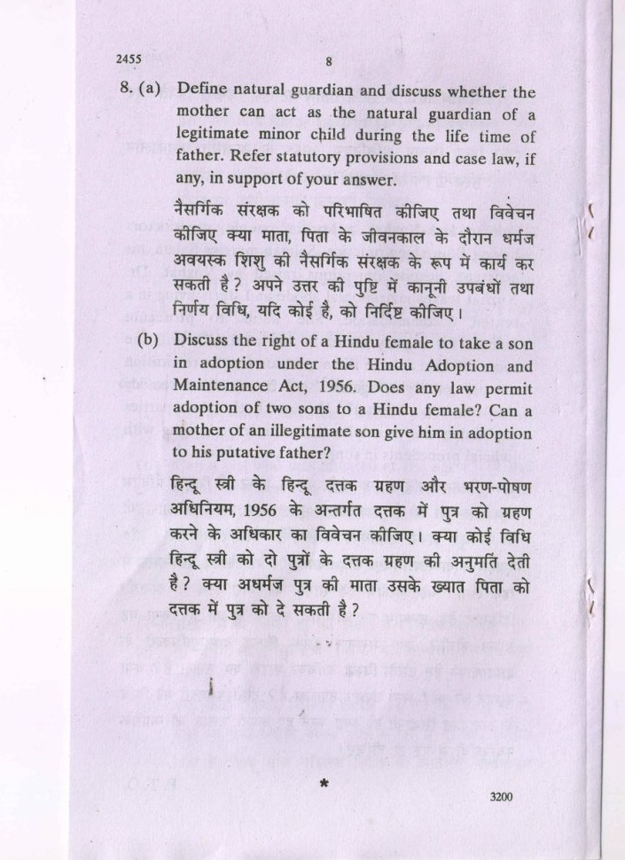
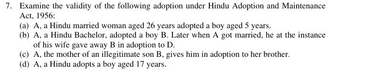
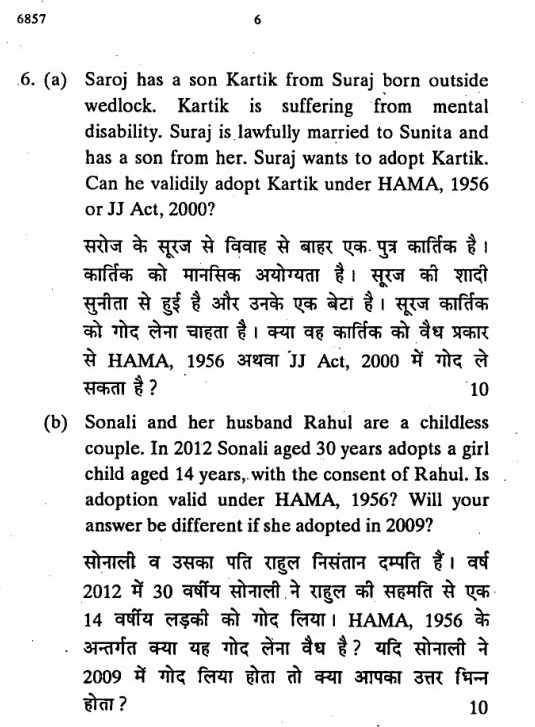
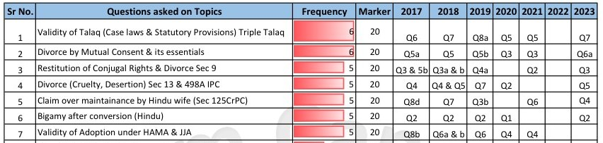

Which section supplies HAMA’s four cumulative validity gates?
Section 6.Adopter, giver, adoptee and the other mandatory conditions must all be satisfied.
A detailed study of legal parenthood, child welfare and statutory safeguards. Built around your DU material, with deep case analysis, source-traced questions and complete model answers.
Clause-by-clause statutes, full case reasoning and structured application. The source compass identifies the two missing extracts and the listed Manju judgment’s subject mismatch.
Recovered wording, unverified sitting labels and capsule-only topic references are kept distinct. Inspect the evidence →
The DU source map, missing extracts, the Manju mismatch and an honest question-bank method.
This guide follows Unit IV: Adoption (read with CARA Guidelines 2017) in the uploaded University of Delhi LB–105, Family Law–I, January 2023 material. It is an independent academic study edition, not an official DU publication. Its organising principle is simple: first identify the legal route and the relevant date; then test every statutory requirement; only then discuss the effects of adoption.
The syllabus calls the 2017 instrument “CARA Guidelines”. Its formal title is Adoption Regulations, 2017, notified under the Juvenile Justice (Care and Protection of Children) Act, 2015. That is the syllabus-era framework explained in depth here. Later changes are placed in a separate chapter rather than silently inserted into historical cases or past-paper answers. DU23 · primary · Unit IV syllabus, PDF pp.3–4 CARA2017 · Gazette · notification and regulation 1, PDF p.1
First: the uploaded DU volume reproduces Brajendra Singh and Payal, but only lists Shabnam Hashmi and Manju Sharma. The latter two briefs are therefore clearly identified judgment supplements. Second: the listed Manju Sharma v. Vipin decision is actually about interim maintenance under the Domestic Violence Act. It is included because your syllabus lists it, but no adoption holding is invented. Third: recovered PYQ wording, repository-assigned years and capsule-only topic references have different evidentiary strength.
| Syllabus component | Detailed treatment in this guide | Necessary connected material |
|---|---|---|
| Hindu Adoptions and Maintenance Act, 1956 | Sections 1–17: scope, custom, requisites, adopters, givers, eligible adoptees, conditions, effects, proof and prohibited payments | Section 30 saves pre-Act adoptions; section 20 explains an adopted child's maintenance position; the maintenance chapter itself belongs principally to Unit III |
| CARA 2017 framework | All 60 regulations mapped and explained by function; all 32 schedules identified; detailed domestic, international, relative and step-parent processes | JJ Act 2015 definitions, principles, child-status inquiry, adoption chapter, safeguards and offences |
| Brijendra / Brajendra Singh | DU facts, both sides' submissions, old section 8(c), reasoning, land dispute, exact dismissal and six-month protection | The 31 August 2010 amendment, without which the historical holding is easily misread |
| In re Adoption of Payal @ Sharinee | DU facts, guardianship history, same-gender-child problem, harmonious construction, alternative implied-amendment analysis and final declaration | JJ Act 2000, especially sections 2(aa), 40 and 41; distinguish that statute from JJ Act 2015 |
| Shabnam Hashmi | Detailed analysis of the actual Supreme Court judgment: PIL prayers, Union's position, Board's intervention, secular option and refusal of a fundamental-right declaration | Explicit missing-extract supplement; no invented individual adoption decree |
| Manju Sharma | Full factual, evidentiary and legal brief of the prescribed citation | Explicit cross-unit mismatch: maintenance, not adoption |
| DU semester PYQs | Nineteen readable question/sub-question entries, with eight linked core model answers covering every included item | Separate capsule ledger; six authored practice solutions are not represented as recovered PYQs |
| Material | Pinpoint | How it is used |
|---|---|---|
| Uploaded DU syllabus | PDF pp.3–4 | Controls the prescribed topic and case list |
| Brajendra Singh v. State of M.P. | Printed pp.196–200; PDF pp.204–208 | Primary source for the entire prescribed brief; “Brijendra” in the syllabus and “Brajendra” in the extract are not treated as different cases |
| Payal @ Sharinee | Printed pp.201–210; PDF pp.209–218 | Primary source for facts, legal reasoning, possible objections and relief |
| Uploaded HAMA bare Act | PDF pp.2–6 and p.9 | Controls the statutory explanations and the post-2010 wording |
| Uploaded PYQ capsule | PDF p.5, adoption row | Evidence of topic/year/question-number metadata only |
| Uploaded Lexis family-law text | Adoption chapter, approximately PDF pp.391–424 | Limited supporting explanation, checked against the statutes and judgments; not used to override them |
For the two reproduced DU judgments, printed page + 8 = PDF page. A reference to “printed p.201” therefore means PDF p.209, not PDF p.201. The source links throughout the guide lead to a register explaining provenance and, where available, the online source. DU23 · primary · printed pp.196–210 / PDF pp.204–218 HAMA · upload · PDF pp.2–6, 9 Capsule · metadata · PDF p.5
The most frequent mistakes are chronological. A sentence from the 2008 decision that a married Hindu woman cannot independently adopt even with her husband's consent describes the old section 8, not the amended provision. A statement that adoption is completed by a civil-court order describes the relevant 2017 JJ framework, while the later central scheme transfers adoption-order functions to the District Magistrate. Neither correction justifies rewriting what the earlier case or paper actually said. HAMA · upload · section 8 and amendment footnote, PDF p.4 DU23 · primary · Brajendra, ¶¶9–10, 18 JJ2021 · amendment · amendments to sections 58–64
Where the judgment records adversarial submissions, they are separated into claimant/appellant and respondent positions. Where it does not, the gap is disclosed. Payal is not presented as a conventional contested lawsuit with an invented opposing lawyer: its DU extract sets out three possible contrary arguments which the Court itself examines. Shabnam has three important positions, not a simplistic “petitioner versus Government” contest: the petitioner, a Union which accepted the secular statutory route, and the intervening All India Muslim Personal Law Board. Manju's husband disputes his means; an allegation that the wife was financially self-sufficient is not inserted when the judgment does not record it.
Likewise, a pleaded allegation is not automatically a judicial finding. A school record, a registered instrument, an agency report and a court's conclusion perform different functions. The case chapters deliberately retain those distinctions.
The uploaded project does not contain an authenticated, complete collection of every DU semester paper ever set. This guide therefore provides all adoption questions identified in the supplied and recovered readable corpus, not an invented claim of universal archival completeness. The 19 entries include separately identified sub-parts of composite questions; duplicate copies and duplicate reprints are not counted twice.
The capsule records adoption questions for 2017–2021, but does not supply their full wording. Those references are retained as topic metadata. In particular, its 2017 Q8(b) attribution does not match the undated paper filed under “2017” in a third-party archive, whose adoption problems are Q6(a)–(b). The discrepancy remains visible. No question wording, individual mark allocation or sitting date is manufactured to fill the gap. Capsule · metadata · adoption row, PDF p.5 Scan6857 · year unverified · paper 6857, pp.6–8
Build the conceptual map: family status, welfare, chronology and the difference between HAMA and the secular route.
Adoption is a legally recognised creation of a parent–child relationship. It is not established merely because an adult feeds a child, pays school fees, calls the child a son or daughter, nominates the child in a document, or allows the child to live in the household. Those facts may be evidence of care or intention, but the applicable adoption law determines whether legal parenthood has actually been created.
Under HAMA section 12, a validly adopted child is deemed the child of the adoptive father or mother for all purposes from the date of adoption, subject to the section's three express provisos. Under JJ Act 2015 section 2(2) and section 63, the adoption process and order create the lawful parent–child relationship, including consequences for intestacy, while preserving property already vested in the child subject to its obligations. These are legal consequences, not just affectionate descriptions. HAMA · upload · sections 11(vi)–12, PDF p.5 JJ2015 · Gazette · sections 2(2), 63
| Arrangement | What it ordinarily does | What it does not establish by itself |
|---|---|---|
| Adoption | Creates the statutory parent–child status and its rights, duties and family consequences | An exemption from eligibility, consent or safeguarding requirements |
| Guardianship | Gives responsibility or authority for the person/property of a child under the governing law and order | Automatic permanent adoptive filiation or every inheritance consequence of adoption |
| Foster care | Places a child in a family-care arrangement under the relevant framework | A completed adoption simply because the child lives with that family |
| Pre-adoption foster care | Gives temporary custody during the regulated process, pending the adoption order | The final legal order; the Regulations distinguish disruption before completion from dissolution after an order |
| Sponsorship | Supports a child's care and development through assistance | Transfer of parental status merely through financial support |
| Kafala, as discussed in Shabnam | A system of care/support in which the child's biological descent is retained | The same legal consequences as full statutory adoption under the JJ route |
Payal supplies a concrete illustration: the petitioners had already been appointed guardians, yet sought a further declaration as adoptive parents with the full consequences under law. Guardianship neither automatically accomplished the adoption nor destroyed their eligibility to seek it. DU23 · primary · Payal, ¶¶3–5, 34–35 Shabnam · supplement · ¶10
The DU discussion in Brajendra surveys the religious and secular dimensions of Hindu adoption. Historically, continuation of the male line, performance of ancestral rites and the spiritual significance of a son supplied important explanations. Property succession was also profoundly affected. The judgment quotes earlier authorities on those themes and recognises that courts ultimately have to examine the exercise of a legal right, not conduct an unrestricted inquiry into the adopter's private motive.
That historical account must not be converted into present statutory exclusions. HAMA expressly permits adoption of sons and daughters; it gives qualifying women adoption capacity; and its amended provisions allow a married woman to adopt with the required consent. Statements in a historical survey about a woman's supposed lack of spiritual needs are not a modern legal test of her worth or eligibility. Nor does the statute require a prospective adopter to prove that the predominant purpose is the performance of funeral rites. DU23 · primary · Brajendra, ¶¶11–18 HAMA · upload · sections 7–8
The JJ route adopts a different organising perspective. It concerns the right to family, care, rehabilitation and social reintegration of eligible children, while regulating prospective parents, agencies and authorities. Payal emphasises that abandonment and destitution cut across religious identities. Shabnam confirms that an optional secular statute is available irrespective of personal religious affiliation. The two routes coexist; they are not two interchangeable checklists that may be mixed at will. DU23 · primary · Payal, ¶¶17–20 Shabnam · supplement · ¶¶8–11 JJ2015 · Gazette · section 56
| Date / legal stage | Development relevant to this unit | Exam consequence |
|---|---|---|
| 21 December 1956 | HAMA enacted to amend and codify Hindu adoption and maintenance law | Post-commencement HAMA adoptions must satisfy the statutory chapter; pre-Act adoptions are separately saved by section 30 |
| 1962 amendments | Relevant provisions recognise abandoned/unknown-parentage children and the guardian route in the form reflected in the uploaded Act | Do not assume that only a known biological parent can ever give a child in adoption |
| 1970 adoption in Brajendra | Mishri Bai purported to adopt while her marriage subsisted | Old section 8(c), not today's substituted section 8, controls that factual transaction |
| JJ Act 2000; 2006 amendment | Secular rehabilitation/adoption framework; express adoption definition and expanded statutory machinery discussed in the prescribed cases | Payal and Shabnam must first be explained through the legislation they actually considered |
| 31 August 2010 | HAMA section 8 substituted; section 9 revised to confer equal giving rights on father and mother subject to the statutory conditions | Husband's consent becomes a route to a married woman's own adoption; do not quote the former absolute incapacity as current law |
| 19 February 2014 | Shabnam Hashmi decided | Secular statutory adoption recognised as optional; no general fundamental-right declaration granted |
| JJ Act 2015 | New adoption chapter, sections 56–73, and explicit safeguarding structure | This is the parent Act of the 2017 Regulations; section numbers differ from the old Act |
| 16 January 2017 | Adoption Regulations 2017 came into force | Syllabus-era procedural and eligibility framework in this guide |
| 2021 amendment / 2022 framework | Adoption-order functions shifted to the District Magistrate; 2022 Regulations superseded 2017 subject to savings | A separate later-law note, not an alteration of historical holdings |
HAMA · upload · enactment, amendment footnotes and section 30 DU23 · primary · Brajendra; Payal Shabnam · supplement · judgment dated 19 February 2014 CARA2017 · Gazette · notification, regulation 1 JJ2021 · amendment · adoption-related amendments CARA2022 · selected update · notification
Test application of HAMA; capacity and right of adopter; authorised giver; eligible adoptee; every section 11 condition. A guardian's adoption requires previous court permission under section 9.
Identify the eligible child category; follow the applicable child-status inquiry, parent assessment, consent, agency/authority procedure and adoption-order requirements.
A guardianship, fostering or financial-support arrangement is not automatically adoption. Determine whether the legally required adoption process has actually occurred.
The secular route is not restricted to non-Hindus. A Hindu may use it if its conditions are met. Conversely, HAMA does not become available to a Christian prospective adopter merely because the child is in a Hindu institution. The legal status of the adopter and child must be examined separately. This distinction is tested directly in the recovered 2008 paper. DU23 · primary · Payal, ¶¶2, 20, 34 HAMA · upload · sections 2, 7–10 DU reprint · mirror · December 2008, Q8(a), PDF p.5
The child's welfare is express in the guardian-giving procedure under HAMA section 9(5), in JJ adoption-order scrutiny under section 61, and in CARA regulation 3. It requires attention to stable care, safety, identity, health, consent, relationships and the child's development. It is not synonymous with the wealth of the proposed household.
Equally, welfare cannot be invoked as a licence to buy a child, bypass the search for missing parents, treat poverty as automatic surrender, ignore a competent person's consent, or fabricate a legal-free certificate. The carefully regulated process protects both the child and the integrity of the resulting family relationship. A lawful route must be used to achieve a beneficial outcome.
Brajendra illustrates the limits of sympathetic adjudication under the old capacity rule. Payal illustrates a welfare-oriented interpretation of an available statutory route. They are not contradictory propositions that “welfare is irrelevant” in one case and “anything is permissible” in the other. DU23 · primary · Brajendra, ¶¶10, 20–21; Payal, ¶¶17–20, 34–35 HAMA · upload · section 9(5) JJ2015 · Gazette · section 61 CARA2017 · Gazette · regulation 3
A spouse's signature cannot cure the absence of the giver's authority. A mother's consent cannot remove an adopter's living-son bar under HAMA. A child's willingness cannot dispense with legally-free status in an ordinary JJ placement. Keep these questions distinct throughout your answer.
Use Route → Date → Status → Capacity → Consent → Conditions → Procedure → Effects → Qualified conclusion. If a material fact is missing, identify it and give the alternative outcomes. An answer that says “valid, provided every requirement is fulfilled” without applying the stated ages, relationships or existing children is incomplete. An answer that confidently invents an unstated consent or custom is worse.
The model answers demonstrate how to be decisive about established facts while remaining conditional about facts the examiner has not supplied.
Application, custom, minority, overriding effect, void adoption and the complete validity structure.
The Hindu Adoptions and Maintenance Act, 1956, Act 78 of 1956, contains two substantive subjects: adoption and maintenance. In this unit, the central adoption chapter is sections 5–17, read with the preliminary provisions sections 1–4 and the saving in section 30. Maintenance obligations follow a valid family relationship, but sections 18–28 are not to be confused with the machinery that creates adoption.
| Part | Sections | Function |
|---|---|---|
| Preliminary | 1–4 | Title/extent, application, definitions, overriding effect |
| Adoption | 5–17 | Validity framework; taking/giving/adoptee eligibility; mandatory conditions; effects; property and family status; finality; evidence; prohibited payments |
| Maintenance | 18–28 | Wife; widowed daughter-in-law; children and parents; dependants and estate liability; amount, alteration, priority and enforcement against transferees |
| Repeals and savings | 29–30 | Section 29 repealed; section 30 preserves the legal treatment of pre-Act adoptions |
For adoption, do not skip the preliminary provisions. Whether a found child is Hindu, whether a proved custom can permit adoption above fifteen, and whether old law is displaced are all questions answered before the central conditions are applied. HAMA · upload · arrangement; sections 1–6 and 29–30
The uploaded central text states that the Act extends to the whole of India. Its footnote records the omission of the former Jammu and Kashmir exclusion with effect from 31 October 2019. That later territorial change should not be silently placed into a historical quotation of the 1956 or 2008 text.
The Act's title is Hindu Adoptions and Maintenance Act—“Adoptions” in the plural. Older questions and reports sometimes use slightly different short descriptions. Those typographical variations do not identify a separate statute. Local amendments, where relevant, must be distinguished from the central text; the uploaded section 16 includes a significant Uttar Pradesh evidentiary amendment discussed later. HAMA · upload · section 1 and footnotes, PDF p.2; section 16, PDF p.6
The statutory class is wider than people who use only the label “Hindu”, but it is not universal.
Clause (a): persons Hindu by religion in any of its forms or developments, expressly including Virashaivas, Lingayats and followers of the Brahmo, Prarthana or Arya Samaj.
Clause (b): persons who are Buddhist, Jaina or Sikh by religion.
Clause (c): other persons who are not Muslim, Christian, Parsi or Jew by religion, unless it is proved that they would not have been governed by Hindu law or a custom/usage forming part of it regarding the matters covered, had the Act not been passed. This is a qualified residual category, not permission to disregard the expressly excluded religious categories.
Under section 2(3), the expression “Hindu” in the Act includes a person to whom the Act applies under section 2 even though not Hindu by religion. Consequently, an answer about a Sikh, Buddhist or Jaina should not end with “not a Hindu, therefore cannot use HAMA”. HAMA · upload · section 2(1), (3), PDF pp.2–3
| Statutory category | Required facts | Common error |
|---|---|---|
| Both parents Hindu/Buddhist/Jaina/Sikh | A child, whether described by the statute as legitimate or illegitimate, of parents in the specified religions | Treating birth outside marriage as exclusion from the Act |
| One parent in a specified religion | The child must also be brought up as a member of the tribe, community, group or family to which that parent belongs or belonged | Assuming one parent's religion is sufficient without considering upbringing |
| Abandoned / unknown-parentage child | Abandoned by both parents, or parentage unknown; in either case brought up as Hindu/Buddhist/Jaina/Sikh | Assuming every child in any orphanage is automatically Hindu |
| Convert or reconvert | Conversion or reconversion to a specified religion | Treating Hindu identity as dependent only on birth |
These are application rules, not complete adoption permissions. An abandoned child brought up as a Hindu may fall within the Act, but the person giving that child must still have authority under section 9, and the adopter must satisfy sections 7/8 and 11. A Christian adult does not acquire HAMA adoption capacity because the child is Hindu; the adult's own route must be considered. HAMA · upload · Explanation to section 2(1), PDF p.2
Terminology note: “legitimate” and “illegitimate” are used here where necessary to explain the statutory language or a question's wording. Birth outside marriage does not diminish a child's dignity. The legal issue is which provisions apply, not a moral judgment about the child.
Notwithstanding section 2(1), the Act does not apply to members of a Scheduled Tribe within Article 366(25) unless the Central Government directs otherwise by notification in the Official Gazette. This is an express application limitation.
Do not reason that a tribal party's use of Hindu ceremonies by itself proves that HAMA governs. Identify the statutory exclusion and any relevant notification or applicable custom. Equally, exclusion from HAMA is not a statement that the person has no possible lawful child-care or adoption route under every other enactment. The JJ framework requires its own analysis. HAMA · upload · section 2(2), PDF p.2
“Custom” and “usage” signify a rule which has been continuously and uniformly observed for a long time and thereby obtained the force of law among Hindus in a local area, tribe, community, group or family. Two qualifications are express:
A convenience adopted for one transaction is not such a custom. The claim must identify a sufficiently definite rule applicable to the parties and establish its legal quality through appropriate evidence. Mere statements that “our community permits it” or that one elderly relative recalls an unusual adoption do not automatically discharge that task.
Custom is particularly important under section 10(iii) for a person who has been married and section 10(iv) for a person who has completed fifteen. It does not provide a general licence to evade every part of the Act. Section 4 expressly preserves only what the statute itself permits to operate. Thus the specific section 10 exceptions cannot be expanded into a customary exemption from the requirement of spouse consent or the section 11 cross-sex age difference. HAMA · upload · sections 3(a), 4, 10, PDF pp.3, 5
Minority: section 3(c) means a person who has not completed eighteen years. That definition controls the adopter's “not a minor” requirement in sections 7 and 8. It does not raise the ordinary adoptee ceiling in section 10 from fifteen to eighteen. HAMA deliberately asks two different age questions:
Not a minor: completed 18 years; sound mind; other applicable conditions.
Not completed 15 years, unless the particular custom/usage exception is established.
Maintenance: section 3(b) includes food, clothing, residence, education, medical attendance and treatment; for an unmarried daughter, reasonable expenses of and incidental to marriage. After valid adoption creates family status, maintenance questions may arise under section 20 and the applicable connected law. Adoption is not merely a device to receive property without assuming parental duties. HAMA · upload · sections 3(b)–(c), 20, PDF pp.3, 7
Save as otherwise expressly provided:
The qualification “save as otherwise expressly provided” explains why a section 10 custom can remain relevant. The temporal wording also matters: section 4 is not a clause that automatically defeats every later parliamentary enactment. Payal's reasoning concerning HAMA and the later JJ Act cannot be answered simply by citing HAMA's overriding clause and stopping. HAMA · upload · section 4, PDF p.3 DU23 · primary · Payal, ¶¶6, 17–33
Section 5(1) provides that no adoption after commencement by or to a Hindu shall be made except in accordance with the adoption chapter, and a contravening adoption is void. Within the HAMA route, essential conditions are therefore not mere administrative preferences.
Section 5(2) identifies the consequences of a void adoption:
This distinguishes a void purported adoption from a valid adoption that someone later regrets. A court may declare that a transaction never created valid adoption status; that is not the forbidden cancellation of a valid adoption under section 15. Brajendra turns on failure of legal capacity, notwithstanding care, affection and lower-court findings that adoption had factually occurred. HAMA · upload · section 5, PDF p.3 DU23 · primary · Brajendra, ¶¶9–10
“Capacity” and “right” are not redundant words. An adult, sound-minded Hindu may have general capacity under section 7 or 8, yet lack the right to adopt a son because a disqualifying living Hindu son or male-line descendant exists under section 11(i). Likewise, an otherwise eligible child cannot be validly given away by a neighbour who lacks statutory authority.
An excellent essentials answer organises the entire chapter around these four gates. It then adds proof, effects and finality instead of presenting a disconnected list of section numbers. HAMA · upload · section 6, PDF p.3
Section 30 saves adoptions made before commencement: their validity and effect are determined as if HAMA had not been passed. Accordingly, the date of the adoption is foundational. The fact that litigation arises decades later does not automatically move the transaction into a later statutory version.
Distinguish three questions: a pre-1956 adoption under section 30; a post-1956 but pre-2010 adoption affected by the old section 8; and an adoption under the substituted post-2010 provisions. “The current bare Act says…” is not a complete answer to a historical transaction. HAMA · upload · section 30, PDF p.9
Male and female capacity, spouse consent, the former section 8 and the exact 2010 change.
A male Hindu who is of sound mind and not a minor has capacity to take a son or daughter in adoption. Read “Hindu” through section 2 and “minor” through section 3(c). Both requirements relate to the person taking the child, not to the child who is to be adopted.
There is no general requirement in section 7 that the man must be married, infertile, childless in every sense, elderly, or of the same caste as the child. A bachelor or widower can possess capacity. The right to adopt the particular child still depends on section 11, including existing children and the cross-sex age requirement. Thus general capacity does not settle the whole case. HAMA · upload · sections 2, 3(c), 7 and 11
If he has a wife living, he shall not adopt except with her consent, unless she:
The third exception requires a competent judicial declaration; a spouse's unsupported description of the other spouse's mental condition is not the statutory fact. The first exception is not merely living separately, leaving the matrimonial home or declining communication. The second concerns the specified religious change, not every disagreement about household practice.
A pending divorce petition, marital unhappiness or a long separation is not an additional exception written into section 7. If a marriage has legally ended before the adoption, the person is no longer a living wife in the sense in which the proviso requires consent. But the existence and effect of the dissolution must be established, not assumed from separation. HAMA · upload · section 7 proviso, PDF p.3
The Explanation requires the consent of all living wives, unless an individual wife's consent is unnecessary for a listed reason. It is not enough to obtain the cooperation of one wife and ignore another because relations are strained.
This provision does not authorise contracting a marriage prohibited by the applicable matrimonial law. It addresses the adoption consequences of a legally relevant plurality of wives; historical marriages and the applicable marriage law require separate analysis. HAMA · upload · section 7 Explanation, PDF p.4
The DU discussion in Brajendra states that the wife's consent is a condition precedent and cannot be supplied subsequently to cure an adoption which lacked the required consent. The point is not merely proof that the wife eventually accepted or cared for the child. The issue is whether the required consent existed for the adoption when it was made.
Consent may raise evidentiary questions, but silence should not automatically be converted into a universal rule of deemed consent. Identify the evidence and distinguish consent from knowledge, later affection or participation in unrelated family events. DU23 · primary · Brajendra, ¶18, printed p.200 HAMA · upload · section 7
The substituted section 8 gives a female Hindu of sound mind who is not a minor capacity to take a son or daughter in adoption. Its proviso states that, if she has a husband living, she shall not adopt except with his consent unless he:
This is the statutory basis for a married woman's own adoption with her husband's consent. It is not simply permission for her to act as his agent. Her capacity and right must be evaluated under sections 8 and 11, with the required giving and taking and the child's eligibility separately established. HAMA · upload · substituted section 8 and 2010 amendment footnote, PDF p.4
| Female prospective adopter | Basic capacity inquiry under substituted section 8 | Further requirements |
|---|---|---|
| Unmarried adult woman | Hindu, sound mind, not a minor | Eligible child; authorised giver; section 11 conditions |
| Widow | Husband not living; no consent from a deceased husband is possible or required under this proviso | Other statutory conditions still apply |
| Legally divorced woman | Former marriage legally dissolved | Do not confuse divorce with informal separation; apply other conditions |
| Married woman with living husband | His consent ordinarily necessary | Consent must not be invented from the problem's silence |
| Married woman within an express exception | Establish the specified renunciation, conversion or judicial declaration | The exception removes that consent requirement, not every other requirement |
| Woman merely living apart | Separation does not itself add a statutory exception | Obtain legally relevant consent or establish an actual listed exception |
Neither widowhood nor an unmarried status is an automatic disqualification. Conversely, the fact that a woman has been abandoned does not, without more, prove the precise statutory exception needed to dispense with a living husband's consent.
Before the 2010 substitution, section 8 required the woman to be sound-minded and not a minor, and additionally to be:
A wife in a subsisting marriage outside those categories did not possess an independent capacity to adopt even with her husband's consent. The old law treated the ordinary husband-with-consenting-wife situation differently from the ordinary wife-with-consenting-husband situation. This asymmetry is expressly discussed in the DU judgment.
Brajendra's adoption was claimed to have occurred in 1970. The husband was alive until 1974, and there had been no dissolution. The Court therefore applied old section 8(c). The mother's physical disability and the son's care for her were not the legal disqualification: her exclusion from the old statutory capacity categories was decisive. DU23 · primary · Brajendra, ¶¶3–10, 18; printed pp.196–200
| Question | Before 31 August 2010 | From 31 August 2010 under the uploaded amendment |
|---|---|---|
| Can a married woman in an ordinary subsisting marriage adopt in her own right merely with her husband's consent? | No, not under the former section 8(c) | Yes, subject to his consent and all other conditions |
| Can a divorced adult, sound-minded Hindu woman adopt? | Yes, within old section 8 | Yes, within substituted section 8 |
| Does long separation equal legal divorce? | No | No |
| Does a physical disability by itself negate section 8 capacity? | Not a statutory disqualification expressed in section 8 | Not a statutory disqualification expressed in section 8 |
| Do age and existing-child restrictions disappear for a female adopter? | No | No |
| Must an adult woman always obtain a male relative's permission? | No such general rule; the statute identifies the relevant marital categories | No such general rule; only the applicable statutory consent requirement |
The amendment is a legal change, not a declaration that all earlier invalid transactions have automatically become valid. To test an adoption, use its legally relevant date. If a later, separate adoption is asserted, it must itself be proved; it cannot simply be inferred from a change in the statute. HAMA · upload · section 8 amendment footnote DU23 · primary · Brajendra, ¶¶9–10
A woman's power to take a child in adoption comes from section 8. Her power to give her child in adoption is addressed by section 9. An answer about one is not automatically an answer about the other.
This distinction is particularly important for a mother of a child born outside marriage. The law can recognise her authority on the giving side without treating every person biologically connected with the child as an adoptive parent. Likewise, the adopter's spouse and the child's other biological parent may be entirely different persons. Identify which consent is being discussed.
The same 2010 legislation revised section 9 to give father and mother equal rights, subject to its proviso. It did not repeal the need to prove the other relevant parent's consent where that proviso applies, nor did it authorise an adoptive parent to give an already adopted child away for a second HAMA adoption. HAMA · upload · sections 8–9, PDF p.4
Illustration—not a recovered PYQ: an adult Hindu woman aged 30 wishes to adopt a girl aged 14. Their age difference is 16. Section 11's 21-year difference is triggered only in the specified cross-sex adoptions. It does not independently invalidate this female-adopter/female-child adoption. The girl's ordinary under-fifteen eligibility and the woman's other conditions must still be checked.
If the same woman adopts a boy aged 14, section 11(iv) is engaged: a 16-year difference is insufficient. If she is 35 and he is 14, the difference is exactly 21 and meets that numerical requirement, subject to the rest of the Act.
This must not be confused with the 25-year minimum gap in the 2017 CARA eligibility framework. That is a different route and cannot simply be imported into a question expressly governed by HAMA. HAMA · upload · section 11(iii)–(iv), PDF p.5 CARA2017 · Gazette · regulation 5(6)
JJ Act 2015 section 57 and CARA 2017 regulation 5 require their own assessment of prospective parents. A single woman may adopt a child of either gender under that framework; a single man may not adopt a girl. Married applicants require both spouses' consent. Suitability, age, financial and health conditions, the relevant child category and the regulated process remain essential.
Therefore, an answer saying that a Hindu woman can adopt two sons “because JJ permits it” must still explain which eligible child, which process and which version of the law. The absence of HAMA's same-gender-existing-child embargo under the secular scheme is not the absence of every eligibility restriction. JJ2015 · Gazette · section 57 CARA2017 · Gazette · regulations 4–5 DU23 · primary · Payal, ¶¶13–14, 20, 34
Parental authority, equal rights, the putative-father distinction and previous court permission for guardians.
Only the father, mother or guardian of the child has capacity to give the child in adoption under HAMA. An aunt, uncle, grandparent, teacher, institution officer or family friend is not authorised merely by affection, proximity or physical custody. Such a person must establish the relevant statutory character and, where the guardian route is invoked, the conditions for that route.
The Act's Explanation expressly excludes an adoptive father or adoptive mother from the expressions “father” and “mother” for section 9. That exclusion works with section 10(ii), which bars a further adoption of a person already adopted, and section 15, which prohibits cancelling a valid adoption. An adoptive parent is not free to give a child to a friend because a biological child is subsequently born or a new spouse objects to the adopted child. HAMA · upload · sections 9(1), Explanation (i), 10(ii), 15
Subject to subsection (4), the father or mother, if alive, has an equal right to give a son or daughter in adoption. Neither may ordinarily exercise it without the other's consent, unless one has:
The subsection recognises equality in legal authority while retaining a safeguard against unilateral exercise where the other relevant parent's consent is required. Do not write the former rule that the living father alone has the right as if it remains the present central wording. The uploaded bare Act records the substitution of section 9(2) and omission of the former section 9(3) with effect from 31 August 2010. HAMA · upload · section 9(2) and amendment footnotes, PDF p.4
The section refers to the child's father and mother, not simply the giver's current spouse. A parent's remarriage does not by itself turn a step-parent into the child's biological parent for section 9. Nor does a custody arrangement, by its mere existence, answer the separate question of authority to give the child in adoption.
For example, where a child's mother has custody after divorce, her former husband's continuing legal status as father cannot simply be ignored because they are no longer married to one another. Equally, a stepfather's willingness is not automatically the father's consent. Apply the statutory wording and the proven facts; do not equate custody with an unrestricted power permanently to change parentage.
Before the 2010 change, the father, if alive, ordinarily had the right to give, subject to the mother's consent; the mother could give in the specified situations such as the father's death, renunciation, conversion or competent-court declaration of unsound mind. The reform replaced that hierarchy with the equal-rights formulation.
The distinction matters in older transactions, but it should not obscure the separate jurisprudence concerning a mother of a child born outside marriage. That issue is not solved by treating the mother as a guardian under section 9(4) merely because the child is described as illegitimate. The ordinary parental giving question and the exceptional guardian question must remain separate. HAMA · upload · 2010 footnotes, PDF p.4 Budhi Ram · 2026 supplement · ¶¶18–28; discussion of the pre-2010 provision
The recovered DU questions ask whether a mother can give her son to her brother and whether she can give an “illegitimate” son to his putative father. Putative father in this context means the man asserted to be the child's biological father outside a legally recognised marital parentage setting.
The traditional judicial distinction recognises the mother's power to give such a child and does not make the putative father's consent a necessary condition merely because he is the biological father. The authority to give and the eligibility to take must not be confused. There is no blanket HAMA prohibition which says that a man may never adopt a child merely because he is that child's biological but non-marital father. But every other requirement remains: his own capacity, any necessary wife's consent, section 10 eligibility, the section 11 existing-child restrictions and actual giving and taking.
A later verification, not a DU extract: Budhi Ram v. Ram Kesh, decided on 3 September 2026, expressly separates these questions. In considering a 1970 adoption it discusses the mother's authority and earlier decisions including Sunilkumar v. Anila V. (1 June 2010); it rejects use of section 9(4) as the basis merely because the child was born outside marriage. It also explains that section 12's consequences do not themselves prohibit adoption by the biological father. This is supplementary confirmation, not an authority that could have been cited in a 2015 examination. Budhi Ram · 2026 supplement · ¶¶15–30
The result is not that biological paternity automatically becomes valid adoption. Nor does it mean a married father with a living legitimate son can bypass section 11(i). The Suraj–Saroj–Kartik problem is designed to expose that mistake. A valid giving-side act cannot cure a taking-side bar.
The guardian may give the child in adoption with the previous permission of the court, including to the guardian personally, where:
The statutory language must be applied to the actual parental situation. One absent parent is not, without analysis of the other parent's position, equivalent to both parents being unavailable in the statutory sense. The existence of a willing mother cannot automatically be bypassed by calling a family friend the guardian.
Previous permission is crucial. A later attempt to legitimise an unauthorised giving by a guardian should not be treated as the same thing as the advance judicial safeguard which subsection (4) requires. The provision expressly permits adoption by the guardian himself, so the simplistic slogan that a guardian can never adopt a ward is wrong. What makes that situation lawful is the statutory permission and scrutiny, not the guardian's unilateral decision. HAMA · upload · section 9(4), PDF p.4
The Explanation defines a guardian as a person having care of the child's person, or both person and property, and includes:
The definition is not limited to the two expressly included forms. Nevertheless, proof of care is not the end of the inquiry: the circumstances in subsection (4), the court's previous permission and the welfare scrutiny remain necessary. A person who merely controls property without the relevant care of the child's person does not fit the stated definition on that fact alone. HAMA · upload · section 9 Explanation (ia), PDF p.4
For section 9, “court” means the city civil court or district court within whose local jurisdiction the child to be adopted ordinarily resides. The statutory location is tied to the child's ordinary residence, not whichever forum is most convenient to the intended adopter.
Under subsection (5), before granting permission the court must satisfy itself that:
The last clause must be read with section 17's prohibition of adoption payments. It is not permission to turn a child into the subject of a purchase bargain. A lawful, scrutinised expense is conceptually different from a private reward for handing over a child. HAMA · upload · section 9(5), Explanation (ii); section 17
| HAMA concept | JJ / CARA concept | Why they cannot simply be substituted |
|---|---|---|
| Parent gives in a HAMA adoption | Parent surrenders under the JJ process before CWC | Surrender begins a protected process with counselling and reconsideration; it is not automatically a private adoption by a selected person |
| Guardian obtains previous court permission under section 9 | CWC declares an OAS child legally free under JJ section 38 | Different statutory decisions, authorities and functions |
| Actual giving and taking under section 11(vi) | Regulated placement followed by adoption order | Neither route is completed by naming the ceremony or document belonging to the other |
| Adopter's spouse consents under section 7 or 8 | Both spouses consent under JJ section 57 / CARA regulation 5 | Consent remains necessary under its own route; numerical age and child-eligibility rules differ |
Payal itself explains both HAMA's guardian provision and the secular JJ route. Its result does not abolish the distinctions between them. DU23 · primary · Payal, ¶¶6, 13–20, 34 JJ2015 · Gazette · sections 35, 38, 57–61
Hindu status, no previous adoption, marriage and age exceptions, custom and child participation.
No person can be taken in adoption under HAMA unless the section 10 conditions are met. The conditions concern the person adopted; they are separate from the adopting adult's mental capacity, age and marital consent.
| Clause | Ordinary rule | Express qualification |
|---|---|---|
| 10(i) | The person is a Hindu, understood through section 2 | Apply the statutory inclusion and upbringing rules; do not replace them with assumptions based on an institution's name |
| 10(ii) | The person has not already been adopted | An earlier merely purported void transaction must be distinguished from a valid existing adoption |
| 10(iii) | The person has not been married | A custom or usage applicable to the parties may permit adoption of married persons |
| 10(iv) | The person has not completed fifteen years | A custom or usage applicable to the parties may permit adoption after completing fifteen |
All four are necessary. Proving a valid custom about age does not automatically prove a custom about marriage; both exceptions must be addressed if both restrictions arise. HAMA · upload · section 10, PDF p.5
HAMA eligibility requires the child to fall within the Act's conception of Hindu identity. The Explanation to section 2 includes specified children of Hindu/Buddhist/Jaina/Sikh parents, certain mixed-parentage children brought up in the relevant community, and abandoned or unknown-parentage children brought up in a specified religion.
Illustration—not a recovered PYQ: a baby of unknown parentage is being brought up as Hindu in an institution. The Explanation may bring the child within HAMA. It does not establish that every prospective adopter, including a Christian applicant, can use HAMA. It also does not establish that the institution's manager can give the child without satisfying section 9.
For an orphan, abandoned or surrendered child in the regulated child-care system, the JJ/CARA safeguarding framework must be considered; the mere selection of a religious label must not become a way to bypass mandatory protection, lawful sourcing and authorisation. HAMA · upload · section 2 Explanation; sections 9–10 JJ2015 · Gazette · sections 38, 56, 65–66, 80
Section 10(ii) prevents successive adoption of the same person after a valid adoption. Section 9 excludes adoptive parents from the parental giving power, and section 15 prohibits cancelling a valid adoption. These provisions reinforce one another.
The later birth of a biological son does not destroy the first adopted son's status. Nor does an adoptive father's subsequent marriage confer a power on the new wife to demand that the child be “returned” or adopted away. Those are directly tested variations in the recovered 2008 and 2010 papers.
This does not mean that every allegation of a previous adoption must be accepted. If that earlier transaction was void under section 5, the claimed legal status did not arise. Its invalidity, however, must be established; a party cannot call a valid adoption void merely because it has become inconvenient. HAMA · upload · sections 5, 9 Explanation, 10(ii), 15 DU reprint · mirror · December 2008 Q8(b) DU official · reprints · December 2010 Q7(b)
Section 10(iii) is worded in terms of a person who has not been married. A child widow has been married. The husband's death does not turn the child's personal history into one in which no marriage ever occurred.
Accordingly, in the recovered Chand–Kalu question, the fact that Chand is only eleven meets the ordinary age ceiling but does not dispose of her eligibility. Her status as a child widow engages the marriage restriction. The relevant exception is a legally established custom or usage applicable to the parties permitting such adoption.
Do not answer solely by condemning the earlier child marriage or assuming its precise legal validity has already been adjudicated. The paper describes a child widow and asks about adoption. Identify the section 10(iii) issue on those facts, while avoiding unnecessary assumptions about a separate matrimonial proceeding. HAMA · upload · section 10(iii) DU reprint · mirror · December 2008 Q8(e), PDF p.5
The ordinary rule is not completed fifteen, not “under eighteen” and not “fifteen or younger”. A person who has completed fifteen has crossed the ordinary threshold. A fourteen-year-old may satisfy this requirement, but a seventeen-year-old needs the custom exception.
The adopter's majority at eighteen and the CARA framework's treatment of children below eighteen are separate questions. Mixing the figures produces the wrong answer in a straightforward HAMA problem.
Adopting adult: not a minor under HAMA sections 3(c), 7–8.
Ordinary HAMA adoptee threshold under section 10(iv).
Minimum difference in the two cross-sex HAMA situations under section 11(iii)–(iv).
No fixed upper adopter age is stated in sections 7–8. That does not mean an older adopter automatically succeeds: the remaining requirements still matter. Equally, do not import CARA's composite-age ceilings into HAMA without identifying why the secular route rather than HAMA governs. HAMA · upload · sections 3(c), 7–8, 10(iv), 11(iii)–(iv)
A complete answer must establish:
The examiner may provide an established custom as a fact. If so, apply it. If the problem merely says a seventeen-year-old was adopted, do not invent the missing custom. The correct answer is that the ordinary rule is not met and validity would require proof of the statutory exception, along with all other conditions. HAMA · upload · sections 3(a), 10(iii)–(iv)
Section 10 does not list disability or birth outside marriage as a general incapacity to be adopted. The adopter's requirement of sound mind under sections 7–8 should not be mistakenly transferred to the adoptee.
This matters in the Kartik problem: his mental disability does not itself supply a HAMA section 10 bar. The question also states that Suraj has a son from his lawful marriage, which raises a different and decisive section 11(i) problem. An answer that concentrates exclusively on Kartik's disability misses the statutory structure.
Within the JJ/CARA route, a child's additional support needs are addressed through appropriate eligibility, medical information, preparation and care—not by treating the child as having lesser human worth. Disability also does not by itself establish that a child has been orphaned, abandoned, surrendered or otherwise made eligible for a particular adoption route. HAMA · upload · sections 10–11 Scan6857 · year unverified · Q6(a), p.6 CARA2017 · Gazette · regulations 4, 48; Schedule XVIII
Section 10's eligibility list should be read alongside other provisions addressing the child's wishes. Under HAMA section 9(5), the court deciding a guardian's application gives due consideration to the child's wishes according to age and understanding. The JJ Act and CARA Regulations contain their own participation safeguards; relative and step-parent procedures use express consent provisions for a child who has completed five.
Do not substitute a single invented universal rule such as “every child above seven must consent under HAMA” or “a child's wishes are legally irrelevant”. State the relevant provision and its actual scope. HAMA · upload · section 9(5) JJ2015 · Gazette · section 61(1)(b) CARA2017 · Gazette · regulation 51(3), Schedules XIX–XX
Existing-child and descendant bars, the 21-year cross-sex gap, and actual giving and taking.
Section 11 begins by requiring the stated conditions to be complied with in every adoption under the HAMA chapter. A person may have general capacity under section 7 or 8 yet fail one of these conditions. Conversely, a compliant age difference does not cure an unauthorised giver or an ineligible adoptee.
The six clauses address existing children and descendants, cross-sex age differences, simultaneous adoption, and actual giving and taking with the required intention. A good answer applies the relevant clause instead of using the vague expression “the parties are capable”. HAMA · upload · sections 6, 11, PDF pp.3, 5
When a son is to be adopted, the adoptive father or mother must not have a living Hindu son, son's son or son's son's son, whether by legitimate blood relationship or adoption, at the time of adoption.
Each component matters:
The figure shows the statutory relationships; it does not mean that all three descendants must exist before the bar applies. The presence of any one of the specified disqualifying descendants is sufficient. HAMA · upload · section 11(i), PDF p.5
For adoption of a daughter, the adopter must not have a living Hindu daughter or son's daughter, whether by legitimate blood relationship or adoption.
This list is not identical to the male list. Avoid memorising only “no child of the same sex”: that shorthand hides both the descendants included and the relationships omitted. In an exam, give the exact statutory list before applying it.
Payal's central problem: the Hindu petitioners already had a biological daughter. A further adoption of a daughter under the ordinary HAMA rule encountered section 11(ii). The Court found an available JJ Act 2000 route for a surrendered child, rather than declaring section 11(ii) generally abolished for all Hindu adoptions. HAMA · upload · section 11(ii) DU23 · primary · Payal, ¶¶1–7, 20–33
The phrase “living at the time of adoption” prevents a later birth from retrospectively invalidating an adoption valid when made. If Shanker validly adopted Vijay and a biological son Ajay was later born, the later birth is not a statutory licence to cancel Vijay's adoption or give him away again.
The follow-up issues are therefore not just section 11(i): section 15 prohibits cancelling valid adoption, section 10(ii) prevents adopting an already adopted person, and section 9's Explanation excludes an adoptive parent from the relevant parental giving power. State all of these when the question proposes a second placement. HAMA · upload · sections 9, 10(ii), 11(i), 15 DU reprint · mirror · December 2008 Q8(b)
Section 11(i)'s wording refers to legitimate blood relationship or adoption. It does not treat the mere existence of an “illegitimate” son as the specified disqualification. That proposition is different from saying that such a child is unprotected: HAMA section 20 expressly addresses maintenance of legitimate and illegitimate children, and section 10 does not exclude a child merely on that ground.
It is also different from the Suraj problem. Suraj is stated to have a son from his lawful marriage to Sunita. That son directly raises the section 11(i) bar. The proposed child's disability or biological link to Suraj does not remove it. HAMA · upload · sections 10, 11(i), 20 Scan6857 · year unverified · Q6(a), p.6 Budhi Ram · 2026 supplement · ¶¶16–17, 25–30; supplementary later clarification
| Adoption | Statutory requirement | Example on the stated ages |
|---|---|---|
| Male adopts female | Adoptive father must be at least 21 years older | Man 35, girl 14: difference 21; this condition is met |
| Female adopts male | Adoptive mother must be at least 21 years older | Woman 26, boy 5: difference 21; this condition is met |
| Male adopts male | No 21-year difference specified by these clauses | Still check adult capacity, child age and all other conditions |
| Female adopts female | No 21-year difference specified by these clauses | Woman 30, girl 14 is not invalid merely because their difference is 16 |
When exact birth dates are supplied, calculate the actual difference; do not rely on rounded descriptions. The “at least” wording includes an exact twenty-one-year difference. The absence of a same-sex 21-year rule does not authorise adoption by a minor: section 7 or 8 still requires an adult.
CARA 2017 uses a 25-year gap and additional age ceilings under a different route. HAMA does not automatically inherit those numerical criteria. HAMA · upload · section 11(iii)–(iv) CARA2017 · Gazette · regulation 5(4)–(7)
The same child may not be adopted simultaneously by two or more persons. Do not treat a child as capable of being allocated independently to two unrelated adoptive families through one transaction.
At the same time, distinguish a statutory adoption into a married person's family, with the required spouse consent and the parentage consequences governed by the Act, from two independent persons asserting separate simultaneous adoptions. Section 14 expressly recognises the adoptive-mother status of a wife when her husband adopts. The ordinary marital family mechanism is not to be confused with a joint claim by two friends to have each independently adopted the same child. HAMA · upload · sections 11(v), 14
The child must be actually given and taken in adoption by the parents or guardian concerned, or under their authority, with the intention of transferring the child:
to the family of adoption.
There are both an act and an intention. Physical movement alone may be fostering, schooling, boarding or temporary care. A document or declaration alone may fail to establish the actual transaction. The evidence must demonstrate the legally operative giving and taking and the intention to create adoptive family status.
The words “or under their authority” matter. They do not dispense with the giver's underlying statutory authority or with the substantive conditions; they address performance under authority. Do not convert that wording into a rule that any intermediary may obtain or transfer a child without consent or judicial permission. HAMA · upload · section 11(vi), PDF p.5
The proviso expressly states that performance of dattahomam is not essential to the validity of an adoption. It follows that absence of this particular ritual is not, by itself, fatal under the statute.
It does not follow that actual giving and taking is unnecessary. The two propositions must always be kept together:
A particular ritual is not mandatory; the statutory act of giving and taking with the requisite intention is.
That distinction is more accurate than either “all ceremonies are compulsory” or “no legally significant act is required”. HAMA · upload · section 11(vi) proviso
| Evidence | What it may support | What it cannot automatically cure |
|---|---|---|
| Witnesses to giving/taking | The act, participants and intention | Lack of adopter capacity, prohibited existing child or ineligible adoptee |
| Registered document signed by giver and taker | Section 16's rebuttable presumption, if its conditions are met | Proven contravention of the Act |
| School/family records | Corroboration of asserted family treatment or status | Absence of the statutory transaction merely by naming someone “father” |
| Photographs | Participation and surrounding circumstances | Every element of consent, legal authority and eligibility by themselves |
| Long residence or maintenance | Care and relationship in fact | Automatic adoptive status |
| Will in the child's favour | Testamentary intention and possibly an assertion about relationship | Statutory adoption capacity or a valid adoption by itself |
Brajendra is particularly instructive: the lower courts accepted factual adoption and referred to a will, but the statutory capacity issue remained fatal. The Court separately recognised the position concerning property bequeathed by the will. A will and adoption are not interchangeable legal sources of entitlement. DU23 · primary · Brajendra, ¶¶3, 8–10 HAMA · upload · sections 6, 11, 16
Every section 12 proviso, later spouses, irreversibility, registered-document evidence and prohibited payments.
An adopted child is deemed to be the child of the adoptive father or mother for all purposes with effect from the date of adoption. From that date, ties in the family of birth are deemed severed and replaced by the ties created in the adoptive family.
Three cautions immediately follow. First, this presupposes a valid adoption; section 12 cannot validate a transaction which fails sections 5–11. Second, the operative date matters; the section is not an unrestricted power to reopen every prior succession. Third, the provisos expressly preserve specified consequences connected with the family of birth and pre-existing property. HAMA · upload · sections 5, 12, PDF pp.3, 5
The child cannot marry a person whom the child could not have married had the child continued in the family of birth. Adoption therefore does not become a method of avoiding birth-family prohibitions by asserting that every biological tie has been erased.
The adoptive family relationship must also be considered under the applicable marriage law. For an exam answer, distinguish the section 12(a) preservation of birth-family restrictions from the separate rules that attach to adoptive relationships. Do not claim that severance of family ties creates permission to marry anyone in the biological family. HAMA · upload · section 12(a), PDF p.5
Property vested in the child before adoption continues to vest in the child, subject to obligations attached to its ownership, including an obligation to maintain relatives in the family of birth.
This is a specific qualification to the general change of family ties. Distinguish:
Illustration—not a PYQ: a child already owns a property subject to an obligation to maintain a birth-family relative. Valid adoption does not confiscate the property, but it also does not automatically remove the burden. An answer stating that the child must surrender every asset to the adoptive family is inconsistent with the proviso. HAMA · upload · section 12(b)
An adopted child shall not divest any person of an estate which vested in that person before adoption. This provision protects an earlier vesting from being undone simply by the later creation of adoptive status.
Do not collapse provisos (b) and (c):
| Provision | Whose pre-existing position is protected? | Core point |
|---|---|---|
| 12(b) | The adopted child's own vested property | It stays with the child, with attached obligations |
| 12(c) | Another person's already vested estate | Later adoption does not divest that estate |
The old doctrinal discussion of “relation back” should therefore never be used to defeat the present express non-divestiture provision. For a property problem, establish the nature and date of vesting and the relevant succession rule; do not assume that the adoption declaration automatically transfers the entire family estate. HAMA · upload · section 12(c)
Adoption supplies a legally relevant family status from which rights and duties can follow under the applicable law. It is not itself a gift deed, partition decree, testamentary disposition or universal answer to every succession dispute.
Brajendra demonstrates the distinction. The Court did not treat the invalid adoption as erasing the separate will in the appellant's favour. It noted that property given by the will was to be retained, while the other land involved in the ceiling controversy remained contentious. Conversely, a will referring to someone as an adopted son could not create capacity under old section 8(c).
In a problem, identify the source of the claimed right: valid adoption and the applicable succession rule; a will; a transfer; or a claim concerning land-ceiling treatment. Do not combine them without analysis. DU23 · primary · Brajendra, ¶¶3, 10, 20–21
Subject to an agreement to the contrary, adoption does not deprive the adoptive father or mother of power to dispose of property by transfer inter vivos or will.
The qualification “subject to any agreement to the contrary” must be mentioned. The section means that adoption alone does not make the parent's disposable property untouchable. It does not give the parent a larger proprietary power than the parent otherwise possesses under the law governing that property. Thus distinguish the section 13 proposition from questions about the nature of an interest, powers over joint property, or the validity of the particular transfer.
Exam contrast: “The child has become a lawful child” is not equivalent to “every property of the parent immediately belongs to the child”. HAMA · upload · section 13, PDF p.6
The four subsections give specific rules:
These provisions explain why a later marriage does not automatically make the new spouse an adoptive parent. They also show why the particular timing in the Bhishma–Veera–Ambika question matters. If Bhishma adopted Veera as a bachelor and later married Ambika, section 14(3) makes Ambika a stepmother, not an adoptive mother merely because she has joined the family. HAMA · upload · section 14, PDF p.6 DU reprint · mirror · December 2008 Q8(c)
No valid adoption can be cancelled by the adoptive father or mother or any other person. The adopted child cannot renounce the status and return to the family of birth in the legal sense contemplated by the section.
This is a rule of legal status and permanence. It is not a direction that a child must remain in an unsafe household without protection, nor that courts lack powers under other child-protection laws. Physical residence, custody, safety intervention and legal cancellation are different questions.
Common invalid reasons for purported cancellation include:
A declaration that the original transaction was void is different: section 15 protects valid adoption, not a transaction lacking essential conditions. Likewise, the JJ/CARA mechanism for disruption or legally ordered dissolution must be discussed under that separate regime rather than silently treated as an amendment to HAMA section 15. HAMA · upload · sections 5, 15 CARA2017 · Gazette · regulations 2(7)–(8), 13(6)–(8)
When a document:
the court shall presume compliance with the Act unless and until disproved.
“Shall presume” is stronger than a statement that the court may casually consider the document, but the final words make the presumption rebuttable, not conclusive. A proved breach of capacity, consent, age or another mandatory condition cannot be made immune from scrutiny simply by registration.
Under the central provision, a registered document is not stated to be the only imaginable way of proving every adoption. Do not create a universal national requirement of a registered deed where the statutory rule instead describes a presumption. The giving/taking requirement remains substantive, and reliable evidence must establish the transaction when the presumption is unavailable or rebutted. HAMA · upload · section 16, PDF p.6
The uploaded bare Act separately prints U.P. section 16(2). For an adoption made on or after 1 January 1977, no court in Uttar Pradesh is to accept proof of giving and taking except the specified registered document, subject to its secondary-evidence proviso. This is a state-specific evidentiary rule, not the unqualified central position.
Its temporal limitation also matters: a 1970 adoption is not made subject to that post-1977 rule merely because litigation continues later. The later Budhi Ram judgment illustrates this distinction. Do not assume that this short note is an exhaustive audit of all state amendments; use the relevant jurisdiction's operative text where a problem expressly raises it. HAMA · upload · Uttar Pradesh amendment following section 16, PDF p.6 Budhi Ram · 2026 supplement · discussion of the 1970 adoption and the 1977 evidentiary requirement
Subsection (1) prohibits both sides of an adoption bargain: no person may receive or agree to receive a payment or reward in consideration of adoption, and no person may make, give or agree to make or give a payment or reward whose receipt is prohibited.
Subsection (2) provides punishment of imprisonment up to six months, or fine, or both. Subsection (3) requires previous sanction of the State Government or an officer authorised by it before prosecution under this section is instituted.
Do not confuse a private price for a child with a legally permissible, scrutinised expense or fee under the applicable process. HAMA section 9(5) addresses the court's scrutiny in guardian cases, while the JJ/CARA route has its own permitted-fee and anti-payment provisions. None authorises a private reward disguised as a donation in exchange for a child. HAMA · upload · sections 9(5), 17, PDF pp.4, 6 JJ2015 · Gazette · section 61(1)(c) CARA2017 · Gazette · regulation 46
Section 20 binds a Hindu during his or her lifetime to maintain legitimate or illegitimate children and aged or infirm parents in the terms provided there. Read that provision with section 12's adoptive status and the definition of maintenance in section 3(b). A validly adopted child's place in the family is not exhausted by inheritance expectations: care, education, residence and medical needs are central.
This connection explains why maintenance can be relevant to an adopted child's legal position. It does not transform the separately prescribed Manju Sharma judgment into an adoption case: its actual facts concern maintenance of a wife and her biological daughter, and its reasoning must be reported accurately. HAMA · upload · sections 3(b), 12, 20 Manju · supplement · ¶¶2–4, 17–22
The 2000 Act in the DU cases and the 2015 Act underpinning CARA 2017, with clear version labels.
The prescribed adoption cases use the Juvenile Justice (Care and Protection of Children) Act, 2000, as amended in 2006. The Adoption Regulations 2017, however, were made under the Juvenile Justice (Care and Protection of Children) Act, 2015. They are connected stages of the law, not alternative names for the same enactment.
The detailed 2015 statutory account below follows the original Gazette's court-based framework, appropriate to understanding the 2017 Regulations. The 2021 amendment later substitutes District Magistrate functions in the adoption provisions. That change is explained separately; it is not concealed by calling this original wording the complete current law.
In the DU extract of Payal, section 40 identifies adoption, foster care, sponsorship and aftercare as alternatives for rehabilitation and social reintegration. Section 41 then provides the specific adoption structure:
| Provision in the 2000 Act as discussed in DU | Rule / significance |
|---|---|
| Section 2(aa) | Adoption permanently separates the child from biological parents and creates the legitimate parent–child relationship with adoptive parents, with its rights, privileges and responsibilities |
| Section 2(d)(v) | Includes the relevant child without a parent and willing care, or abandoned/surrendered by parents, within the care-and-protection category |
| 41(1) | Primary responsibility for the child's care and protection lies with the family |
| 41(2) | Adoption is a means of rehabilitation for orphaned, abandoned or surrendered children |
| 41(3) | Court may give children in adoption after the required investigations; the statutory/guideline machinery matters |
| 41(4) | Recognised specialised adoption agencies support placements |
| 41(5)(a) | Abandoned child not offered until two CWC members declare legal availability under that provision |
| 41(5)(b) | Surrendered child not offered before the two-month reconsideration period expires |
| 41(5)(c) | Consent required from a child able to understand and express it |
| 41(6) | Adoption may be allowed irrespective of marital status; parents may adopt a same-sex child irrespective of the number of living biological sons/daughters; childless couples are included |
The two-member wording of old section 41(5) must not be substituted for the three-member rule in JJ Act 2015 section 38(4). Similarly, the same-gender provision in the old Act is not an unrestricted exemption from all the conditions of later CARA regulations. DU23 · primary · Payal, ¶¶11–16, printed pp.204–205 Shabnam · supplement · ¶¶4–7
The 2015 Act treats adoption as part of a child-friendly system of care, protection, development and rehabilitation. Section 1(4) gives its scheme overriding application to the specified matters concerning children in need of care/protection and children in conflict with law, including adoption and restoration decisions. Its adoption chapter must also be read with the specific HAMA saving in section 56(3).
The original Gazette has historical territorial wording. It is reproduced here as a source of the syllabus-era adoption machinery, not as a certification that every introductory word is current without later amendments. The important academic task is to distinguish the operative adoption provisions, their statutory source and the subsequent changes. JJ2015 · Gazette · preamble and section 1, PDF pp.1–2; section 56, PDF p.27
| Definition | Elements relevant to adoption |
|---|---|
| Child — section 2(12) | Person who has not completed 18 years |
| Adoption — 2(2) | Permanent separation from biological parents and lawful child status in the adoptive family, with rights, privileges and responsibilities attached to biological parenthood |
| Abandoned child — 2(1) | Deserted by biological/adoptive parents or guardians and declared abandoned by CWC after due inquiry |
| Orphan — 2(42) | Child without biological/adoptive parents or legal guardian; or whose legal guardian is unwilling or incapable of taking care |
| Surrendered child — 2(60) | Relinquished by parent/guardian to CWC on the specified physical, emotional and social factors beyond control, and declared as such by CWC |
| Legally free for adoption — 2(16) | A CWC declaration after due inquiry under section 38 |
| Relative — 2(52) | Paternal uncle/aunt, maternal uncle/aunt, paternal grandparents or maternal grandparents |
| Best interest — 2(9) | Decision basis ensuring basic rights and needs, identity, social well-being, and physical, emotional and intellectual development |
| Authority — 2(7) | Central Adoption Resource Authority constituted under section 68 |
| Central Authority — 2(11) | Government department recognised under the Hague inter-country adoption framework |
The definition of relative is deliberately specific. It does not mean every distant cousin, family acquaintance or person who shares a surname. Nor does the definition of “child” permit adult adoption under the JJ route by importing HAMA's custom exception. JJ2015 · Gazette · section 2, PDF pp.2–7
Section 2(14) covers a broad set of situations: homelessness and lack of support; prohibited labour, begging or street life; living with an abusive, threatening or dangerous person; specified disability/illness coupled with lack of care or unfit carers; an unfit/incapacitated parent or guardian; absence of parents and care, abandonment or surrender; missing/runaway children and untraceable parents; sexual abuse or exploitation for illegal acts; vulnerability to drugs or trafficking; exploitation for unconscionable gains; armed conflict, civil unrest or natural calamity; and imminent unlawful child marriage.
The detailed conditions in those categories matter. Disability by itself, for example, is not a statement that the biological family has no rights. Nor does a child become available for adoption merely because the family is poor or an institution can provide more resources.
Care-and-protection status opens the protective jurisdiction. Legally-free status follows the required inquiry and declaration for the relevant adoption category. Relative and step-parent adoptions have specifically regulated pathways. Do not collapse all three concepts into a single label of “needy child”. JJ2015 · Gazette · sections 2(14), 35–38, 56
| Principle | Application to adoption analysis |
|---|---|
| Presumption of innocence | Children are not treated as blameworthy merely because they enter the protection system |
| Dignity and worth | The child and family must be treated respectfully |
| Participation | Hear the child in an age- and maturity-appropriate way |
| Best interest | Focus on the child's development and welfare, not a purchaser-like claim by adults |
| Family responsibility | Support family-based care and consider restoration where appropriate |
| Safety | Protection from abuse and maltreatment during and after the process |
| Positive measures | Mobilise family/community resources and reduce unnecessary institutional intervention |
| Non-stigmatising language | Avoid treating birth circumstances, disability or care status as moral defects |
| Non-waiver of rights | A purported waiver does not legitimise infringement of the child's rights |
| Equality and non-discrimination | Equal access and treatment; no discrimination against a child on the listed grounds, including disability |
| Privacy and confidentiality | Protect identifying information and sensitive records |
| Institutionalisation as a last resort | Explore family-based and suitable non-institutional care |
| Repatriation and restoration | Reunite with family at the earliest, unless contrary to best interests |
| Fresh start | Protect the child from the continuing stigma of past records, subject to statutory exceptions |
| Diversion | Resolve appropriate matters without unnecessary formal judicial processing, consistently with best interests |
| Natural justice | Fair procedure, hearing and absence of bias in decision-making |
These principles guide the administration of the Act. They do not eliminate an express consent requirement, create adult eligibility beyond the statute, or permit private circumvention of the adoption order. JJ2015 · Gazette · section 3, PDF pp.7–8
Section 31 permits production of a child in need of care/protection before CWC by the listed police and child-protection officials, public servants, recognised agencies/Childline, welfare/probation officers, social workers or public-spirited citizens, the child personally, and relevant medical/nursing-home personnel. Production must be without avoidable delay and within 24 hours excluding necessary journey time.
Section 32 requires a person or organisation finding, taking charge of or receiving an apparently abandoned, lost or unsupported orphan child to provide information or hand the child over through the specified protective channels within the stated 24-hour period. Sections 33–34 make non-reporting an offence punishable with imprisonment up to six months, or ₹10,000 fine, or both. A finder does not obtain a private power to allocate the child to a preferred household.
Section 35 addresses surrender. The parent or guardian produces the child before CWC; inquiry and counselling precede the deed. The Act gives two months to reconsider, with supervised parental care or placement as provided during that period. The 2017 Regulations articulate the surrender reconsideration period as 60 days and prescribe further safeguards. JJ2015 · Gazette · sections 31–35, PDF pp.18–19 CARA2017 · Gazette · regulation 7
Section 36 provides the protective inquiry and social investigation. Section 37 identifies the possible orders: care/protection declaration, restoration with or without supervision, appropriate institutional or fit-person placement, foster care, sponsorship, support services and a legally-free declaration under section 38. These options confirm that adoption is not the automatic result of every child-protection referral.
Under section 38:
Section 39 prioritises an individual care plan and family-based rehabilitation, with efforts to keep siblings together unless contrary to their interests. Section 40 treats restoration and protection as central responsibilities of the relevant child-care institutions and provides for CWC restoration decisions after assessing suitability. JJ2015 · Gazette · sections 36–40, PDF pp.19–22
| Subsection | Legal proposition |
|---|---|
| 56(1) | Adoption secures a family for orphaned, abandoned and surrendered children through the Act, rules and regulations |
| 56(2) | A relative may adopt from another relative irrespective of religion, subject to the statutory/regulatory scheme |
| 56(3) | Nothing in the Act applies to adoptions made under HAMA |
| 56(4) | Inter-country adoptions are to follow the Act and adoption regulations |
| 56(5), original wording | Taking/sending a child abroad or arranging transfer of care/custody abroad without the required valid court order attracts the section 80 consequence |
Subsections (3) and (4) must both be noticed in a cross-border problem. It is unsafe to infer from the HAMA saving that every overseas movement is free of CARA, immigration and receiving-country requirements. The later Regulations contain a specific HAMA overseas-adoption framework, discussed only in the later-law chapter here. JJ2015 · Gazette · section 56, PDF p.27 CARA · explanatory brochure · Part 4, later HAMA inter-country framework
Prospective adoptive parents must be physically fit, financially sound, mentally alert and highly motivated to provide a good upbringing. Both spouses' consent is required for a couple. A single or divorced person may adopt subject to the prescribed criteria. A single male cannot adopt a girl. Other criteria are supplied by the regulations.
Section 57 is therefore neither an absolute right of every adult to a child nor a rule limiting adoption only to married, infertile couples. The detailed CARA 2017 criteria are examined next. JJ2015 · Gazette · section 57, PDF p.27
Section 58 — Indian applicants living in India: application to SAA; home study and suitability; referral of a legally-free child with child-study and medical reports; signed acceptance; pre-adoption foster care; application for adoption order; certified order and follow-up of the child's progress.
Section 59 — overseas applicants for an OAS child: the statutory preference period and priority; application through authorised foreign agency/Central Authority/government department; home study and CARA scrutiny; matching and signed reports; order process; passport and immigration intimation; personal receipt of the child after passport/visa; follow-up and arrangements upon disruption. The section also addresses a foreigner/PIO/OCI habitually resident in India through a separate application to CARA.
Section 60 — inter-country relative adoption: an order, application for CARA NOC and intimation to immigration authorities; receipt of the child after NOC; facilitation of contact with siblings and biological parents from time to time. Do not automatically apply the ordinary OAS sequence to relatives. JJ2015 · Gazette · sections 58–60, PDF pp.27–29
Section 61 requires satisfaction about welfare, due consideration of the child's wishes by age/understanding, and absence of prohibited payment or reward except permitted regulatory fees/service charges/child-care corpus. Proceedings are in camera, with disposal within two months from filing in the original court-era scheme.
Section 62 leaves additional documentation/procedure to the regulations. Its four-month provision addresses completion of the adoption case from receipt of the application in the relevant agency process, with tracking and intervention by the named bodies. It is not a promise that every newly registered applicant will necessarily be matched with a child in four months; CARA regulation 9(17) expressly recognises availability of a suitable child.
Section 63 gives the child and adoptive parents their reciprocal family status as if the child had been born to them, for all purposes including intestacy, from the effective date of the order. Birth-family ties are replaced; property already vested in the child is preserved with its attached obligations, including relevant birth-family maintenance obligations. Do not copy all three HAMA section 12 provisos into section 63 as if its text were identical. JJ2015 · Gazette · sections 61–63, PDF p.29 CARA2017 · Gazette · regulation 9(17)
| Section | Components which an answer should identify |
|---|---|
| 64 | Monthly reporting of adoption orders to CARA in the original framework |
| 65 | State recognition of SAA; provision of agency details; at least annual inspection; up to ₹50,000 for specified default and withdrawal of recognition upon repeated default |
| 66 | Non-SAA registered institutions must identify/report eligible children, obtain legally-free decisions and link formally to SAA; ₹50,000 for each instance of contravention and possible de-recognition for persistent breach |
| 67 | State Adoption Resource Agency under CARA guidance; existing agencies deemed constituted |
| 68 | CARA: promote domestic/inter-State adoption; regulate international adoption; frame regulations; perform Hague Central Authority functions; other prescribed functions |
| 69 | Steering Committee composition and governance: Ministry officers, SARA/SAA representation, adoptive parent/adoptee, experienced lawyer/professor and CEO/Member-Secretary; oversight, accounts/budget/action plan, organisational rules and monthly meetings |
| 70 | Binding instructions to relevant agencies, recommendations and referral for persistent non-compliance; CARA's decision prevails on specified adoption disagreements within the statutory scheme |
| 71 | Annual report to Central Government and laying before Parliament |
| 72 | Central Government grants after parliamentary appropriation |
| 73 | Accounts, records, annual financial statement and CAG audit; audit powers, forwarding of certified accounts/report and parliamentary accountability |
These are not dispensable bureaucracy. They supply the recognition, accountability, records and monitoring needed to prevent unsafe or commercially motivated placements. JJ2015 · Gazette · sections 64–73, PDF pp.29–32
Section 74 protects identifying information of the specified children involved in inquiry, investigation or judicial proceedings. The original text's penalty is imprisonment up to six months, or fine up to ₹2 lakh, or both, subject to its express terms and permitted best-interest disclosure. Regulatory confidentiality is examined separately; do not publish case files or children's profiles merely because a placement has occurred.
Section 80 penalises offering, giving or receiving an OAS child for adoption without the Act's prescribed provisions/procedure: imprisonment up to three years, or ₹1 lakh fine, or both. For a recognised adoption agency, the statutory proviso additionally withdraws registration and recognition for a minimum of one year, alongside punishment of responsible persons.
Section 81 penalises buying or selling a child for any purpose with rigorous imprisonment up to five years and ₹1 lakh fine; where the specified person having actual charge, including relevant hospital/nursing-home personnel, commits it, the imprisonment range is three to seven years. These are distinct from HAMA section 17. The later amendment's offence-classification changes should not be confused with the substantive elements summarised here. JJ2015 · Gazette · sections 74, 80–81, PDF pp.32–34 JJ2021 · amendment · substitution of section 86
Formal authority, definitions, child categories, parent suitability, age tables and existing children.
The syllabus's “CARA Guidelines 2017” refers to the Adoption Regulations, 2017, notified by G.S.R. 3(E), 4 January 2017, under section 68(c) read with section 2(3) of JJ Act 2015. Regulation 1 fixes commencement at 16 January 2017. The notification superseded the Guidelines Governing Adoption of Children, 2015, except in respect of things done or omitted before supersession.
There are 60 regulations and 32 schedules. The following chapters explain the entire instrument by function: eligibility; child-status procedures; domestic adoption; international adoption; relative/step-parent adoption; institutional duties; safeguards and records. The complete schedule map is included later. The 2022 supersession is separately identified so that the 2017 syllabus remains intelligible. CARA2017 · Gazette · notification and regulation 1, PDF p.1 CARA2022 · selected update · notification
| Term | Meaning and practical significance in the 2017 instrument |
|---|---|
| Act | JJ Act 2015, not the JJ Act 2000 used in Payal |
| Adoption Committee | Authorised SAA office-bearer, visiting doctor/government medical officer and DCPU official; adds a CCI representative where the child comes from a non-SAA CCI |
| Adoption fee | Prescribed fee received through the specified domestic or overseas channel; not a private price for a child |
| CARINGS | Child Adoption Resource Information and Guidance System: online facilitation, guidance and monitoring system |
| Child legally free | CWC declaration in Schedule I after the section 38 inquiry |
| Child Study Report — CSR | Child details, including date of birth and social background, in Schedule II |
| Disruption | Unmatching because of non-adjustment after placement but before completion of the legal adoption process |
| Dissolution | Legal annulment because of non-adjustment after the court adoption decree |
| Habitual residence | Settled/ordinary residence for at least one year under the 2017 definition |
| Hague Adoption Convention | 1993 Convention on Protection of Children and Co-operation in Respect of Inter-country Adoption |
| Home Study Report — HSR | Prospective parents' social/economic status, family background, home environment and health, Schedule VII |
| In-country adoption | Adoption by an Indian citizen residing in India |
| Medical Examination Report — MER | Licensed physician's report on the child's health in the prescribed medical framework |
| No Objection Certificate — NOC | CARA certificate permitting placement with foreign, OCI or NRI prospective parents |
| Pending adoptions | Cases at the specified registration/referral stages before agency recognition expires, is suspended or withdrawn |
| Pre-adoption foster care | Temporary custody pending the competent court's adoption order |
| Resident Indian | Indian citizen living in India |
| Rules / Schedule | Rules under section 110 and schedules annexed to these Regulations |
| Social worker | Prescribed postgraduate/graduate qualifications, engagement by the specified bodies and the stated experience requirement; not simply anyone who volunteers |
| Special-needs child | The 2017 category refers to the conditions described in Schedule XVIII; its language and classification must be understood as that instrument's terminology |
| Undefined expressions | Take the meanings assigned in the parent Act or its rules |
The social-worker definition specifies postgraduate study in social work, sociology, psychology or child development, or graduate study in child education, child development or child protection, together with the engagement and at least ten years' experience described in regulation 2(20). Suitability reports are not intended to be informal endorsements from an acquaintance. CARA2017 · Gazette · regulation 2, PDF pp.1–2
The third principle must be read within the statutory/regulatory scheme and with JJ section 56(3)'s HAMA saving. It is not a reason to assert, without qualification, that every domestic HAMA transaction is identical to a CARINGS institutional placement. Conversely, a private label of “HAMA adoption” is not a licence for trafficking or unlawful sourcing of an institutional child. CARA2017 · Gazette · regulation 3 JJ2015 · Gazette · sections 56, 80–81
The three categories are:
Do not apply the ordinary OAS matching model without recognising the special relative and step-parent procedures. But do not assume those special routes are “private adoption without safeguards” either: they require the specified relationship, consent, documentation, CARINGS process and order. CARA2017 · Gazette · regulation 4; regulations 51–57
Prospective adoptive parents must be physically, mentally and emotionally stable, financially capable, and without a life-threatening medical condition. These dimensions require actual assessment, not a mechanical conclusion from a salary figure or an unsupported assurance of affection.
The main eligibility provision and the prescribed medical-document wording should be read accurately. Avoid inventing a rule that every manageable illness or disability necessarily disqualifies every applicant. Equally, do not omit the health and care-capacity assessment. The study is a legal account of the 2017 criteria, not medical advice or a guarantee of eligibility for an individual applicant. CARA2017 · Gazette · regulation 5(1); Schedules VI–VII
Under regulation 5(2):
Regulation 5(3) requires at least two years of stable marital relationship before a child is given to a couple. The 2017 text does not contain the express relative/step-parent exception later inserted in the corresponding 2022 rule. Indeed, the 2017 step-parent consent schedule refers back to the two-year condition. Do not silently import the later exception into a 2017 question. CARA2017 · Gazette · regulation 5(2)–(3); Schedule XX instructions, PDF p.65 CARA2022 · selected update · regulation 5(3)
The ages of prospective parents are counted as on the date of registration.
| Child's age bracket under the 2017 table | Maximum composite age of a couple | Maximum age of a single applicant |
|---|---|---|
| Up to 4 years | 90 years | 45 years |
| Above 4 and up to 8 years | 100 years | 50 years |
| Above 8 and up to 18 years | 110 years | 55 years |
For a couple, composite age means the combined ages. Do not apply the couple's ceiling independently to each spouse. The minimum gap between the child and either prospective parent is 25 years; satisfaction by the older spouse alone is insufficient.
The table's “up to eighteen” wording must be read with the parent Act's definition of a child as one who has not completed eighteen. It does not create an adult-adoption exception. CARA2017 · Gazette · regulation 5(4)–(6) JJ2015 · Gazette · section 2(12)
Illustration—not a PYQ: applicants aged 46 and 45 have a composite age of 91. They exceed the 2017 90-year ceiling for the youngest bracket even though neither is near ninety individually. Eligibility for an older bracket still requires every applicable condition, including each parent–child age difference.
Do not use the 2022 infant bracket here: the later 85/40 limits for children up to two years are not the 2017 table. They appear in the separately labelled comparison chapter.
Regulation 5(7) states that the age criteria for prospective parents do not apply in relative and step-parent adoption. This recognises the different setting of an existing family relationship.
It is not a general waiver of suitability, consent, statutory relationship, safeguarding, court scrutiny or the child's legally relevant participation. Nor should a rule about age be casually described as a waiver of the separate two-year marital-stability condition in the 2017 version. The actual 2017 Schedule XX expressly points back to that condition. CARA2017 · Gazette · regulation 5(7); Schedule XX, PDF pp.64–65
Couples with three or more children are not considered for adoption under regulation 5(8), except for:
This is not HAMA's rule against adopting a child of a particular sex when specified same-sex children/descendants exist. A couple with an existing daughter is not for that reason alone barred from adopting another daughter under the JJ/CARA scheme. But a statement that the scheme permits unlimited adoption regardless of the number of existing children ignores regulation 5(8).
The 2022 Regulations change the ordinary existing-children threshold to two or more, with their specified exceptions. Keep the dates explicit. CARA2017 · Gazette · regulation 5(8) CARA2022 · selected update · regulation 5(7)
Registration is therefore not a guarantee of immediate referral or of a chosen child. A person may satisfy a numerical age threshold and still require assessment of the other conditions. A legally-free child may require a family with particular support capacities. These distinctions are integral to a child-centred, non-commercial system. CARA2017 · Gazette · regulations 9–13
Orphan/abandoned inquiry, confidential surrender, reconsideration, reports and placement preference periods.
Regulations 6–8 govern the procedures which make an OAS child available for adoption. They protect against treating a lost child as abandoned, treating temporary family difficulty as permanent surrender, or treating an institution's possession as ownership.
The relevant decision is made through the Child Welfare Committee, with the participation of the child-care institution, SAA, police and DCPU as the provisions require. A prospective parent's willingness cannot replace that inquiry. CARA2017 · Gazette · regulations 6–8 JJ2015 · Gazette · sections 31–38
An OAS child received directly by a CCI or SAA without CWC involvement must be produced before CWC within 24 hours, excluding journey time, with the prescribed report. A copy goes to the local police within the same period. If the child is under treatment or cannot be physically produced, the documents are produced within the timeline and CWC may visit the child.
Pending inquiry, CWC issues the appropriate short-term placement/interim-care order. Admission details and photograph are entered on CARINGS within three working days; the photograph is changed every six months. The object is to create a traceable protective record, not to list a child for adoption before legal eligibility exists. CARA2017 · Gazette · regulation 6(1)–(5)
After considering risk and best interests, CWC may direct DCPU to advertise the particulars and photograph in a national newspaper with wide circulation within three working days of receipt. The designated missing/found portal must also be used. If the child is from another State, publication at the known place of origin in the local language is facilitated through the relevant SARA. Where DCPU is not functioning, the District Magistrate arranges the advertisement.
If parents/guardians cannot be traced despite the prescribed efforts, DCPU reports to CWC within 30 days of production. The institution also reports at completion of thirty days, including information disclosed by the child and details of anyone who came forward to claim the child.
Tracing and publicity are not interchangeable with the surrender procedure. In surrendered cases, the Regulations expressly protect privacy and prohibit a public advertisement. The distinction between abandonment/unknown whereabouts and a confidential voluntary surrender must be maintained. CARA2017 · Gazette · regulation 6(6)–(12); regulation 7(13)–(16)
After the necessary action and inquiry, CWC issues the Schedule I order signed by three members:
The inquiry and declaration occur in the district where the child was initially found or the district to which CWC has ordered a transfer. The designated portal is checked to see whether the child is reported missing. The police non-traceability provisions facilitate timely decision-making; they do not mean that the entire safeguarding inquiry is optional.
Regulation 6(11) contains an awkward age phrase concerning the police report. The governing age division is clearly expressed in JJ section 38(1) and regulation 6(13): up to two / above two years, with two / four months respectively. Do not memorise the defective phrase as a separate “under four” eligibility rule.
CARA2017 · Gazette · regulation 6(11)–(14) JJ2015 · Gazette · section 38(1), (4)
After legal availability, CSR and MER are prepared and uploaded in the prescribed formats. The child-procedure rules specify ten days; details are updated every six months or upon appreciable physical change. Reports are available in English in addition to the local language, with DCPU assistance for technical difficulties.
The 2017 text in regulation 6(15)–(16) uses “Child Welfare Committee” in a context referring to the Child Study Report; Schedule II, the connected provisions and the nature of the document make its function clear. This guide uses the correct report description rather than reproducing that slip as a different document.
For children of parents with the specified mental disability, regulation 6(18) requires the relevant medical-board certificate and the statutory process. A private assertion of incapacity is not enough. For siblings or twins, CWC identifies the relationship and declares them legally free in one order. CARA2017 · Gazette · regulation 6(15)–(19); Schedules I–III
Another timing distinction: SAA's specific duties in regulation 29(1)(e)–(f) prescribe seven days for CSR/MER preparation/upload, while regulations 6, 7 and 34 refer to ten days. Both formulations are identified in the final timetable. An answer should state the provision being described instead of falsely claiming that the instrument contains only one deadline. CARA2017 · Gazette · regulations 29(1)(e)–(f), 34(2)
A parent or guardian wishing to surrender applies to CWC in the prescribed JJ Model Rules form. If illiteracy or another difficulty prevents an application, CWC facilitates assistance through legal-aid counsel. The Deed of Surrender is Schedule V.
Surrender requires informed choice and counselling. The authorities must explore whether the parents can retain the child, including through counselling and appropriate support. The family's difficulty is not an opportunity for an agency to procure a child. The deed expressly excludes coercion, threats, payment and consideration. CARA2017 · Gazette · regulation 7(1)–(3), (11); Schedule V
| Situation | 2017 safeguard |
|---|---|
| Unmarried mother | Deed may be executed before, preferably, a single female CWC member; her privacy is protected |
| Child of a married couple | Both parents sign; if one is dead, the death certificate is furnished |
| One married parent seeks surrender; the other is untraceable | Treat through the abandoned-child procedure, not by simply ignoring the absent parent |
| Child born outside wedlock | Only the mother can surrender; if she is a minor, an accompanying adult signs as witness |
| Person other than biological parents, not a court-appointed guardian | Treat as abandoned and follow regulation 6 |
| Eligible legal guardian | Must act within the recognised surrender process, not an informal private handover |
The single-member facilitation for an unmarried mother's surrender does not replace the separate three-member legally-free declaration after the reconsideration period. That is a particularly important institutional distinction. CARA2017 · Gazette · regulation 7(4)–(8), (17), (21)
The surrendering parent/guardian receives a copy of the deed and is informed that the child may be reclaimed within sixty days from surrender. If no reclamation occurs, SAA informs CWC at completion of sixty days. No further notice is required under the regulation's provision relating to the reconsideration period.
CWC then issues the legally-free order, signed by at least three members, after the period expires. CSR/MER follow in the prescribed period and formats. The child is not to be offered as if the parental reconsideration safeguard had already expired on the day of initial surrender.
The main Act describes two months, while the Regulations and surrender deed articulate 60 days. State the source accurately rather than silently altering quotations. JJ2015 · Gazette · section 35(3) CARA2017 · Gazette · regulation 7(9)–(18); Schedule V
The authorities must respect the privacy of the surrendering parents and child. No public notice or advertisement is issued for a surrendered child. Proceedings are in camera. Documents concerning biological parents are kept confidential unless the conditions for lawful disclosure are satisfied; later root-search rules preserve a balance between the adoptee's interests and the parents' privacy.
The deed records whether the surrendering parent wishes identity/address to be disclosed if the child later seeks roots. This is an important safeguard, not an insignificant administrative tick box. It must be read with regulation 44's specific consent requirements. CARA2017 · Gazette · regulation 7(13)–(14), (19)–(22); regulation 44; Schedule V
Regulation 7(23) addresses surrender for adoption by a step-parent on the specified emotional/social basis, but its printed schedule reference is inconsistent with the dedicated step-parent provisions. Regulations 52 and 55 and actual Schedule XX supply the relevant consent form; Schedule XXI is the inter-country relative family-background report.
Do not treat a step-parent case as if the child were being placed in a general pool for adoption by strangers. The specialised form identifies the biological parent and step-parent for the intended adoption, while requiring the relevant consents and CWC certification. The detailed process is explained in the relative/step-parent chapter. CARA2017 · Gazette · regulation 7(23), 52, 55; Schedules XX–XXI
Once a child is legally free, the Regulations make the child available to resident Indian and NRI parents. For the other inter-country categories, the 2017 periods distinguish:
| Child category | Period under the 2017 framework |
|---|---|
| Younger child in the ordinary category | 60 days |
| Older child / sibling category | 30 days |
| Specified special-needs category | 15 days |
Regulation 8's Explanation calculates its periods from upload of the legally-free certificate on CARINGS. The connected special-needs and older-child provisions use their own wording referring to declaration. Record the relevant event instead of treating registration of parents, admission of the child and upload of the certificate as the same date.
The wording of regulation 8 refers to a child below five and a child above five, while regulation 49 expressly treats a child who has completed five as older. Read the provisions together; do not create an unexplained gap for a child exactly five. NRI priority does not make every aspect of NRI processing identical to domestic processing. CARA2017 · Gazette · regulations 8, 14, 48–49
Production → interim care → tracing / portal / required reports → inquiry → three-member legally-free declaration → reports and lawful referral.
Counselling and voluntary deed → confidential care → sixty-day reconsideration → three-member legally-free declaration → reports and lawful referral.
Registration, home study, referral, matching, foster care, the 2017 court order and follow-up.
The word court in this diagram is deliberate: it describes the syllabus's 2017 scheme. The later District Magistrate framework is separately labelled. CARA2017 · Gazette · regulations 9–13 JJ2021 · amendment · adoption-order amendments
An Indian prospective parent living in India may apply irrespective of religion for an eligible OAS child through CARINGS, using Schedule VI and uploading the required documents. The applicant selects the desired State or States; registration is treated as registration with the SAAs in those States.
Registration is completed and confirmed when the application and documents are received. Documents must be uploaded within thirty days of registration; otherwise fresh registration is required. The acknowledgement supplies the registration number for tracking progress.
A person unable to operate the system is not intended to be excluded merely by a technical difficulty: DCPU is tasked with facilitating registration, documents and agency technical issues. But assistance is not permission to submit invented income, identity or health information. CARA2017 · Gazette · regulation 9(1)–(6), (16); Schedule VI
The applicant selects an SAA nearest the residence in the State of habitual residence for the HSR. The agency's social worker undertakes it; where the agency cannot do so within the stipulated time, it uses the SARA/DCPU panel. Counselling occurs during the study.
HSR must be completed in Schedule VII within thirty days from submission of the requisite documents, shared with the prospective parents and uploaded once complete. It remains valid for three years and provides the basis for adoption from anywhere in the country.
The HSR is not simply proof of solvency. Its form examines adoption motivation and familiarity; family background; employment and finances; marital relationship where applicable; the extended family's attitude; plans for parenting; preparation/training; contingency care; and emotional/physical health. The social worker then undertakes factual and psycho-social assessment and gives the reasoned recommendation. CARA2017 · Gazette · regulation 9(7)–(12); Schedule VII, PDF pp.43–47
SAA decides eligibility and suitability from the HSR and supporting documents. If it rejects the applicant, reasons are recorded on CARINGS. A challenge lies to CARA under regulation 59; regulation 9(15) states a fifteen-day disposal period for the appeal referred to there.
Regulation 59 separately prescribes a seven-day application period, a thirty-day decision period and written communication within three working days for its general grievance framework. These overlapping formulations should be identified, not silently converted into one invented universal period. The regulations also make clear that adoption depends upon the availability of a suitable child after registration and HSR. CARA2017 · Gazette · regulation 9(13)–(17); regulation 59
Domestic seniority is counted from the uploading of documents and completion of registration. CARINGS refers profiles of three children, in one or more referrals, including photographs, CSR and MER, within the applicant's preference category where applicable.
Applicants may reserve one child within forty-eight hours for possible adoption; the other profiles are released for other waiting applicants. Reservation is not itself a final adoption order, and it is not an unrestricted right to exclude other applicants indefinitely.
The use of reports and a regulated referral process is important: adoption is not organised as private bargaining over children, and the legal status and needs of the particular child remain central. CARA2017 · Gazette · regulation 10(1)–(3)
SAA fixes an appointment and assesses suitability through the Adoption Committee defined in regulation 2(2). The committee's minutes use Schedule XXVII.
The ordinary quorum is two members; where adoption is from a CCI, it is three, and the presence of a DCPU official is mandatory. Do not confuse this committee with the CWC which determines legal availability or the court which makes the adoption order.
SAA organises a meeting between the prospective parents and child, provides counselling, and completes matching within twenty days from reservation. At acceptance, prospective parents sign the CSR and MER before the social worker/chief functionary, and acceptance is recorded on CARINGS. They may obtain a medical review of the MER by a practitioner of their choice before acceptance. CARA2017 · Gazette · regulation 10(4)–(9), (15)
Reasons must be recorded when applicants are not selected or decline the reserved child. Generally, where the applicants do not accept or the committee finds them unsuitable for that child, they move to the bottom of the seniority list as on that date and may receive a later opportunity when their turn returns.
But regulation 10(11) preserves seniority where rejection is due to systemic error or non-justifiable grounds. Do not write that every unsuccessful match necessarily causes an identical penalty regardless of reason. Registration continues until adoption, with HSR revalidation every three years. CARA2017 · Gazette · regulation 10(10)–(14)
The prospective parents take the child into pre-adoption foster care within ten days of matching, after signing the Schedule VIII undertaking. Original or notarised copies of the specified documents are provided under Schedule IX.
The undertaking is a legal safeguard concerning custody and responsibilities during the process. It does not mean that the applicants can disregard a later adverse legal decision. Nor is the child a trial purchase that can be casually returned without the prescribed protection and reporting procedures. CARA2017 · Gazette · regulation 11; Schedules VIII–IX
SAA files the adoption application in the competent court with jurisdiction over the agency's location, with the prescribed original documents, within ten working days from matching. The standard in-country model is Schedule XXVIII. In the international route the corresponding filing trigger is CARA's NOC, not domestic matching.
If the child is in a non-SAA CCI in another district, the special jurisdiction/co-petitioner arrangements apply: the CCI assists and is joined as co-petitioner. Siblings/twins are covered in one application. Since the proceeding is non-adversarial, SAA is not to create an artificial opposite party/respondent in the adoption application. CARA2017 · Gazette · regulation 12(1)–(5)
The court proceeds in camera, aiming to dispose of the application within two months of filing under JJ section 61(2). It must undertake the welfare, child-wishes and anti-payment scrutiny prescribed by the Act.
The adoptive parents are not to be required in the order to execute a bond or make an investment in the child's name merely as an additional adoption condition; the HSR and documents have already addressed their financial and psycho-social position. This does not eliminate the parents' substantive responsibility to care for the child.
Registration of an adoption deed is not mandatory under this JJ process. Do not replace the adoption order with a private registered deed simply because HAMA section 16 is familiar from another part of the course. SAA files its prescribed supporting affidavit, obtains the certified order, forwards it within ten days, and uploads the order and relevant entries. CARA2017 · Gazette · regulation 12(6)–(9), (11) JJ2015 · Gazette · section 61
SAA applies for the birth certificate within three working days from issuance of the adoption order. The certificate records the adoptive parents as parents and the date of birth recorded in the order. The issuing authority is to issue it within five working days from receipt of the application.
This is a documentation consequence, not the legal event that substitutes for the adoption order. Do not invent a different birth date to conceal adoption or to fit eligibility criteria. The actual order governs the relevant particulars. CARA2017 · Gazette · regulation 12(10); regulation 36
The SAA which prepared the HSR prepares follow-up reports every six months for two years from the pre-adoption foster placement, using Schedule XII and uploading photographs and reports. If the family relocates, it informs that agency and the DCPU of the new district; the new DCPU undertakes the required reporting.
Counselling must be arranged or linked through the relevant counselling centres where needed, including adjustment difficulties. Follow-up is a support and safeguarding function, not an assumption that adoption is complete only when every follow-up report has been filed. The order and its legal effects must be distinguished from subsequent supervision. CARA2017 · Gazette · regulation 13(1)–(5)
Before the order: if disruption occurs before filing, SAA takes the child back with DCPU informed. If the petition has already been filed, the child is taken back and the application withdrawn with intimation. Where the child has moved to another State, the SARAs coordinate repatriation.
After the order: for dissolution, an annulment application is made to the court which issued the adoption order. The legal step is not accomplished by a unilateral parent–agency agreement. After the prescribed disruption/dissolution process, the child's legally-free status is updated on CARINGS.
These are the specific 2017 JJ/CARA processes. Do not recite them as if they create a general power to cancel a valid HAMA adoption notwithstanding section 15. The governing route remains fundamental. CARA2017 · Gazette · regulation 13(6)–(8) HAMA · upload · section 15
| Event | 2017 period and trigger |
|---|---|
| Upload registration documents | 30 days from registration |
| Complete HSR | 30 days from submission of requisite documents |
| HSR validity | 3 years |
| Reserve one referred child | 48 hours |
| Complete matching | 20 days from reservation |
| Take pre-adoption foster care | 10 days from matching |
| File application | 10 working days from matching |
| Dispose of adoption case | 2 months from filing |
| Forward certified order | 10 days under regulation 12(8) |
| Apply for birth certificate | 3 working days from adoption order |
| Issue birth certificate | 5 working days from application |
| Follow-up | Six-monthly for 2 years from foster placement |
Overseas channels, NOC, conformity, travel documents, habitual residence and receiving-country safeguards.
The 2017 framework distinguishes applicants' citizenship, habitual residence and receiving-country arrangements. It requires coordination between Indian and overseas authorities, not merely an agency handover followed by a passport application.
The principal provisions are regulations 14–22, read with the missions' role, non-Hague-country provision, child-availability rules and relevant schedules. Inter-country relative adoption has its own sequence under regulations 53–57 and is treated separately. CARA2017 · Gazette · regulations 14–22, 40, 42, 53–57
NRI prospective parents are treated at par with resident Indians in priority for adoption of Indian OAS children. This is an important preference rule. It does not mean that an applicant living abroad can dispense with overseas home study, receiving-country approval, CARA NOC or the relevant follow-up arrangements.
Under the 2017 scheme, the child-availability provisions distinguish resident Indian/NRI applicants from the other overseas categories. In an answer, say precisely whether you are discussing priority, registration, referral or legal completion. CARA2017 · Gazette · regulations 8, 14–19
An NRI, OCI or foreign prospective parent habitually living in a Hague-signatory country approaches an Authorised Foreign Adoption Agency (AFAA) or the relevant Central Authority for home study and CARINGS registration. If neither channel exists, the government department or Indian diplomatic mission concerned is approached as the provision permits.
After verifying eligibility, the appropriate body completes HSR and registers the application with Schedule VI documents. CARA scrutinises HSR and the dossier for eligibility/suitability and forwards the application into the regulated Indian process.
Seniority is counted from registration and uploading of the requisite documents. In the overseas category, the HSR forms part of the relevant completed dossier; do not automatically apply the domestic provision which excludes HSR from the initial seniority calculation. CARA2017 · Gazette · regulation 15(1)–(5); regulation 41(2)–(3)
The international process provides profiles of two children, in one or two referrals, through the appropriate overseas body and CARINGS. Applicants may reserve one within 96 hours; the other profile is withdrawn. If no child is reserved within that period, both profiles are withdrawn.
After reservation, applicants accept by signing CSR and MER within thirty days from reservation. Failure to accept within the period leads to withdrawal of the profile and relegation of seniority under the stated rules, with a further chance when due and while HSR remains valid.
The applicants' preferences are considered, but no preference creates a private entitlement to a child. The agency provides the original child reports and photograph through the authorised channel. An applicant may visit to see the child after CARA approval of the application and may obtain an independent medical review. CARA2017 · Gazette · regulation 15(6)–(13)
The authorised foreign body forwards original documents to the SAA. Documents forming part of HSR must be notarised and, for Hague countries, the notarial signature apostilled by the competent receiving-country authority. Documents originating in India may be self-attested under the provision.
Documents in a language other than English must be accompanied by English translations appropriately attested by the designated agency/authority. These requirements allow the Indian decision-maker to verify identity, status and suitability; they are not interchangeable with an informal translated statement or an uncertified photograph of a certificate. CARA2017 · Gazette · regulation 15(14)–(16); Schedules VI, IX
CARA issues the Schedule X NOC within ten days from receipt of:
The NOC is communicated to the relevant bodies and placed on CARINGS. Following NOC, applicants may take temporary pre-adoption foster care within India, using the Schedule VIII undertaking, while the court process is pending.
Final custody for taking the child abroad follows the adoption order and issuance of the child's passport and visa. The NOC is not a replacement for those steps. CARA2017 · Gazette · regulation 16
Regulation 12's legal process applies with the necessary adaptations. The international application uses Schedule XXIX and the relevant dossier. The filing period is ten working days from receipt of NOC in this standard OAS route.
Applicants habitually abroad who wish SAA to represent them provide a power of attorney in favour of the authorised social worker/adoption-in-charge. That procedural authority is not a substitute for their underlying consent to the adoption or the receiving country's requirements.
Again, this is the 2017 court framework; the later central adoption-order authority is separately explained. CARA2017 · Gazette · regulations 12(1), 17; Schedule XXIX
| Step | 2017 provision |
|---|---|
| Conformity Certificate | CARA issues the Article 23 certificate in Schedule XI, within three working days from availability of the adoption order on CARINGS, for a Hague-signatory receiving country |
| Immigration intimation | CARA informs relevant immigration and foreign-registration authorities |
| Indian passport application | SAA applies within three working days of receipt of the adoption order |
| Passport issue | Regional passport office acts within ten days of application, under the relevant Ministry circulars |
| Birth certificate | SAA approaches the issuing authority within the stated three-day period after obtaining the certified adoption order, recording adoptive parentage and the ordered date of birth |
| OCI card | Child may receive one if eligible; it is not an automatic consequence without qualification |
| Parents' receipt of child | Adoptive parent(s) come to India to take the child within two months of the adoption order, with the required travel documents |
The NOC authorises the relevant proposed placement; the Conformity Certificate certifies compliance under the Hague framework after the order; the passport and visa address lawful travel/entry. They have different functions and triggers. CARA2017 · Gazette · regulation 18; Schedules X–XI
Progress is reported for two years from the child's arrival in the receiving country:
The authorised foreign agency, Central Authority, government department or Indian mission, as applicable, uploads Schedule XII reports and photographs. Parents undertake to permit personal visits for the required period.
Adjustment difficulties call for counselling. If continued placement is not in the child's interests, the competent overseas bodies arrange withdrawal, protection and appropriate alternative adoption or foster care in consultation with the Indian mission and CARA. The child remains entitled to care, protection and rehabilitation under the receiving country's services and applicable Hague safeguards. Necessary repatriation is coordinated; it is not an informal abandonment at an airport.
The provision also envisages adoptee-family get-togethers and mission assistance. These cultural/support measures do not replace formal progress reports. CARA2017 · Gazette · regulation 19
An OCI or foreign national of a Hague-ratifying country who is habitually resident in India applies online with the prescribed documents. CARA refers the matter to SAA for HSR. The special rule allows reservation within 48 hours, while designated parts of regulation 15 and regulations 16–19 continue to govern.
SAA undertakes the local HSR and six-monthly follow-up for two years from pre-adoption foster care. Counselling and the specified disruption/dissolution process apply if necessary. The relevant diplomatic mission ensures the citizenship/travel-document arrangements described in the provision. Applicants undertake to permit home visits; if leaving India before two years, they inform CARA of their movement and new address and continue the remaining reporting.
Regulation 21 separately states that, where one prospective parent is foreign and the other Indian, the case is treated at par with resident Indians; where both are foreigners, regulation 20 applies. Do not assume that physical presence in India makes every foreign applicant a resident Indian citizen for all purposes. CARA2017 · Gazette · regulations 20–21
The initial formalities must comply with the other country's law and procedure. On receipt of HSR, CSR and MER, CARA issues the required receiving-country approval under Hague Articles 5 and 17. A child travelling on a foreign passport requires the relevant Indian visa through the mission, which checks lawful adoption documentation. Immigration clearance is obtained through the specified Ministry of Home Affairs channel.
This is the incoming adoption route. It should not be described using only the outgoing Indian-child passport/NOC sequence. CARA2017 · Gazette · regulation 22
Where one Indian spouse lives in India and the other works temporarily in a non-Hague country, the parents decide where the home study will be conducted and must be together for that purpose. If initiating the process in the non-Hague country, the Indian mission may facilitate HSR, registration and follow-up. The prescribed Schedule VI documents remain necessary.
The provision is a regulated channel for the identified Indian applicants, not a general declaration that every foreign applicant from any non-Hague country is automatically entitled to adopt from India. CARA2017 · Gazette · regulation 42
Defined relationships, consent forms, custody litigation, family-background reports and the distinct NOC sequence.
Relative and step-parent adoption concern an identified child and an existing family relationship. They are not the same process as matching an unrelated OAS child through the general waiting list. But “within the family” does not mean “outside legal safeguards”. Consent, appropriate assessment, documents, CARINGS entry and the legal order remain central.
The relevant 2017 provisions are regulations 51–57, with regulations 4–5 and the dedicated schedules. The parent Act provisions include sections 2(52), 56(2), 60 and 61. CARA2017 · Gazette · regulations 51–57 JJ2015 · Gazette · sections 2(52), 56, 60–61
For JJ adoption, the child's relative is a paternal uncle or aunt, maternal uncle or aunt, paternal grandparent or maternal grandparent. It is not every extended family connection. The fact that the family trusts a cousin or close friend does not convert that person into a relative within section 2(52).
The identity of the relationship must be documented. That classification determines the applicable procedure and the age-criteria exception; it is not a harmless label chosen for convenience. A biological father is not brought into this list simply by saying he is “related” to his child. The separate question whether he can adopt his non-marital child under HAMA must be analysed under that Act. JJ2015 · Gazette · section 2(52) CARA2017 · Gazette · regulations 4(b), 5(7), 51
The prospective parents register on CARINGS and follow regulation 55. The core requirements include:
Schedule XIX explains the permanent legal relationship, records that consent is not induced by payment, includes the child's consent where applicable, identifies the biological and adoptive parents and the prior relationship, and provides for witnesses and identifying documents. Where a biological parent has died, the death certificate is relevant. CARA2017 · Gazette · regulation 51; Schedules XIX, XXII, XXIV, XXX
Schedule XXII provides the CWC permission for the guardian's consent where biological parents are not alive or not available in the specified manner. It should not be used as a device to omit a living parent's legally necessary consent without inquiry.
This is a JJ/CARA relative procedure. HAMA section 9(4)'s previous court permission is another provision in a different statute. Both protect the child, but their authorities, forms and statutory gateways must not be merged. CARA2017 · Gazette · regulation 51(2); Schedule XXII HAMA · upload · section 9(4)–(5)
The couple consisting of the step-parent and the child's biological parent registers with Schedule VI documents. The relevant consent is recorded in Schedule XX, following its instructions. The biological parent and step-parent apply in the Family Court, District Court or City Civil Court, as applicable, using Schedule XXXII.
After the order, a certified copy is obtained and furnished online through CARINGS. A new marriage, change of surname, school admission or residence in the step-parent's home is not itself completion of this adoption process. CARA2017 · Gazette · regulation 52
The form includes:
The 2017 form expressly reminds applicants of two years of stable marital relations under regulation 5(3). Its presence is strong reason not to insert the later 2022 exception into this older framework. CARA2017 · Gazette · Schedule XX, PDF pp.64–65
Regulation 52(3) provides that where custody of the child is under litigation, the adoption process begins only after finalisation of that case by the concerned court.
This prevents a pending custody dispute from being pre-empted by an adoption process which permanently alters family status. A person having present physical custody is not therefore automatically entitled to obtain step-parent adoption while bypassing an unresolved judicial dispute.
An exam answer should distinguish custody, biological parentage, consent and adoption. They may be connected, but none is simply a synonym for the other. CARA2017 · Gazette · regulation 52(3)
An NRI or OCI wishing to adopt a relative's child approaches the AFAA or receiving-country Central Authority for HSR and CARINGS registration. If the specified agency/authority is unavailable, the relevant government department or, for Indian citizens, Indian diplomatic mission is used.
The home study is completed and the application uploaded with Schedule VI documents. The regulation also reiterates the consequence of taking or sending a child abroad or arranging the transfer of care/custody without the required valid order. Family relationship does not exempt the transfer from legal scrutiny. CARA2017 · Gazette · regulation 53
After receiving the documents, CARA sends the matter to DCPU for a family-background report, using Schedule XXI. A social worker conducts it, with the prescribed fee where applicable. The report concerns the child and biological family, not merely the prospective parents' income.
DCPU returns the report through CARA for the receiving-country channel. CARA supplies the report and a pre-approval letter under the relevant Hague Articles 15 and 16. The foreign agency/Central Authority arranges the Article 5/17 certificate. For the identified Indian-citizen cases in non-Hague countries, the Indian mission issues the recommendation contemplated by the regulation.
Pre-approval, receiving-country approval, adoption order and NOC are separate steps. Their sequence must be accurately stated. CARA2017 · Gazette · regulation 54; Schedule XXI
| Type | Basis and main documents | Venue / form in the 2017 scheme |
|---|---|---|
| In-country relative | JJ section 56(2); relevant biological consent and Schedule VI documents | Competent Family/District/City Civil Court; Schedule XXX |
| Inter-country relative | JJ section 60(1), consent and prescribed dossier | Court of the district where child resides with biological parents/guardian; Schedule XXXI |
| Step-parent | Biological and step-parent application, Schedule XX consent, Schedule VI documents | Court in district where applicants reside, under the applicable court structure; Schedule XXXII |
Before making the order, the court examines section 61's welfare, child-wishes and payment requirements, together with regulations 51–56 as applicable. Applicants obtain the certified order and supply it to DCPU for online submission to CARA. CARA2017 · Gazette · regulation 55; Schedule IX relative-adoption instructions
In the relative pathway, CARA issues the NOC within ten days after receipt of the adoption order forwarded by DCPU, with communication to the foreign agency/Central Authority.
This must be read with JJ section 60 and the placement of regulation 56 after the relative-adoption process. It differs from regulation 16 for ordinary overseas OAS adoption, where NOC precedes court filing after acceptance and receiving-country approval.
Acceptance + receiving-country approval → NOC → court application/order → travel documents and receipt.
Family-background process and prior approvals → court order → CARA NOC under the relative route → lawful receipt/travel.
Do not flatten these into one universal NOC sequence merely because the regulation's opening words are broad. The parent Act and specific procedural setting explain the distinction. CARA2017 · Gazette · regulations 16, 53–56 JJ2015 · Gazette · section 60
For a Hague-signatory receiving country, CARA issues the Article 23 Conformity Certificate within three working days from availability of the adoption order on CARINGS.
The printed regulation refers to Schedule X, but the actual form of the Conformity Certificate is Schedule XI, while Schedule X is the NOC form, as regulation 18(1) also confirms. Learn the functions and actual forms; do not let this cross-reference slip turn NOC and conformity into the same document. CARA2017 · Gazette · regulations 18(1), 57; Schedules X–XI
The specialised process recognises continuing family connections. JJ section 60(3), for example, requires the overseas relative adoptive parents to facilitate contact with biological parents and siblings from time to time. That does not mean the legal adoption has no effect; it means the statutory scheme accommodates a particular family context.
Likewise, the age-criteria exception does not cancel the need for a safe, suitable and voluntary placement. The child's consent at the specified age is not replaced by adults signing on the child's behalf merely because they believe the outcome is desirable. JJ2015 · Gazette · section 60(3) CARA2017 · Gazette · regulations 5(7), 51–55
Recognition, inspection, agency functions, public authorities, child records and CCI linkage.
A lawful adoption depends on a chain of institutions with different powers. CWC, Adoption Committee, SAA, DCPU, SARA, CARA and the adoption-order forum are not interchangeable names.
The flow is functional, not a claim that each body formally appeals to the next. The later District Magistrate order-making role is outside this diagram's historical version. CARA2017 · Gazette · regulations 23–40, 58 JJ2015 · Gazette · sections 65–73
A CCI seeking recognition applies to the State Government in Schedule XXVI. The supporting dossier includes:
Recognition follows inspection and fitness assessment, within three months from application under the provision. It ordinarily lasts five years, unless revoked earlier. An organisation without institutional care may also be recognised where it has the required capacity/expertise for quality non-institutional care through trained foster carers. CARA2017 · Gazette · regulation 23
Renewal examines performance in adoption placement, CARINGS updates/timelines, compliance, absence of malpractice, proper use of fees and child-care standards. Application is made six months before expiry, supported by restoration/adoption/follow-up data, fee receipts/utilisation and the required undertakings.
If the conditions and inspection support renewal, it is renewed for five years before expiry. The regulation also contains a provisional-recognition mechanism: where the prescribed provisional certificate is not issued within one month after application, proof of receipt may operate for a maximum six months in the stated circumstances. Pending adoption cases may continue while renewal is pending, subject to the other Regulations.
This is not automatic permanent recognition of any organisation which merely sends a letter. The application, substantive criteria, oversight and limited provisional period must all be distinguished. CARA2017 · Gazette · regulation 24
The State may act on its own or on SARA/CARA recommendation. The listed grounds include:
| Ground | Why it matters |
|---|---|
| Breach of Act, rules or Regulations | Statutory compliance is foundational |
| False information or forged documents to authorities/CARINGS | Corrupts the decision-making record |
| Incomplete/false information to parents, CWC or DCPU | Prevents informed, safe placement |
| Failure to update CARINGS | Breaks tracking and oversight |
| Failure to submit reports/data on time | Defeats safeguarding timelines |
| Adverse inspection findings | Requires corrective or disciplinary action |
| No professional social worker / qualified staff | Undermines care and assessment quality |
| Financial irregularity, malpractice or donations from applicants/adopters | Adoption cannot be commercial procurement |
| Misuse/diversion of fees or grants | Funds must be used for authorised purposes |
| Inducing relinquishment or illegal sourcing | Consent and child status must be genuine |
| Improper public disclosure | Violates confidentiality |
| Non-compliance with official instructions | Defeats lawful regulation |
| Abuse or neglect of children | Directly violates the agency's protective purpose |
The agency must receive an opportunity to explain before suspension/revocation. After suspension, the necessary inquiry is completed within six months; proven charges lead to revocation under the provision. On revocation, the State prepares an alternative rehabilitation plan, including transfer to another SAA, within thirty days. Accepted referrals may proceed to final adoption subject to all other requirements. The children must not be left without protection because an agency has defaulted. CARA2017 · Gazette · regulation 25
Inspection precedes recognition/renewal and occurs annually thereafter under the prescribed framework. Premises, children's accommodation and records are open to the authorised inspecting bodies, using Schedule XXV.
The inquiry covers actual functioning, whether adoption is pursued as welfare rather than commerce, domestic/international placements, case records from admission through follow-up, efforts to achieve timely placement, reports/accounts, CARINGS updates, child-care standards, fee use and malpractice. Inspection is therefore both care-based and documentary. An impressive office or a complete register does not by itself answer whether children are safe. CARA2017 · Gazette · regulation 26
An SAA may receive grants under notified government schemes subject to their conditions. Adoption fees are used under CARA norms. Proper accounts, including fees and grants, are audited annually by a chartered accountant; the attested audited statements, audit report, annual report and prescribed foreign-contribution reporting are sent within six months of financial-year closing to SARA/State Government.
These provisions do not convert a prescribed fee into a permission to solicit an additional donation. The anti-donation rule applies separately. Historical cross-references in the 2017 text should not be treated as a substitute for checking the operative financial law in an actual contemporary compliance matter. CARA2017 · Gazette · regulations 27–28, 46
The SAA must ensure health, emotional and psychological care, education/training, recreation, protection from abuse/neglect/exploitation, restoration or other appropriate rehabilitation and follow-up. It reports admissions, restoration, transfers, deaths, adoptions and missing children through the required channels.
Its specific documentation duties include upload of the legally-free certificate within 48 hours of receipt, and CSR/MER preparation/upload under the seven-day wording of regulation 29(1)(e)–(f). The child-procedure provisions elsewhere specify ten days; both are retained in this guide's timing audit.
The individual-care preference sequence is restoration → in-country adoption → inter-country adoption → foster care → institutional care, read with best interests and the child's actual situation. SAA prepares a memory album and medical history for the adoptive family without disclosing protected identifying details of surrendering parents, prepares older children psychologically, facilitates interaction, tries to keep siblings/twins together, preserves records and facilitates lawful root search. CARA2017 · Gazette · regulation 29(1)
Biological parents: respectful treatment; confidentiality; counselling about surrender and potential future root search; collection of useful background/health information; explanation of adoption, including overseas placement; freedom from coercion/material inducement; no agreement for adoption before birth; and clear explanation of the sixty-day reconsideration period.
Prospective parents: courtesy and assistance; help with registration; professional counselling; timely HSR; updates on progress; child information, medical history and immunisation records; video interaction where appropriate; memory album; court order/birth certificate when available; regulated foster placement; post-adoption support; and collection only of permitted payments.
Counselling specifically addresses motivation, readiness to parent an unrelated child, expectations and preferences, social/genetic anxieties, discipline, telling the child about adoption, and later root search. A process which merely verifies money and signatures omits these important components. CARA2017 · Gazette · regulation 29(2)–(4)
Regulation 29 also provides for receiving abandoned children and possible cradle-baby points at the specified health/welfare settings. The arrangement is part of the protective reporting system, not an unregulated exchange channel.
An individual care plan addresses medical, emotional, educational, play, relationship, protection, rehabilitation, mainstreaming and follow-up needs. Each child file contains the case history/social investigation, care and legal-free orders, surrender deed where relevant, CSR/MER/immunisation, periodic photographs, parent application/HSR, adoption petition/order/birth certificate and follow-up reports.
Institutional records include admissions, medical/development files, attendance, adopted-child registers, financial books/vouchers, grant/fee utilisation, stock and separate management/Adoption Committee minutes. Agencies also train staff, spread awareness and help meet the statutory international-case timetable. CARA2017 · Gazette · regulation 29(5)–(7)
| Regulation | Main requirements |
|---|---|
| 30 — functions | Parent registration/HSR; attested digital dossier and originals; coordination after NOC; cultural/language/food orientation; follow-up and disruption response; family get-togethers; root-search assistance; receiving-country legal compliance |
| 31 — authorisation | Application through Indian mission with Central Authority/government recommendation; registration/licence/accreditation, governance and financial records; undertakings to comply, report and respond to disruption; country's adoption law and staff details |
| 31 — duration/renewal | Maximum five-year authorisation; renewal application ninety days before expiry, including child placement/citizenship and disruption information; approval before appointing an Indian representative |
| 32 — suspension/revocation | Regulatory breach; loss of home-country licence/recognition/accreditation; failure to upload applications or follow-up reports |
An overseas intermediary's self-description as an adoption consultant is not equivalent to authorisation. CARA2017 · Gazette · regulations 30–32
SARA is the State executive arm for promotion, facilitation, monitoring and regulation. Its governing structure is headed by the department's Principal Secretary/Secretary, with the Director as Member-Secretary and the specified health, CWC, SAA, civil-society and legal-services representation. The governing body meets at least quarterly; document-issuing authorities may be invited. Adequate staff and infrastructure must be provided.
Functions include recognition/renewal recommendations, publication of agency contacts, quarterly SAA coordination, inspection and standards, linking non-SAA institutions, special-needs care capacity, de-institutionalisation, research/training/awareness, validation of data, maintenance of contacts and databases, lawful placements, social-worker panels and counselling including root search. State action on statutory violations must respect the specified hearing opportunity. CARA2017 · Gazette · regulation 33
| Regulation / body | Function to remember |
|---|---|
| 34 — DCPU | Identify children; help legal-free inquiry and restoration/tracing; link CCIs; track child and applicant progress; social-work/counselling panels; supervise local implementation; support and update CARINGS and reports |
| 35 — CWC | The specific orphan/abandoned/surrender procedures in regulations 6–7 |
| 36 — birth registrar | Certificate within five working days with adoptive parents and the ordered date of birth |
| 37 — CARA | National monitoring/standards/database; international applications, NOC/conformity/immigration intimation; guidance/training; State coordination; research/advocacy; bilateral arrangements; foreign-agency authorisation; counselling and root-search support |
| 38 — passport officer | Issue the child's passport within the stated ten-day period under applicable circulars |
| 39 — FRRO | May exempt exit-visa issue in the specified case with NOC, applicable conformity certificate and valid adoption order; not a universal exemption from immigration law |
| 40 — Indian missions | Safeguards against abuse; coordination and agency recommendations; applicant visas; social workers where needed; registration/follow-up; support for disruption/repatriation, family networks and root search |
CARA2017 · Gazette · regulations 34–40
A registered CCI without SAA recognition must still report and produce OAS children and obtain the lawful declaration. DCPU links it to an SAA. The child's circumstances, identity/age where known, health, language and source of admission are recorded.
Where CCI and SAA are in the same district, SAA handles CSR/MER and upload; where they are in different districts, the specified DCPU functions apply. Choice of linked SAA considers distance, the child's needs and agency capacity. The Adoption Committee includes the SAA worker, relevant doctor, DCPU official and CCI representative.
The SAA files with the CCI as co-petitioner, under the applicable district venue rules. Fees are shared only under the prescribed norms. Certified orders go to the relevant participants and CARINGS; State/DCPU training assists CCIs to develop appropriate capacity. The arrangement prevents children being excluded from lawful family placement simply because their institution lacks its own adoption recognition. CARA2017 · Gazette · regulation 58 JJ2015 · Gazette · section 66
Root search, confidentiality, fees, priority groups, grievances, relaxation and the complete forms directory.
Regulation 41 maintains the prescribed seniority system. For resident Indians, the relevant registration/documents date excludes the HSR at that initial stage; for overseas NRI/OCI/foreign applicants, the required dossier includes HSR. State preference may be changed once within sixty days; changing it later results in placement at the bottom of the changed State's list under the provision.
An applicant registered as single who later marries retains the original registration date after a fresh HSR is received. An applicant registered for an ordinary-category child may use the same registration for a special-needs or hard-to-place child. These rules do not remove the need for suitability, consent or the child's eligibility.
Regulation 43 requires agencies and authorities to follow the Schedule XIV timelines. Every time limit should be memorised with its actor and starting event. A delay in HSR, a missed reservation window and a delay in a court proceeding are not the same default. CARA2017 · Gazette · regulations 41, 43; Schedule XIV
Root search concerns access to information about origins and adoption; it is not a method of cancelling adoptive status.
The exact wording about age should be read with the general law of adulthood rather than used to create an artificial denial on a birthday. The core distinction is adult independent access versus a minor's joint application, with privacy safeguards in both cases. CARA2017 · Gazette · regulation 44
All participating agencies/authorities must preserve the confidentiality of adoption records except disclosure permitted under law. The adoption court order is not to be displayed on a public portal.
Distinguish protected CARINGS access from public publication. A requirement to upload a record into the authorised system does not permit circulation of the child's complete profile on social media or release of surrendering parents' identifying details to curious outsiders. The source reproduces forms and legal rules; it is not a request to disclose actual families' protected files. CARA2017 · Gazette · regulation 45 JJ2015 · Gazette · section 74
Prospective parents bear adoption expenses as prescribed by CARA from time to time. SAA/CARA may receive and use authorised fees under the relevant norms. SAA may not accept a donation, directly or indirectly, in cash or kind, from prospective parents for the adoption.
Do not present a fee shown on an old State information page as an immutable statutory amount. The regulation delegates the norms and amounts; this guide therefore explains the fee's legal character rather than promising a current payable sum.
A demanded “voluntary contribution” linked to obtaining a child is not cured merely by changing the label from fee to donation. This rule works with the parent Act's anti-payment scrutiny and the separate offences against selling, buying or unlawfully placing children. CARA2017 · Gazette · regulation 46 JJ2015 · Gazette · sections 61, 80–81
SAA updates CARINGS data weekly and sends the quarterly Schedule XV report to SARA in the first week of each quarter for onward submission to CARA. These reporting duties are distinct from the shorter event-based requirements, such as uploading a legally-free certificate or a court order.
An annual report does not replace a weekly update; nor does an uploaded record eliminate the duty to ensure the information is true and complete. CARA2017 · Gazette · regulation 47
Special needs — regulation 48: placements should proceed expeditiously; resident Indian/NRI applicants have the stated immediate availability, while the other overseas categories follow the fifteen-day provision. Prospective parents must know the child's actual medical condition and be prepared for the necessary care. Schedule XVIII's classification is illustrative, not exhaustive, with CARA's prescribed role. Children not adopted must continue to receive care; where an agency lacks long-term facilities, transfer to an appropriate specialised institution is arranged.
Older children and siblings — regulation 49: familiarisation is important. Agencies can facilitate video calls and time together before departure. The regulation defines an older child as one who has completed five years and provides the specified thirty-day overseas-category timing. The child is a participant in the process, not an object whose wishes are presumed from an adult's preference.
Hard to place — regulation 50: CARA, with Steering Committee approval, may make additional efforts for children not receiving referrals for a long time. The 2017 provision does not set out the later 2022 multi-stage definition. Do not import that later definition into an answer specifically explaining regulation 50 of 2017.
These measures seek families able to meet children's needs. They are not permission to waive every safeguard or to lower the child's entitlement to dignified care. CARA2017 · Gazette · regulations 48–50; Schedule XVIII
A prospective parent, child or person acting for the child may approach CARA concerning the specified rejection/non-selection, eligibility or documentation issues, including HSR, health, CSR or MER disputes.
The general regulation provides:
This is not identical to an appeal against a court's final adoption order. Regulation 9(15)'s fifteen-day wording for the HSR-related rejection appeal must also be noted. Do not describe CARA's administrative appeal as an unlimited power to disregard the parent Act or final judicial orders. CARA2017 · Gazette · regulation 59; regulation 9(14)–(15)
The Relaxation Committee consists of the Steering Committee Chairperson, CARA Chief Executive Officer and a Steering Committee member with legal experience. It may relax a regulatory provision or grant an exception for a case/class of cases within its powers.
Ordinarily a relaxation must not change an applicant's seniority. If it does, reasons must be recorded and the child's best interests are the primary consideration. CARA has the prescribed interpretive role in ambiguity under the Regulations.
A party cannot grant itself a relaxation. Nor is a regulatory relaxation automatically a power to dispense with an express requirement of the parent Act or the separate HAMA statute. Distinguish an application for lawful relaxation from a claim that the rules were unnecessary from the outset. CARA2017 · Gazette · regulation 60
The schedules are operational parts of the 2017 system. The following map identifies every schedule and its use; it does not require a student to reproduce pages of blank forms in an answer.
| Schedule | Document / function | What it proves or organises |
|---|---|---|
| I | Legally-free certificate | CWC's inquiry-based declaration; consent/restoration/surrender basis; three-member signature |
| II | Child Study Report | Identity/age where known, admission, status, developmental and social background; avoids disclosing protected parent identity |
| III | Medical Examination Report | Clinical history, health/development, examination and available information; informed parental acceptance |
| IV | Medical tests for children admitted to institutions | Age/condition-sensitive examination and necessary investigations; health information rather than a label of adoptability |
| V | Deed of surrender | Voluntariness, counselling, sixty-day reconsideration, implications and privacy/root-search preference |
| VI | Online registration and documents | Applicant identity/status, residence, family, income, health, preferences and category-specific dossiers |
| VII | Home Study Report | Applicant statements plus professional factual and psycho-social assessment |
| VIII | Pre-adoption foster-care undertaking | Temporary custody and responsibilities pending completion |
| IX | Court-document list | Category-specific verified/notarised papers, reports, consents, recognition and legal-free records |
| X | No Objection Certificate | CARA's permission in the international process |
| XI | Conformity Certificate | Article 23 Hague certification following the adoption order |
| XII | Post-placement report | Child's adjustment, care, health/development and family progress |
| XIII | Standards of child care | Institutional facilities and care quality |
| XIV | Timelines | Actor, step and prescribed completion period |
| XV | SAA quarterly data report | Admissions/restoration/placement and adoption administration |
| XVI | Monthly CWC report to SARA/CARA | Child-status decisions and pendency |
| XVII | Adoption-case reporting | Adoption processing and case information |
| XVIII | Special-needs classification | Illustrative medical/disability support categories; not an exhaustive list |
| XIX | Relative-adoption consent | Biological consent, child's consent where applicable, adopter's undertaking and witnesses |
| XX | Step-parent and biological-parent consent | Identified family adoption; child participation; witnesses and CWC certification |
| XXI | Overseas-relative family-background report | Child and biological family's circumstances, home visit and relevant assessment |
| XXII | CWC permission concerning guardian consent | Safeguard in the qualifying relative-adoption situation where biological parents are unavailable |
| XXIII | SAA functionary's affidavit to court | Institutional support for the adoption application |
| XXIV | Domestic-relative applicant affidavit | Prospective parents' financial/social situation and required declarations |
| XXV | SAA inspection format | Verification of functioning, care, records and compliance |
| XXVI | CCI application for SAA recognition | Organisational eligibility, staffing, infrastructure and undertakings |
| XXVII | Adoption Committee minutes | Record of matching/suitability decision in domestic adoption |
| XXVIII | Domestic OAS court application | Model petition and supporting basis for ordinary in-country adoption |
| XXIX | Overseas OAS court application | Model international adoption application |
| XXX | Domestic relative court application | Model for the identified relative pathway |
| XXXI | Overseas relative court application | Model for inter-country relative adoption |
| XXXII | Step-parent/biological-parent application | Model for the specialised family-status adoption |
CARA2017 · Gazette · Schedules I–XXXII, PDF pp.27–90
Applicant-side documents establish identity, nationality, age, residence, marital/death/divorce status as relevant, income, health, suitability and consent. Overseas dossiers add the required passport/citizenship material, clearance, references, notarisation/apostille, authorised-agency and receiving-country documents.
Child-side documents establish lawful sourcing and care, legal-free status where applicable, child study, medical examination and consent/wishes. Institution-side documents establish recognition, the responsible functionary's affidavit and the recorded matching decision. Completion documents establish the order, birth certificate, international certificates and follow-up obligations.
Schedule IX expressly states that an infertility certificate is not required. “Only childless infertile couples may adopt” is therefore not an accurate statement of the scheme. The list also addresses the consent of older children in the proposed adoptive family where the prescribed requirement applies; preparedness includes the existing household, not merely the two applicants. CARA2017 · Gazette · Schedules VI–IX
Schedule XIII addresses the conditions in which children live while awaiting family placement: appropriate accommodation and facilities, hygiene, nutrition, medical/developmental care, suitable staff, stimulation, play and protection. Inspection is supposed to test actual care rather than only formal registration.
Schedules II–IV require accurate reporting of the child's history and health. Unknown facts should be treated as unknown, not invented to make a placement attractive. Prospective parents' informed acceptance, and the opportunity for medical review, depend upon the integrity of those reports. A medical form is not an invitation to rank children's human value or to disclose their confidential details publicly. CARA2017 · Gazette · Schedules II–IV, XIII; regulations 10(15), 26, 29, 48
| Matter | 2017 rule | Qualification |
|---|---|---|
| Production of received child | 24 hours excluding journey | Regulation 6 and JJ section 31 |
| Admission details online | 3 working days | Not the legal-free declaration |
| Tracing/institution reports | 30 days from production | Does not itself replace CWC decision |
| OAS legal-free declaration | 2 months up to age 2; 4 months above 2 | Three-member CWC decision; section 38 / regulation 6(13) |
| Surrender reconsideration | 60 days in Regulations | Parent Act says two months |
| CSR/MER | 10 days in child-procedure provisions; 7 days in SAA functional duties | Both appear; do not silently erase the shorter requirement |
| Domestic HSR | 30 days; valid 3 years | Specific starting event: documents submitted |
| Domestic reservation/matching | 48 hours / 20 days | Different steps |
| Standard overseas reservation/acceptance | 96 hours / 30 days | Different from special habitual-resident rule |
| SAA filing | 10 working days | Domestic matching or standard overseas NOC trigger |
| Court disposal | 2 months from filing | Original 2017 framework |
| Standard overseas NOC | 10 days from required acceptance and approvals | Before ordinary OAS court filing |
| Relative overseas NOC | 10 days after order forwarded by DCPU | Separate relative route |
| Conformity | 3 working days from order online | Actual form is Schedule XI |
| General CARA grievance | File 7 days; decide 30; communicate 3 working | HSR-rejection appeal also has the specific 15-day wording in regulation 9 |
| SAA recognition/renewal | Normally 5 years | Recognition decision 3 months; renewal application 6 months before expiry |
| AFAA renewal application | 90 days before expiry | Maximum authorisation period 5 years |
Mishri Bai’s marriage and 1970 adoption, both sides’ submissions, old section 8 and the precise land-protection outcome.
The syllabus spells the name “Brijendra”; the reproduced judgment is headed “Brajendra Singh”. This brief follows the uploaded DU judgment, printed pp.196–200 / PDF pp.204–208. The difference is identified rather than turned into two cases. DU23 · primary · Brajendra, complete extract
In 1948, Mishri Bai, a woman with a severe physical disability affecting her legs, was married to Padam Singh. The extract explains the village custom under which marriage of a girl was considered imperative. Evidence showed that Padam Singh left her soon after the marriage. She thereafter lived with her parents at village Kolinja.
Her parents gave her approximately 32 acres of agricultural land for maintenance. In 1970, she claimed to have adopted Brajendra Singh. Padam Singh was then alive; he died only in 1974. The marriage had not been legally dissolved.
The adoption was not disputed in an abstract family-status proceeding alone. The M.P. Ceiling on Agricultural Holdings Act, 1960 became important when the Sub-Divisional Officer, Vidisha issued notice that Mishri Bai's holding exceeded the permissible limit. Her response was that she and Brajendra, as her adopted son, formed a joint family and could retain 54 acres. That was her legal contention in the ceiling dispute, not a general Supreme Court rule that every adopted family may retain that acreage.
The appellant had in fact cared for Mishri Bai. The Supreme Court acknowledged that he had treated and looked after her as his mother. The humane circumstances were real; the question remained whether they supplied the statutory capacity which the adoption required. DU23 · primary · Brajendra, ¶¶3–4, 10
| Date / stage | Event |
|---|---|
| 1948 | Marriage to Padam Singh; separation soon afterwards |
| 1970 | Claimed adoption of Brajendra |
| 1974 | Padam Singh died |
| 27/28 December 1981, as recorded in the extract | Ceiling authority rejected the adoption claim; the DU narration mentions an order dated 27 December and a 28 December reference |
| 10 January 1982 | Mishri Bai brought Civil Suit No. SA/82 seeking declaration of Brajendra as adopted son |
| 19 July 1989 | Registered will executed in Brajendra's favour, bequeathing her properties |
| 8 November 1989 | Mishri Bai died |
| 3 September 1993 | Trial court decreed the suit |
| First appeal | State's appeal dismissed; decree affirmed |
| Second Appeal No.482 of 1996 | High Court accepted the statutory-capacity objection and held the adoption invalid |
| Supreme Court | Appeal dismissed with a limited six-month possession protection |
The ceiling authority had referred, among other things, to the absence of the adoptive father's name in educational records. The trial and first appellate courts accepted adoption and relied also on the will's reference to it. The High Court addressed the legal incapacity under former section 8(c), drawing a distinction between a legally divorced woman and one who merely lived like a divorced woman. DU23 · primary · Brajendra, ¶¶3–4
The central issue was capacity at the date of adoption, not a judicial finding that physical disability made a person unfit to parent. DU23 · primary · Brajendra, ¶¶5–10, 19–21
The appellant argued that the parties had lived separately almost from the marriage and that there had been no consummation. On that factual basis, the trial and first appellate courts were said to have been justified in treating Mishri Bai as no longer a married woman in substance.
He also objected that the legal question had proceeded as though the defect were failure to obtain the husband's consent. Under the old section 8, consent was not an independently sufficient route for an ordinary married woman; the statute specified the categories in which she could adopt. The appellant challenged how the issue had been framed and dealt with below, while also pointing out that invalidity had been raised and noticed at trial.
Reliance was placed on Jolly Das (Smt.) alias Moulick v. Tapan Ranjan Das, (1994) 4 SCC 363, to support a contention involving sham marriage. The essential appeal was to the reality of the relationship rather than its formal subsistence.
Finally, counsel made an alternative equitable submission concerning the land: surplus land vested in Government for allotment, and the State should consider allotting it to the appellant because he had cared for Mishri Bai. This was distinct from asking the Court to uphold the adoption itself. DU23 · primary · Brajendra, ¶¶5–6, 19–20
The respondents' answer was that Mishri Bai admittedly did not fall within any of the categories in former section 8 permitting a married woman to adopt in her own right. Long separation did not create an additional statutory category. The asserted adoption therefore failed the mandatory capacity requirement.
This was not answered merely by evidence of affection, care, co-residence or a will. Those matters could not replace proof that the marriage had been dissolved, the husband was dead at adoption, or another listed statutory condition existed. DU23 · primary · Brajendra, ¶¶7–10
The Court set out the then-applicable section 8: sound mind; not a minor; and unmarried status, dissolved marriage, husband's death, final renunciation, cessation of Hindu religion or competent-court declaration of unsound mind.
A Hindu wife outside the specified categories could not adopt to herself during the subsisting marriage even with her husband's consent under that old formulation. By contrast, a male Hindu could adopt subject to his wife's consent under section 7. The Court expressly discussed that asymmetry.
The adoption date was 1970, when Padam Singh was alive. His later death in 1974 did not give Mishri Bai the required widow status in 1970. The later 2010 statutory reform likewise is not the rule which governed that historical transaction. DU23 · primary · Brajendra, ¶¶9–10, 18 HAMA · upload · section 8 substitution footnote, PDF p.4
The Court stressed that Mishri Bai had not sought a declaration that she was never married, that the marriage was sham, or that a divorce had occurred. The factual case was one of long separation. That is not the same legal condition as dissolution.
The distinction is both conceptual and statutory. A marriage may be profoundly unsatisfactory or exist only formally in ordinary life, but the court cannot simply add a new “lived like a divorced woman” category to the enumerated capacity rule. No qualifying dissolution or other exception was proved.
The lower courts' factual acceptance of adoption could not settle its legal validity. Section 6 requires capacity and right, and the chapter makes non-compliant adoption void. This is why the case should not be reduced to a dispute over one school record or the evidentiary strength of a will. DU23 · primary · Brajendra, ¶¶8–11
The extract discusses the old religious basis of adoption, continuation of the male line, performance of obsequial rites, and the effect on succession. It refers to V.T.S. Chandrasekhara Mudaliar, Hem Singh, Amarendra Man Singh and Kishori Lal, among other material, to explain the historical institution and its significance.
Several passages concern old Hindu law and should not be copied as freestanding current HAMA rules. The statutory text, for example, permits daughters and qualifying women to adopt, and the present section 8 differs from the version applied in the case. The survey helps explain the doctrinal setting; it does not authorise ignoring codification or inserting historical exceptions into the amended Act.
The Court also recognised that religious and secular motives can coexist, and that judges examine adoption as exercise of a legal right rather than undertake an unlimited inquiry into spiritual motives. The decisive ratio nevertheless remained the former section 8 capacity requirement. DU23 · primary · Brajendra, ¶¶11–18
The Supreme Court distinguished Jolly Das as a decision on a different and peculiar factual background, without an enunciated principle applicable to this adoption dispute. The mere use of the phrase “sham marriage” could not substitute for the missing legal/factual declaration in Mishri Bai's case.
An exam answer should therefore identify both the authority invoked and why the Court found it inapplicable, rather than list it as if it supported the appellant's final success. DU23 · primary · Brajendra, ¶19
The claimed adoption was invalid under the applicable former section 8(c). The Court nevertheless allowed the appellant to remain in possession of the land for six months, giving time to move the State Government for an appropriate decision.
The Supreme Court did not direct the State to allot the land, did not guarantee favourable consideration, and expressly declined to express an opinion on acceptability of the request. That limited protection was not recognition of adoption or an award of title.
The Court separately observed that the property given by Mishri Bai's will was to be retained by the appellant, while the other portion of her land was the contentious part. The extract does not supply a basis for inventing a fresh acreage division. Maintain the distinction between testamentary entitlement, adoption status and the requested surplus-land allotment. DU23 · primary · Brajendra, ¶¶10, 20–21
| Principle | Limit / qualification |
|---|---|
| Statutory adoption capacity must exist at the relevant date | Sympathy and genuine care do not alone create it |
| Long separation is not legal dissolution | Do not infer divorce from living apart |
| Factum and validity are distinct | A transaction can be factually asserted/accepted but legally void |
| A will and adoption are different sources of rights | A testamentary description does not cure incapacity |
| Limited possession protection is not title or adoption recognition | No compulsory State allotment was ordered |
| Historical statements require a version label | Post-2010 section 8 permits adoption by a married woman with the prescribed husband's consent |
Use it for female adoption capacity, formal marital status versus separation, the timing of statutory amendments and limits of equitable reasoning. State the result accurately and immediately identify the 2010 change if discussing the present uploaded section 8.
Surrender, guardianship, the same-daughter problem, harmonious construction and the actual adoption declaration.
This brief is based on the complete DU extract, printed pp.201–210 / PDF pp.209–218. The header has an obvious spelling/OCR irregularity in Sharinee's name; the operative declaration identifies her as Sharinee. The case is studied under the JJ Act 2000, not retrospectively decided under the 2015 Act or 2017 Regulations. DU23 · primary · Payal, complete extract
The petitioners were Hindus married on 29 June 2001. Both were actors, although the second petitioner was on a sabbatical while looking after two young children. The first petitioner was born on 27 July 1967, and the second on 19 January 1977. Their biological daughter was born on 4 February 2003.
The child at the centre of the petition was born on 12 November 2004. Four days later, on 16 November, her biological mother and the mother's spouse executed a declaration surrendering her at the nursing home. The judgment deliberately withholds the mother's identity to protect privacy; an academic brief should not attempt to supply it.
The declaration recorded counselling by a social worker at Bal Vikas, a Government-recognised placement agency, and voluntary surrender. A scrutiny officer of the Indian Council for Social Welfare endorsed that the parents had been counselled and the mother informed of a two-month period to reclaim the child. They did not return to claim her.
The managing trustee of Bal Vikas filed an affidavit on 13 April 2005, certifying the circumstances and supporting placement under guardianship as in the child's interests. DU23 · primary · Payal, ¶¶3–4
The petitioners sought guardianship under the Guardians and Wards Act, 1890. On 8 June 2005, A.M. Khanwilkar J. appointed them guardians. The child then lived with them for more than four years.
They subsequently sought a declaration that they were the child's adoptive parents, with the legal rights, privileges and responsibilities of that status. They were not merely asking to continue a temporary visit arrangement.
The DU narration gives a guardianship petition number associated with “2001” while recording institution on 13 April 2005. This apparent numbering/date inconsistency is not silently “corrected” by inventing a different record. The substantive chronology—2004 birth/surrender, 2005 guardianship and over four years' care—is clear. DU23 · primary · Payal, ¶¶4–5
HAMA section 11(ii) prevents adoption of a daughter where the adopter already has a living Hindu daughter or son's daughter within the specified statutory relationship. These petitioners already had a biological daughter.
The JJ Act 2000 section 41(6)(b), however, permitted parents to adopt a child of the same sex irrespective of the number of living biological sons or daughters within that statute's adoption framework. The question was how those parliamentary enactments should operate together when the child was surrendered and legally available.
The Court did not ask merely whether the petitioners were kind people or whether the family had enough money. It examined the statutory route, the child's class and the purpose of the legislation. DU23 · primary · Payal, ¶¶1–2, 6–7, 13–14
The petitioners sought the fuller legal parent–child status, relying on the secular adoption framework available to the surrendered child and on her settled life in their family. Their long care and the child's welfare supported the requested declaration. Counsel Vishal Kanade is recorded and thanked for assistance.
The DU extract does not present a separate respondent delivering a conventional adversarial argument. It is therefore inaccurate to invent one. The “other side” of the legal analysis consists principally of the restrictive HAMA construction and the three possible contrary submissions which the Court itself considers in paragraphs 28–33. Those objections are set out below as such, not falsely attributed to a named opposing party. DU23 · primary · Payal, ¶¶5, 28–37
The Court refers to Article 15(3), permitting special provisions for women and children; Article 39(e)–(f), protecting childhood against abuse/exploitation and supporting healthy development in freedom and dignity; Article 45, early childhood care and education; Article 47, nutrition; and the educational responsibility under Article 51A.
It also discusses the Convention on the Rights of the Child: best interests in decisions concerning children; protection and alternative care for children deprived of a family environment; and safeguards in adoption. The point is that the child's welfare is a public legal concern which crosses religious identities.
These provisions form the interpretive setting; they are not a declaration that statutory eligibility and safeguarding can be dispensed with. The child's freedom and dignity motivate a construction which makes the available welfare legislation effective. DU23 · primary · Payal, ¶¶8–10
The Court traces the Act's rehabilitation and social-reintegration framework, including adoption, fostering, sponsorship and aftercare. Section 41 focuses adoption on orphaned, abandoned or surrendered children and contains the relevant safeguards concerning legal availability, parental reconsideration and the child's consent where able to express it.
The Court characterises the statute as beneficent and remedial. It relies on the interpretive approach in Pratap Singh v. State of Jharkhand and Umesh Chandra v. State of Rajasthan: such legislation should be construed meaningfully and so as to make it effective and operative.
The crucial focus is the condition of the child, not a religious classification of the adopting adults. A construction which allows non-Hindus to use the welfare provision but excludes Hindus solely because they have a same-gender child would obstruct that statutory mission. DU23 · primary · Payal, ¶¶11–20
HAMA supplies adoption rules generally applicable to Hindus. The JJ Act supplies a particular rehabilitation mechanism for a limited subclass of children. The statutes can therefore be read together:
This is not a general repeal of HAMA. It is a reading which gives work to both enactments and allows the specialised child-welfare purpose to operate. DU23 · primary · Payal, ¶¶17–20
The Court then explains an alternative hypothesis. If the provisions cannot both operate in the same case, the later enactment may modify the earlier to the extent of the inconsistency. It refers to principles discussed in Allahabad Bank v. Canara Bank, Municipal Council, Palai v. T.J. Joseph and LIC v. D.J. Bahadur.
The presumption against implied repeal is important but not absolute. A later law can impliedly amend the earlier provision where reconciliation is impossible. The Court prefers the description implied amendment or exception, rather than wholesale repeal: HAMA's general restriction survives, with the specialised JJ adoption route operating for its statutory class.
The labels “special” and “general” are relational. HAMA is special when viewed against the whole field of personal laws, but supplies general adoption principles for Hindus. JJ is secular in religious reach, yet special in addressing adoption of the identified subclass of vulnerable children. The proper inquiry is principal subject matter and the particular perspective, not a mechanical choice based solely on which statute names a religious community. DU23 · primary · Payal, ¶¶21–27
| Possible objection considered by the Court | Response in the judgment |
|---|---|
| HAMA applies only to Hindus; let its restriction remain for them, while JJ benefits other religions. | This misses the subject/perspective: the JJ adoption provision focuses on the eligible child's condition and applies without religious exclusion. Section 41(6)(b) lifts the relevant embargo for that class. |
| HAMA is special personal law and JJ is general secular law; the later general law cannot affect the earlier special law. | “Special/general” depends on context; JJ is specially directed to this child category. Even the general/special maxim is not an inflexible rule defeating an irreconcilable later legislative intention. |
| JJ section 1(4) expressly overrides only specified juvenile-conflict criminal matters, not conflicting adoption rules. | The absence of a broader express clause does not end the interpretive inquiry. The adoption provisions can be harmonised; if necessary, implied modification to the extent of inconsistency remains possible. |
These are the Court's formulated possible objections, not proof that three different respondents filed arguments. The final synthesis returns to harmonisation and the limited exception, not eradication of HAMA. DU23 · primary · Payal, ¶¶28–33
The child had been surrendered and was legally free for adoption. She fell within the relevant care-and-protection and section 41 class. The Court found that the substance and effect of the prescribed procedures had been complied with.
The guardianship order did not destroy the petitioners' entitlement to seek adoption. Both children attended kindergarten at a nursery school in Vile Parle, and a school report was on record. The child had lived with the petitioners for over four years. Those circumstances supported the conclusion that adoption was manifestly in her interests and welfare.
The finding of compliance is fact-specific. It should not be converted into a rule that every long guardianship arrangement automatically dispenses with the adoption process. DU23 · primary · Payal, ¶34
The petitioners were declared the adoptive parents of Sharinee, with all rights, privileges, responsibilities and consequences under law. The petition was disposed of in terms of the relief sought, with the separately signed Judge's Order.
This was not merely permission to continue guardianship. It was the requested declaration of adoptive parenthood. DU23 · primary · Payal, ¶¶35–37
Paragraph 19 describes adoption as a facet of Article 21, considering both adults who wish to give meaning to their lives and children needing care. That is important language in the DU extract.
However, in Shabnam Hashmi, the Supreme Court subsequently declined the requested general declaration that the rights to adopt and be adopted were fundamental rights encompassed by Article 21 at that stage. Do not attribute a universal fundamental-right holding to the Supreme Court merely by combining Payal's broad language with Shabnam's recognition of a secular statute.
The distinction does not erase Payal's statutory reconciliation. It requires precision about which court said what, on which question, under which statute. DU23 · primary · Payal, ¶19 Shabnam · supplement · ¶¶11–14
The PIL, three litigating positions, secular choice, constitutional restraint and what the Court did not grant.
The uploaded DU syllabus prescribes this case, but its judgment is not reproduced in that volume. This brief uses the complete Supreme Court judgment as reproduced on Indian Kanoon, with paragraph references to that consulted text. It is not falsely attributed to nonexistent DU extract pages.
DU23 · primary · syllabus, PDF p.4 Shabnam · supplement · complete judgment, W.P.(C) No.470 of 2005
A public-spirited petitioner approached the Supreme Court under Article 32, in Writ Petition (Civil) No.470 of 2005. The principal vision was recognition of the right to adopt and the right to be adopted as fundamental rights under Part III.
There was an alternative prayer: optional guidelines allowing adoption irrespective of religion, caste or creed, and a direction to the Union to enact an optional, child-centred adoption law. The Court observed that statutory and institutional developments during the litigation had substantially answered the alternative concern.
The judgment's reported factual framework is thus a public-law challenge concerning the legal route to adoption. It does not narrate and adjudicate an ordinary individual application for an adoption decree concerning a named child of the petitioner. A detailed case brief should not fill that gap with online biographical accounts and present them as findings in this judgment. Shabnam · supplement · ¶¶1–2
The Court traced the development from Lakshmi Kant Pandey v. Union of India, (1984) 2 SCC 244, which provided safeguards in inter-country adoption and recommended a regulatory body. The Central Adoption Resource Agency was established in 1989. The Court described its norms and their later statutory recognition.
It contrasted the JJ Act 1986, which dealt with neglected/delinquent juveniles and forms of custody/care, with the JJ Act 2000, which introduced rehabilitation and social-reintegration alternatives. The 2006 amendment expressly defined adoption and strengthened section 41. The JJ Rules 2007 and CARA Guidelines 2011 supplied procedural and follow-up details.
The older judgment uses “Agency” for CARA in that historical setting. The 2015 Act's Central Adoption Resource Authority belongs to the later statutory stage. These are chronological developments, not a reason to substitute 2017 regulation numbers into a 2014 judgment. Shabnam · supplement · ¶¶3–7 JJ2015 · Gazette · section 68
The Union's counter-affidavit dated 15 May 2006 stated that prospective parents could access the JJ Act adoption provisions irrespective of religious background, following the required procedure.
The Ministry also placed implementation information before the Court. As historical submissions relating to the end of 2013, it reported CWC functioning in 619 districts, SARA in 26 States/UTs, Adoption Recommendation Committees in 18, and 395 recognised organisations. It reported 19,884 adoptions from January–September 2013, including 1,712 inter-country cases, and drew attention to delay at committees and courts.
Those numbers are included as the Government's submissions in the litigation, not as present statistics or an independent audit of every adoption in the country. The important legal point is that the Union did not oppose the secular statutory option on the ground that an applicant's religion excluded access. Shabnam · supplement · ¶8
In written submissions, the petitioner accepted that the JJ Act 2000 was a secular, enabling, optional and gender-just law available irrespective of religion. An analogy was drawn with the Special Marriage Act as an optional statutory route.
The alternative prayer for religion-neutral adoption guidelines was therefore acknowledged to have been satisfactorily answered by the legislation and amendments. The petitioner sought implementation of section 41 and notified CARA guidelines by States, Union Territories and relevant authorities.
The broader request remained: declare the rights to adopt and to be adopted fundamental under Article 21. Reliance was placed on In re Manuel Theodore D'Souza and Philips Alfred Malvin v. Y.J. Gonsalvis, decisions of the Bombay and Kerala High Courts. Shabnam · supplement · ¶¶9, 12
The All India Muslim Personal Law Board, permitted to intervene, argued that adoption was only one method of care. It emphasised alternatives such as foster care, sponsorship and aftercare.
The Board submitted that Islamic law did not place an adopted child on the same footing as a biological child. It described kafala: a kafil provides care and support while the child remains a descendant of the biological parents rather than acquiring the same lineage consequences as a fully adopted child. It relied on recognition of kafala among alternative-care arrangements in the Convention on the Rights of the Child.
It sought a direction that CWCs keep in mind and follow principles of Islamic law before declaring a Muslim child available for adoption. It also opposed the requested fundamental-right declaration on the basis of the personal-law position. This is the Board's litigating submission, not the Supreme Court's conclusion that personal law may veto every use of the secular Act. Shabnam · supplement · ¶¶10, 12–13
The Court held that the JJ Act, as amended, was an enabling statute. A prospective parent could adopt an eligible child by following the Act, rules and notified CARA guidelines. No person was compelled to adopt or to abandon personal beliefs; a person could choose not to use that route.
But personal beliefs, while respected, could not dictate or stultify the operation of an optional enabling law. In other words, freedom not to use the statute is different from a power to stop the statute operating for someone who does use it.
The Court described the law as a small step towards Article 44's goal. It did not declare that a uniform civil code had already replaced all personal laws. The holding is an important protection of access to the secular framework without making adoption compulsory. Shabnam · supplement · ¶11
The Court did not declare adoption or being adopted a fundamental right under Article 21. It recognised the evolving nature of fundamental rights but considered that the requested elevation had to await the resolution of conflicting perspectives and that the legislature's present statutory choice should receive respect.
The judgment also notes the absence of a serious or substantial debate by the petitioner on this constitutional issue, while the Board had placed extensive literature and religious material before the Court. It did not consider it necessary to decide those doctrinal controversies.
It emphasised judicial restraint: constitutional questions should not be decided unnecessarily. The existing optional statutory framework addressed the practical legal route, and the Court considered the time and stage inappropriate for the broad declaration sought.
This is not a holding that adoption can never have constitutional significance. It is a refusal of the general declaration requested in this case at that stage. An answer which says “Shabnam held adoption to be a fundamental right” reverses the judgment. Shabnam · supplement · ¶¶12–13
The Court treated Manuel Theodore D'Souza and Philips Alfred Malvin as decisions best understood in their factual settings. It noted that the broad fundamental-right question was not directly in issue in the Kerala case, and the Bombay case involved adoption consistent with the canonical law applicable to the Christian parties.
The judgment therefore did not treat those decisions as requiring a universal Article 21 declaration. The distinction between a case-specific result, constitutional observations and a general binding proposition is central to reading the authorities properly. Shabnam · supplement · ¶13
The Court confirmed the optional secular statutory route and disposed of the petition in terms of its observations/directions. It declined the requested general fundamental-right declaration.
There was no individual adoption decree in favour of the petitioner concerning a specified child in the operative order. Nor did the Court abolish every rule of personal law or dispense with CARA safeguards. Shabnam · supplement · ¶14
Payal shows a Hindu couple using the secular route notwithstanding HAMA's same-gender-child restriction. Shabnam supplies the broader explanation of why the optional statutory route is not defeated by religious personal-law objections.
They must also be distinguished: Payal's paragraph 19 contains expansive Article 21 language; Shabnam's Supreme Court judgment declines the broad fundamental-right declaration. Neither case means that HAMA section 11 was textually repealed for all purposes or that an ineligible applicant is entitled to a child merely by invoking dignity.
Principles: secular access; optional rather than compulsory legislation; personal law cannot neutralise the chosen statutory route; child eligibility and procedure remain essential; judicial restraint on the constitutional declaration; historical High Court observations must be read in context.
Analytical evaluation—not an additional holding: the decision makes a practical route available while avoiding a comprehensive constitutional settlement of plural personal laws. One may critically discuss whether deferring the fundamental-right question adequately protects children, or whether deciding it was unnecessary once the statute answered the operative problem. What one may not do is replace the actual refusal with the opposite holding.
The actual maintenance judgment: financial evidence, medical needs, ₹30,000 combined interim award and limits.
Your image and the uploaded DU syllabus place this citation in the adoption list. The actual decision concerns enhancement of interim maintenance under the Domestic Violence Act. Its text is not reproduced in the uploaded DU volume. It is included here in detail to respect the prescribed list, while the subject mismatch is made explicit. No HAMA adoption, CARA eligibility or step-parent principle is attributed to it.
DU23 · primary · syllabus, PDF p.4 Manju · supplement · complete judgment
Manju and Vipin married on 11 July 2008. Their daughter was born on 2 May 2009 and was in Manju's care and custody. Manju alleged that she was turned out of the matrimonial home on 14 November 2010 for not bringing sufficient dowry and a car.
Vipin had instituted divorce proceedings, which remained pending. Manju's relevant application was under the Protection of Women from Domestic Violence Act, 2005. It should not be inaccurately described as an original section 125 CrPC petition merely because the High Court later applied the rationale of a section 125 precedent.
The daughter had an eye ailment, required continuing medical treatment and, according to Manju, urgently required an operation which she lacked funds to arrange. Her medical record and expenditure formed part of the evidence considered for interim support. Manju · supplement · ¶¶1–4, 10, 13, 19
| Date / stage | Event |
|---|---|
| 13 September 2011 | Relevant application date; ultimately the commencement date for arrears |
| 6 June 2013 | Trial court fixed ₹10,000 per month for Manju and daughter together, with effect from the application date |
| Trial assessment | Vipin's claimed income of ₹12,000 was found unbelievable; income provisionally assessed at ₹30,000 |
| 1 November 2014 | Appellate court dismissed Manju's challenge seeking enhancement |
| CRL.REV.P.103/2015 | Revision before Delhi High Court |
| 1 July 2019 | Interim maintenance enhanced to ₹30,000 per month combined, subject to final adjudication |
The earlier ₹30,000 figure was the trial court's prima facie income estimate; the High Court's ₹30,000 figure was the enhanced maintenance award. They should not be confused merely because the numbers coincide. Manju · supplement · ¶¶1, 5–7, 20–22
She sought enhancement to ₹40,000 monthly, as well as residence relief. She contended that Vipin had several businesses and had concealed his true means:
She relied on the daughter's medical record, need for treatment/operation, education and upbringing expenses. These were not merely abstract assertions that a husband's lifestyle should always generate a fixed percentage award. Manju · supplement · ¶¶7–10, 12–16
Vipin maintained that his income was only around ₹10,000–₹15,000 per month. The earlier trial-stage account had claimed approximately ₹12,000. In relation to the foreign visit, it was asserted that a friend sponsored it, but the necessary details were absent from the record as discussed by the Court.
The father's evidence referred to the earlier jewellery business as closed. The Court considered that qualification but did not regard it as answering the other evidence of business activity.
The report does not record a developed argument that Manju was earning enough to maintain herself. Such a defence is therefore not invented here simply because it appears in many other maintenance cases. Manju · supplement · ¶¶5, 9, 11, 16
The Court noted that both courts below had found Vipin untruthful about income. The material showed business activities and turnover inconsistent with an uncritical acceptance of his low-income assertion.
The appellate court erred in requiring Manju to produce the specific contracts relating to the R.O. business in the circumstances. At the interim stage the court forms a prima facie opinion, rather than insisting that the claimant already prove the entire financial case as at a final trial.
Website listings, the father's testimony, evidence of additional business and the unexplained sponsorship account were considered together. Turnover is not the same as net income: the judgment did not declare every rupee of business turnover to be personal earnings. The point was that the available material justified a more realistic interim assessment than the one adopted below. Manju · supplement · ¶¶12–16
The High Court relied on Bhuwan Mohan Singh v. Meena, (2015) 6 SCC 353. The underlying rationale of section 125 CrPC is relief from financial suffering and destitution, with support enabling the wife and children to live with dignity, not merely bare animal existence.
The husband's obligation cannot be evaded through subterfuge; an able-bodied person may be required to earn through labour, subject to any legally valid ground disentitling the claimant. Manju applies that rationale to maintenance under the DV Act.
This is the legal bridge in the judgment. It is not an adoption holding and does not amend HAMA sections 7–11 or CARA's financial suitability criteria. Manju · supplement · ¶¶17–18
The Court referred to approximately ₹5,000 per month in regular medical expenditure, besides education and other day-to-day costs. The report's earlier narrative refers to expense and upbringing in a slightly different formulation; the operative reasoning in paragraph 19 specifically emphasises medical expenditure.
Do not invent two separate proven ₹5,000 heads merely by counting the two descriptions twice. The sound exam point is that recurring treatment, education and ordinary living needs made the previous combined award inadequate in light of the material about Vipin's resources. Manju · supplement · ¶¶10, 19–20
The petition was allowed. Vipin was directed to clear arrears from 13 September 2011 in three equal monthly instalments, the first payable within two weeks of the High Court decision. Enhanced interim maintenance continued until final adjudication by the trial court.
The Court expressly stated that its assessment was prima facie, subject to final orders after both parties led evidence. It did not award ₹30,000 separately to each claimant, did not grant the full ₹40,000 requested, and did not expressly grant a separate residence order in the operative paragraphs. Manju · supplement · ¶¶20–24
Use in this unit: retain it as the prescribed citation with a clear source correction. Do not cite it as authority for a married woman's adoption capacity, a single man's eligibility to adopt a girl, two-child adoption or the powers of CARA. In an examination expressly asking this case, give its actual maintenance facts and holding rather than forcing it into the wrong subject.
A route matrix, case-use map, consent questions and date-sensitive reasoning.
| Test | HAMA, including 2010 amendments | JJ Act 2000 in the DU cases | JJ Act 2015 + CARA 2017 |
|---|---|---|---|
| Primary perspective | Statutory personal-law adoption and family consequences | Rehabilitation/social integration of the specified children | Right to family, regulated eligibility, placement and safeguarding |
| Religion | Adopter and adoptee must fall within the relevant HAMA requirements | Secular statutory route | Secular statutory route |
| Eligible child | Section 10, including permitted custom exceptions | Relevant orphaned, abandoned or surrendered child under the then scheme | Regulation 4: OAS legally free, specified relatives, step-parent category |
| Ordinary child age | Not completed 15; custom exception possible | Statutory child under the then Act; do not import HAMA custom rules | Not completed 18; 2017 applicant age-bracket rules also apply |
| Adopting adult | Sound mind, not a minor; section 7/8 consent | Relevant Act/rules/guidelines at the time | Section 57 and regulation 5: suitability, spouse consent and age/other criteria |
| Single man adopting girl | No general section 7 ban; cross-sex gap and other conditions apply | Examine then-applicable rules; do not infer from marital-status language alone | Prohibited by section 57(4) and regulation 5(2)(c) |
| Existing children | Exact section 11(i)–(ii) son/daughter/descendant bars | Section 41(6)(b) same-sex adoption irrespective of living biological children in the statutory route | No HAMA-style same-sex bar, but 2017 three-or-more-children restriction with exceptions |
| Age gap | 21 years only in specified cross-sex cases | Do not conflate with later numerical provisions | Minimum 25 years between child and either applicant; relative/step-parent age exception |
| Giving / availability | Section 9 parent/guardian; guardian's previous court permission | Section 41 safeguards | CWC inquiry/legal-free status or dedicated relative/step-parent pathway |
| Operative process | Actual giving/taking with required intention and all conditions | Court-based statutory adoption as discussed in Payal/Shabnam | CARINGS, assessment, consent, legal process and court order in 2017 |
| Registered deed | Section 16 rebuttable presumption; state-specific caveats | Not a substitute for the statutory route | Not mandatory under regulation 12(9); the order matters |
| Effects | Section 12, with all three provisos; sections 13–15 | Full adoptive relationship in section 2(aa) as discussed | Section 63: status including intestacy; vested property with obligations preserved |
| Finality / breakdown | Valid adoption cannot be cancelled under section 15 | Relevant then-applicable system | Regulated disruption before completion / court annulment mechanism after order |
| Later-law caution | Do not quote former section 8(c) as amended law | These are historical case provisions | 2021/2022 changes are separately identified, especially the order-making authority |
HAMA · upload · sections 2–17 DU23 · primary · Payal, ¶¶6–20 Shabnam · supplement · ¶¶4–13 JJ2015 · Gazette · sections 56–63 CARA2017 · Gazette · regulations 4–5, 9–19
| Case | Strongest exam use | What it does not establish |
|---|---|---|
| Brajendra Singh | Old female-adopter capacity; separation versus divorce; legal validity despite care | That today's married Hindu woman can never adopt even with consent; that disability itself disqualified Mishri Bai |
| Payal @ Sharinee | Same-gender adoption through a qualifying secular route; harmonious construction | Wholesale repeal of HAMA's bar or automatic conversion of every guardianship into adoption |
| Shabnam Hashmi | Optional secular route; no personal-law veto; constitutional restraint | A Supreme Court declaration that adoption is a general fundamental right under Article 21 |
| Manju Sharma | Realistic interim maintenance, financial evidence, child's needs, DV/section 125 rationale | Any adoption holding; it is a prescribed-list subject mismatch |
This method is decisive for Sonali in 2012 versus 2009. Her same-sex adoption does not trigger HAMA's 21-year gap, but her capacity as a married woman differs under the two versions of section 8. The numerical ages and the law's date both matter.
An adoption deed, school certificate or long family relationship may support proof. None automatically supplies a missing statutory capacity or an exception which does not exist. Conversely, lack of a registered deed under the general central HAMA rule is not by itself proof that no adoption occurred, although state-specific rules and the evidentiary burden may be decisive.
A sound answer identifies the element to be proved, then evaluates whether the document or conduct proves it. This is more rigorous than simply writing “registered, therefore valid” or “unregistered, therefore void”. HAMA · upload · sections 6, 11, 16
Good conclusions can be conditional without being evasive:
“The living legitimate son bars the proposed adoption of a further son under HAMA section 11(i), regardless of the proposed child's disability. The JJ route removes that particular HAMA embargo only if its own child-eligibility and procedural requirements are established; those facts are not supplied here.”
Or:
“On the stated 2012 facts, Sonali's adult capacity and her husband's consent satisfy the relevant section 8 issue, and a female-to-female adoption does not require the cross-sex 21-year difference. Validity still depends on the child's eligibility, the giver's authority and actual giving/taking.”
The strongest answer states the definite effect of the facts supplied, identifies missing material facts and avoids an unwarranted guarantee of a favourable order.
19 readable question/sub-question entries, linked answers, capsule-only references and embedded proof images.
The bank contains 19 readable PYQ/sub-question entries identified in the uploaded/recovered corpus. Separate sub-parts of the 2008 and 2010 composite problems are separately indexed so that every problem is visible and linked to its answer. Their common source is disclosed; they are not represented as nineteen different examination papers.
Eight core model answers cover all nineteen entries. Repeated themes share a detailed model rather than receive thin, duplicate answers. The six later practice exercises are original study questions and are prominently labelled authored practice, not missing PYQs reconstructed from guesswork.
| Record | Source-labelled sitting / question | Topic & scope | Answer |
|---|---|---|---|
| Q–01 | December 2008 · Q8(a) DU reprint · third-party mirror | Christian adopter; Hindu orphanage Sub-part of a composite HAMA problem | M7 → |
| Q–02 | December 2008 · Q8(b) DU reprint · third-party mirror | Later biological son; attempted second adoption Sub-part of a composite HAMA problem | M7 → |
| Q–03 | December 2008 · Q8(c) DU reprint · third-party mirror | Twenty-one-year difference; subsequent wife Sub-part of a composite HAMA problem | M7 → |
| Q–04 | December 2008 · Q8(d) DU reprint · third-party mirror | Found child; giver's authority; existing daughter Sub-part of a composite HAMA problem | M7 → |
| Q–05 | December 2008 · Q8(e) DU reprint · third-party mirror | Child widow; marriage restriction and custom Sub-part of a composite HAMA problem | M7 → |
| Q–06 | May–June 2009 supplementary · Q8(iii) DU reprint · third-party mirror | Essentials of valid Hindu adoption Short-note option | M1 → |
| Q–07 | December 2010 · Q7(a) Official DU-hosted reprint | Married woman aged 26; boy aged 5 Sub-part of a composite validity problem | M8 → |
| Q–08 | December 2010 · Q7(b) Official DU-hosted reprint | Bachelor's adoption; new wife's objection Sub-part of a composite validity problem | M8 → |
| Q–09 | December 2010 · Q7(c) Official DU-hosted reprint | Mother gives non-marital son to brother Sub-part of a composite validity problem | M8 → |
| Q–10 | December 2010 · Q7(d) Official DU-hosted reprint | Adoption of a seventeen-year-old Sub-part of a composite validity problem | M8 → |
| Q–11 | June–July 2011 supplementary · Q1(iv) Official DU-hosted reprint | Female Hindu's capacity to adopt Compulsory-question short option | M2 → |
| Q–12 | December 2011 · Q6(a) Official DU-hosted reprint | Female adoption under HAMA and JJ Comparative adoption sub-question | M3 → |
| Q–13 | Repository-labelled 2012 · paper 3429 · Q6(i) Archive scan · year not independently verified | Female capacity and recent changes Adoption sub-question | M2 → |
| Q–14 | Repository-labelled 2013 · paper 2074 · Q6(a) Archive scan · year not independently verified | A person's right to adopt under both Acts Comparative statutory question | M3 → |
| Q–15 | Repository-labelled 2014 · paper 7854 · Q8(i) Archive scan · year not independently verified | Essentials under HAMA 10-mark option; Q8 prints 2 × 10 = 20 | M1 → |
| Q–16 | December 2015 · paper 2455 · Q8(b) Official DU archived paper | Female takes son; two sons; putative father Composite adoption sub-question | M6 → |
| Q–17 | Repository-labelled 2016 · paper 7884 · Q7(b) Archive scan · year not independently verified | Female right under HAMA and JJ 10-mark option; paper prints 2 × 10 = 20 | M3 → |
| Q–18 | Repository-labelled 2017 · undated paper 6857 · Q6(a) Archive scan · year not independently verified | Saroj / Suraj / Kartik; disability and existing son 10 marks printed | M5 → |
| Q–19 | Repository-labelled 2017 · undated paper 6857 · Q6(b) Archive scan · year not independently verified | Sonali / Rahul; adoption in 2012 versus 2009 10 marks printed | M4 → |
Questions are transcribed for reading, with line breaks normalised. Material names, ages, dates, relationships and statutory references are preserved. A source's grammatical or statutory-title irregularity is not treated as a new legal rule. The evidence images below allow direct comparison with key originals.
DU reprint · third-party mirror
Examine the following under the Hindu Adoptions and Maintenance Act, 1956: (a) X, a Christian wants to adopt a girl from a Hindu orphanage. Is he entitled to do so under the HAMA 1956?
Readable in an older DU syllabus/paper reprint hosted on a mirror. The question expressly asks about HAMA; a child's institutional location does not determine the adopter's statutory capacity.
DU reprint · mirror · PDF p.5; sitting heading on p.4
Read model answer M7DU reprint · third-party mirror
Shanker adopted a boy named Vijay. Subsequently his wife delivered a son, Ajay. Shanker wants to give away Vijay in Adoption to his friend. Can he legally do so?
Same composite Q8 as the adjacent 2008 entries; not counted as a separate examination paper. The answer assumes the first adoption was valid, and explains that qualification.
Read model answer M7DU reprint · third-party mirror
35 years old Bhishma, a bachelor adopted 14 years old girl called Veera. Is the adoption valid? Subsequently he married Ambika. Point out the relationship of Veera and Ambika according to the HAMA 1956.
The stated age difference is twenty-one, not less than twenty-one. The subsequent marriage raises section 14(3).
Read model answer M7DU reprint · third-party mirror
A three months old girl was found abandoned on a railway platform and was being brought up in orphanage. Vinay who has a son but no daughter wants to adopted the child. Advise Vinay. Would your answer be different if he has a daughter?
Minor punctuation is normalised; the source's grammatical wording is retained. HAMA religion/upbringing, guardian permission, spouse consent and the precise existing-child rule all matter.
Read model answer M7DU reprint · third-party mirror
Chand, a girl aged 11 years is a child widow. Kalu aged 40 years wants to adopted her. Is the adoption permissible?
The proposed adoptee meets the ordinary age ceiling but has been married. Do not omit section 10(iii) or invent a qualifying custom.
Read model answer M7DU reprint · third-party mirror
Write short notes on any two of the following: (iii) Essentials of a valid adoption under Hindu law.
The model is an expanded study answer. Its date note explains how to use the former section 8 for a historically timed 2009 answer.
DU reprint · mirror · PDF p.7; sitting heading on p.5
Read model answer M1Official DU-hosted reprint
Examine the validity of the following adoption under Hindu Adoption and Maintenance Act, 1956: (a) A, a Hindu married woman aged 26 years adopted a boy aged 5 years.
The adoption date and husband's consent are not stated. The paper is reprinted under a December 2010 heading; the 31 August 2010 amendment must be addressed, not ignored.
DU official · reprints · PDF p.4; sitting heading on p.3
Read model answer M8Official DU-hosted reprint
A, a Hindu Bachelor, adopted a boy B. Later when A got married, he at the instance of his wife gave away B in adoption to D.
A valid first adoption is not reversible because a subsequently married spouse objects. Also appears in the older mirrored reprint; counted once.
DU official · reprints · PDF p.4
Read model answer M8Official DU-hosted reprint
A, the mother of an illegitimate son B, gives him in adoption to her brother.
The question concerns the mother's giving authority and the brother's separate taking capacity. The label 'illegitimate' does not itself require the guardian route.
DU official · reprints · PDF p.4
Read model answer M8Official DU-hosted reprint
A, a Hindu adopts a boy aged 17 years.
The ordinary HAMA adoptee threshold is not completed fifteen. The custom exception requires proof; JJ age rules cannot simply be imported.
DU official · reprints · PDF p.4
Read model answer M8Official DU-hosted reprint
Discuss the capacity of a female Hindu to take a child in adoption under Hindu Adoption and Maintenance Act, 1956.
Post-2010 statutory wording is material. This sitting also appears in the older mirrored document; it is not counted twice.
DU official · reprints · PDF p.5
Read model answer M2Official DU-hosted reprint
Discuss the right of a female to take a child in adoption under the provisions of Hindu Adoption and Maintenance Act and also under Juvenile Justice (Care and Protection) Act.
In a historically timed 2011 answer, the secular framework is the JJ Act 2000. Later Shabnam/2015/2017 material is a separately labelled study extension.
DU official · reprints · PDF p.8; sitting heading on p.7
Read model answer M3Archive scan · year not independently verified
Discuss the capability of a Hindu woman to take a child in adoption. Discuss the recent changes in this regard.
Wording and number are readable; the year is the repository label. The 2010 changes to sections 8 and 9 are central, with the distinction between taking and giving preserved.
Scan3429 · year unverified · Printed/PDF p.7
Read model answer M2Archive scan · year not independently verified
Discuss the right of a person to take a child in adoption under the Provisions of Hindu Adoption and Maintenance Act, 1956 and also under the Juvenile Justice (Care and Protection) Act, 2000.
The paper expressly names the 2000 Act. Do not silently substitute the 2015 Act or 2017 Regulations into the historical question.
Scan2074 · year unverified · Printed/PDF p.10
Read model answer M3Archive scan · year not independently verified
Answer any two of the following: (i) Essentials of a valid adoption under Hindu Adoptions and Maintenance Act, 1956.
The option and the 2 × 10 = 20 instruction are visible. This does not authenticate the repository's year independently.
Scan7854 · year unverified · Printed/PDF p.15
Read model answer M1Official DU archived paper
Discuss the right of a Hindu female to take a son in adoption under the Hindu Adoption and Maintenance Act, 1956. Does any law permit adoption of two sons to a Hindu female? Can a mother of an illegitimate son give him in adoption to his putative father?
Visually verified in the official DU scan, rotated upright for reading. Duplicate scans are counted once. All three parts are answered in M6; the 2017 framework and 2026 verification are identified as later developments.
DU official · Dec2015 · Printed p.8; PDF pp.6–7 repeat the same leaf
Read model answer M6Archive scan · year not independently verified
Evaluate the right of a Hindu female to take the child in adoption under the provisions of Hindu Adoption and Maintenance Act, 1956 and under the Juvenile Justice (Care and Protection) Act.
The particular JJ version should be identified from the legally relevant date. The model explains both the old case framework and the later 2015/2017 study framework without conflating them.
Scan7884 · year unverified · Printed/PDF p.7
Read model answer M3Archive scan · year not independently verified
Saroj has a son Kartik from Suraj born outside wedlock. Kartik is suffering from mental disability. Suraj is lawfully married to Sunita and has a son from her. Suraj wants to adopt Kartik. Can he validly adopt Kartik under HAMA, 1956 or JJ Act, 2000?
The scan is undated and expressly asks about JJ Act 2000. It is not labelled as the capsule's 2017 Q8(b), which is a conflicting attribution.
Scan6857 · year unverified · Printed/PDF p.6
Read model answer M5Archive scan · year not independently verified
Sonali and her husband Rahul are a childless couple. In 2012 Sonali aged 30 years adopts a girl child aged 14 years, with the consent of Rahul. Is adoption valid under HAMA, 1956? Will your answer be different if she adopted in 2009?
Visually verified ages, genders, consent and dates. The 21-year gap does not apply to a female adopting a female; the section 8 amendment is decisive.
Scan6857 · year unverified · Printed/PDF p.6
Read model answer M4The uploaded October 2024 capsule's row “Validity of Adoption under HAMA & JJA” records:
| Year in capsule | Question reference | What can honestly be said |
|---|---|---|
| 2017 | Q8(b) | Topic reference only; conflicts with the available undated archive-labelled scan whose adoption questions are Q6(a)–(b) |
| 2018 | Q6(a) & (b) | Adoption topic identified; full original wording not recovered in the reviewed corpus |
| 2019 | Q6 | Topic identified; no verbatim question invented |
| 2020 | Q4 | Topic identified; no hypothetical facts attributed to this paper |
| 2021 | Q4 | Topic identified; no assumed wording or case pattern |
The row's frequency 5 and “Marker 20” are table metadata. They do not independently authenticate every paper or allocate marks to each sub-question. Blank columns do not prove that a topic was never asked in a year. Capsule · metadata · adoption row, PDF p.5
The 2017 discrepancy is unresolved: in paper 6857 the visible Q8(b) concerns conversion under Muslim law, whereas the adoption problems are Q6(a)–(b). It would be wrong to label those as the capsule's Q8(b), or to assume which record has the correct year without further evidence. Scan6857 · year unverified · pp.6–8
These are excerpts/crops of the consulted documents for verification. The 2015 scan is rotated upright; cropping does not alter question wording. Full paper/reprint links are in the source register.




Read the question first and identify the issue it actually raises. M1 is the full HAMA essentials answer; M2 explains female capacity and the 2010 change; M3 compares the personal-law and secular routes; M4–M8 apply the specific facts and composite questions. Date notes prevent later cases or regulations from being falsely presented as material available in an earlier examination.
The model answers are intentionally expanded for study. In a timed examination, scale them to the actual question and marks, retaining the decisive statutory conditions, relevant case and reasoned conclusion rather than reproducing every background paragraph.
Detailed statutory models, the 2010 reform, both adoption routes and Sonali’s 2012/2009 problem.
A valid Hindu adoption is governed by the Hindu Adoptions and Maintenance Act, 1956. It creates legal parent–child status and substantial family consequences, but those consequences arise only after the mandatory requisites are satisfied. Sections 5 and 6 supply the framework: a contravening HAMA adoption is void, and validity requires the adopter's capacity and right, the giver's capacity, the adoptee's eligibility and compliance with the chapter's other conditions.
The inquiry should therefore be organised around four cumulative gates rather than an unconnected list. Preliminary questions concern application under section 2, the date of adoption, and any custom relied upon under section 3(a). A pre-Act adoption is preserved under section 30; a historical post-Act transaction must be tested under the relevant version. HAMA · upload · sections 2–6, 30
Under section 7, a male Hindu of sound mind who is not a minor can adopt a son or daughter. If he has a living wife, her consent is required unless she has completely and finally renounced the world, ceased to be Hindu or been declared by a competent court to be of unsound mind. If more than one wife is living, each relevant wife's consent is required unless individually excused by the statutory proviso.
Under section 8 as substituted from 31 August 2010, a female Hindu of sound mind who is not a minor can adopt a son or daughter. If she has a living husband, his consent is ordinarily necessary, subject to the equivalent specified exceptions. A woman is not excluded merely because she is unmarried or widowed. Long separation, however, is not itself a statutory exception dispensing with consent.
Capacity does not equal the right to adopt the particular child: the existing-child restrictions under section 11 must also be examined. For a historical 2009 answer, the former section 8 must be stated: an ordinary married woman in a subsisting marriage outside its categories could not independently adopt even with her husband's consent. Brajendra Singh illustrates that old rule, not the substituted provision. HAMA · upload · sections 7–8, 11 DU23 · primary · Brajendra, ¶¶9–10, 18
Section 9 permits only father, mother or qualifying guardian to give the child. The amended subsection (2) gives father and mother equal rights, ordinarily requiring the other's consent unless a listed exception applies. An adoptive parent is expressly excluded from the relevant parental giving power.
A guardian acts under subsection (4) only in the specified parental circumstances or unknown-parentage case and with previous court permission. The competent city civil/district court where the child ordinarily resides examines welfare, the child's wishes according to age/understanding and prohibited-payment concerns. The guardian may personally adopt under the express provision, but not unilaterally without that scrutiny. HAMA · upload · section 9
Section 10 requires the child/person to be Hindu, not already adopted, not previously married unless an applicable custom permits, and not to have completed fifteen unless an applicable custom permits adoption above that age.
The statutory definition of Hindu includes the specified religions and children, including the relevant mixed-parentage/upbringing and abandoned-child categories. Being in an orphanage does not by itself prove the required religious status. Birth outside marriage and disability are not additional exclusions stated in section 10.
A custom must meet section 3(a): long, continuous and uniform observance having force of law; certainty; consistency with reasonableness/public policy; and no discontinuance for a family custom. It cannot merely be assumed to save a seventeen-year-old's adoption. HAMA · upload · sections 2, 3(a), 10
For adoption of a son, the adopter must not have a living Hindu son, son's son or son's son's son by the specified legitimate blood/adoptive relationship. For adoption of a daughter, the corresponding list is a living Hindu daughter or son's daughter. The exact lists matter; not every descendant is interchangeable.
Where a male adopts a female, or a female adopts a male, the adopter must be at least twenty-one years older. There is no corresponding twenty-one-year requirement in these clauses for male-to-male or female-to-female adoption. The same child cannot be adopted simultaneously by multiple independent persons.
Finally, there must be actual giving and taking, by the parents/guardian or under their authority, with intent to transfer the child into the adoptive family. For abandoned/unknown-parentage children, the statute recognises transfer from the place or family of upbringing. Dattahomam is not essential, but the operative giving/taking and intention remain essential. HAMA · upload · section 11
A registered instrument signed by giver and taker and purporting to record adoption attracts the rebuttable presumption in section 16. Registration is not conclusive proof against a demonstrated statutory breach; the central rule must also be distinguished from the U.P. evidentiary amendment for the specified post-1977 adoptions.
Section 17 prohibits payment/reward in consideration of adoption, with its punishment and prior-sanction rule. Once valid adoption is established, section 12 creates the new family status from adoption, while preserving birth-family marriage restrictions, the child's vested property and its obligations, and other persons' already vested estates. Section 13 preserves the parent's disposal power subject to a contrary agreement; section 14 determines specified adoptive/step-parent relationships; section 15 prohibits cancelling a valid adoption or renouncing that status. HAMA · upload · sections 12–17
Brajendra demonstrates that factual care and an assertion in a will cannot cure absence of statutory capacity under the law governing the transaction. Payal demonstrates a different point: a qualifying secular JJ route may be used despite the ordinary HAMA same-gender-existing-child embargo, but that does not abolish HAMA's validity rules.
Thus a valid HAMA adoption requires all four gates, proven with appropriate evidence and without prohibited procurement. The legal effects cannot be invoked first and used to assume the validity which must be established. DU23 · primary · Brajendra, ¶10; Payal, ¶¶20–35
A female Hindu who is of sound mind and not a minor has capacity under section 8 to take a son or daughter in adoption. “Not a minor” means she has completed eighteen. Hindu status is determined under section 2, not only by a narrow religious label.
If she has a husband living, his consent is ordinarily required, unless he has completely and finally renounced the world, ceased to be Hindu or been declared of unsound mind by a competent court. An unmarried woman, widow or legally divorced woman is not subject to consent from a nonexistent current spouse. But long separation is not automatically dissolution, and a husband's absence or non-cooperation is not by itself one of the enumerated exceptions. HAMA · upload · sections 2, 3(c), 8
The former section 8(c) allowed the relevant adult, sound-minded woman to adopt if unmarried, divorced or widowed, or if her husband met a listed disqualification. An ordinary wife in a subsisting marriage could not independently adopt even with her husband's consent. The 2010 substitution removed that incapacity and made adoption with the prescribed living husband's consent possible.
The change is therefore more substantial than a drafting clarification. It recognises a married woman's own adopting capacity, while retaining statutory consent safeguards. It does not retrospectively prove a new valid transaction whenever an old purported adoption had failed. HAMA · upload · section 8 and amendment footnote, PDF p.4
Mishri Bai had been left by her husband soon after marriage and lived apart for many years. She claimed adoption in 1970, while he remained alive until 1974. She had not obtained a legal dissolution or established another relevant exception. The Supreme Court held that living like a divorced woman was not the same thing as being divorced under the former section 8(c).
Her severe disability and the appellant's genuine care made the case sympathetic but did not supply statutory capacity. The appeal was dismissed, with only six-month possession protection to approach the State over land. This holding must be dated: it cannot be cited as a present rule that every married woman's adoption is invalid notwithstanding consent. DU23 · primary · Brajendra, ¶¶3–10, 18–21
The woman must also have the right to adopt the proposed child. For a son, section 11(i)'s specified living-son/descendant bar applies; for a daughter, section 11(ii)'s daughter/son's-daughter bar applies. If she adopts a boy, she must be at least twenty-one years older; if she adopts a girl, that cross-sex gap does not apply.
The giver must be authorised under section 9; the child must satisfy section 10; actual giving and taking with the required intention must occur. An adult woman's capacity does not cure an ineligible child, an invented custom or an unauthorised handover. HAMA · upload · sections 6, 9–11
The same amendment gave father and mother equal rights to give a child under section 9(2), subject to the applicable other parent's consent and exceptions, and omitted the former subsection (3). Mentioning this is useful when asked about “recent changes”, but do not confuse it with section 8: a woman taking another child and a mother giving her child are legally different roles. HAMA · upload · section 9 amendment footnotes
A Hindu woman's adoption capacity now extends to an ordinary married woman acting with the statutory husband's consent, but continues to depend on age, sound mind, religious application and the other validity conditions. The sound examination answer contrasts old section 8, the 2010 reform and the unchanged need to satisfy the rest of the chapter, using Brajendra as a historical illustration rather than an undated prohibition.
Indian adoption law must be analysed by identifying the governing route. HAMA codifies adoption among the persons to whom it applies, while the JJ framework supplies a secular child-welfare route. A Hindu is not excluded from the latter merely because a personal-law adoption statute also exists. The rules cannot, however, be combined selectively so that the applicant claims the benefit of each statute while complying with neither. HAMA · upload · sections 2–6 DU23 · primary · Payal, ¶¶17–20
Sections 7 and 8 address male and female Hindu adopters of sound mind who are not minors. Required living-spouse consent applies, subject to the specified renunciation, conversion or judicial-unsoundness exceptions. Since the 2010 amendment, a married woman may adopt in her own right with the required husband's consent. The older incapacity applied in Brajendra to Mishri Bai's 1970 transaction must not be mistaken for this amended rule.
The adopter must also satisfy section 11's right-to-adopt restrictions. A person with a living specified Hindu son/male-line descendant cannot adopt another son through HAMA; a living daughter or son's daughter engages the daughter restriction. The relevant cross-sex age gap is twenty-one. Thus a woman may possess general capacity but be unable to adopt a particular son or daughter under HAMA. HAMA · upload · sections 7–8, 11 DU23 · primary · Brajendra, ¶¶9–10
The giving parent/guardian must comply with section 9, including consent or previous court permission as applicable. The adoptee must satisfy section 10: Hindu status, no earlier adoption, no marriage unless qualifying custom, and ordinary age under fifteen unless qualifying custom. Actual giving/taking and intention are essential; the named ritual dattahomam is not.
A valid adoption creates section 12 status subject to the provisos and cannot simply be cancelled under section 15. Registered documentation may create section 16's rebuttable presumption but cannot cure a proved breach. HAMA · upload · sections 9–16
As discussed in the DU cases, the amended section 41 makes adoption a method of rehabilitation for orphaned, abandoned or surrendered children. The statutory class and procedure are essential. Section 41(5) protects legal availability, parental reconsideration in surrender and the consent of a child capable of understanding and expressing it.
Section 41(6) allows the court to give a child in adoption irrespective of marital status, permits parents to adopt a child of the same sex irrespective of their living biological sons/daughters and includes childless couples. Thus the secular route is not confined to Hindus or to a couple with no existing biological child. It remains subject to the then-applicable rules and safeguards. DU23 · primary · Payal, ¶¶11–16 Shabnam · supplement · ¶¶4–7
The Hindu petitioners already had a biological daughter and had guardianship of a surrendered girl. HAMA section 11(ii) posed an obstacle to an ordinary HAMA adoption. The Bombay High Court harmonised HAMA with the later JJ Act: the latter supplied a specialised, secular route for its identified child class and permitted the adoption despite the same-gender embargo.
The Court did not repeal HAMA generally. It declared the petitioners adoptive parents because the child was within the proper statutory class, legally available, the substantive procedure had been complied with and adoption served her welfare. Prior guardianship did not itself bar that further status. DU23 · primary · Payal, ¶¶20–35
The Supreme Court held that the JJ statute was an optional enabling law. Individuals could choose whether to use it; personal-law beliefs could not neutralise its operation for those who did. But the Court declined the requested general declaration that adopting and being adopted were fundamental rights under Article 21 at that stage.
Historical citation caution: Shabnam was decided in 2014. It is a useful subsequent study authority, but should not be represented as a judgment available in the 2011 or 2013 examinations. For those historically timed answers, the statutory route and Payal provide the relevant contemporary analysis. Shabnam · supplement · ¶¶11–14
The later Act's sections 56–63 and CARA 2017 regulations provide the detailed syllabus framework. They preserve HAMA while recognising the secular route for eligible OAS, relative and step-parent categories. Section 57 and regulation 5 require suitability, both spouses' consent for a couple, the single-female/single-male distinction and the applicable age criteria.
Under the 2017 scheme, a single female may adopt a child of either gender; a single male may not adopt a girl. A couple ordinarily needs two years' stable marriage. Applicant age brackets, a twenty-five-year difference and the three-or-more-existing-children restriction with its exceptions must be checked. There is no HAMA-style general bar merely because the existing and proposed children share a gender.
The process includes legal availability, CARINGS, HSR, informed referral/matching, foster placement pending completion, court scrutiny in that era and follow-up. These are later study details, not provisions that were already in force in the earlier 2011/2013 papers. Where a later paper or problem invokes the 2015 Act, use its provisions and the regulations actually applicable on the relevant date. JJ2015 · Gazette · sections 56–63 CARA2017 · Gazette · regulations 4–13
HAMA and JJ adoption are different legal routes to a substantial parent–child status. A woman or other applicant must meet the chosen route's conditions. Brajendra explains a historical HAMA capacity barrier; Payal explains the specialised secular exception to the same-gender-existing-child obstacle; Shabnam confirms secular choice without granting the broad Article 21 declaration. The correct answer integrates these propositions without mixing dates, eligibility rules or procedures.
The question tests two separate matters: a married woman's capacity before and after the 2010 amendment, and the limited scope of the twenty-one-year age difference. Sonali and Rahul are childless; she is stated to be thirty, the girl fourteen, and Rahul consents.
In 2012, the substituted section 8 applies. Sonali is an adult Hindu woman; assuming sound mind, she possesses the relevant capacity. Her husband's consent is expressly supplied, satisfying the ordinary living-husband requirement. The stated childlessness means the particular existing-daughter obstacle is not raised on these facts.
The girl is fourteen and thus has not completed fifteen, meeting the ordinary section 10(iv) age requirement. Her Hindu status, absence of prior adoption or marriage, the giver's authority and actual giving/taking must still be established under sections 9–11.
The sixteen-year difference is not fatal. Section 11(iii) concerns a male taking a female; section 11(iv) concerns a female taking a male. Here a female adopts a female. Neither of those cross-sex clauses applies. Rahul's consent does not turn this automatically into an independently asserted male-to-female adoption for the purpose of imposing his unstated age.
Accordingly, the adoption is not invalid on either of the tested grounds and can be valid if the other statutory conditions are met. A categorical answer of invalidity merely because 30 − 14 is less than 21 is wrong. HAMA · upload · sections 8–11
In 2009, former section 8(c) governed. An ordinary married woman with a living husband in a subsisting marriage, outside the listed exceptions, could not adopt in her own right even with his consent. Nothing in the question establishes dissolution, death, final renunciation, conversion or a competent-court declaration of unsound mind.
Sonali's own adoption would therefore fail the former capacity requirement. Brajendra Singh explains that the statutory categories cannot be replaced by an assumption based on social circumstances. The 2010 substitution does not automatically validate the earlier transaction. DU23 · primary · Brajendra, ¶¶9–10, 18 HAMA · upload · section 8 amendment footnote
One should not rewrite the facts by treating Rahul as the actual adopter in 2009 merely because he consented. If a distinct adoption by him were alleged, his capacity, required consent, cross-sex age difference and actual participation would need separate proof. That is not the stated transaction.
2012: potentially valid on the stated facts, subject to the remaining statutory conditions; no female-to-female twenty-one-year gap applies. 2009: invalid as Sonali's independent adoption in an ordinary subsisting marriage under the former section 8(c), notwithstanding Rahul's consent. The decisive change is 31 August 2010.
Kartik’s case, the official 2015 composite question, and every 2008/2010 validity sub-problem.
Kartik is Suraj's son born outside wedlock through Saroj, and has a mental disability. Suraj is lawfully married to Sunita and has a son from that marriage. The issues are not interchangeable: Kartik's eligibility, Suraj's right to adopt another son, the giver's authority, Sunita's consent, and availability of a separate JJ route must each be examined.
Section 10 does not make mental disability or birth outside marriage a general disqualification from being adopted. The adopter's sound-mind requirement under section 7 should not be mistakenly imposed on the child. Kartik's other section 10 requirements—Hindu status, relevant age, no prior adoption and marital status/custom—would still need to be satisfied.
Nor is biological paternity alone a blanket prohibition on Suraj taking his non-marital son in adoption. That issue is different from the competence to give the child and the substantive restrictions on Suraj. An actual giving by an authorised person, ordinarily the mother in this context, and taking with the required intention would still be needed. HAMA · upload · sections 7, 9–11
Section 11(i) bars adoption of a son where the adopter already has a living Hindu son, son's son or son's son's son by the specified legitimate blood/adoptive relationship. Suraj has a son from his lawful marriage to Sunita. On the HAMA factual setting supplied, that son triggers the bar.
Sunita's consent, even if obtained, would not remove this independent restriction. If her consent were absent, section 7 would create a further problem unless an express exception were established; but the question supplies no such exception. Kartik's disability cannot override either provision.
Thus the proposed adoption cannot be sustained under HAMA on the stated living-son facts. The answer should not instead claim that HAMA rejects children with mental disabilities. HAMA · upload · sections 7, 11(i)
Under section 41(6)(b), the secular statutory route permits the relevant same-sex adoption notwithstanding existing living biological sons/daughters. Payal explains that Hindus may use the route for an eligible child, despite the ordinary HAMA embargo.
But section 41 concerns the qualifying orphaned, abandoned or surrendered child, with the required legal availability, inquiry, reconsideration and child-participation safeguards. The facts do not state that Kartik has been lawfully surrendered, declared available or processed under that scheme. The existence of a mental disability does not establish those facts.
Therefore the correct conclusion is conditional, not an immediate approval. If the child genuinely falls within the relevant statutory class and the then-applicable procedures and suitability/consent requirements are satisfied, the particular HAMA living-son obstacle does not itself defeat that JJ route. Without those facts, one cannot pronounce the adoption valid under JJ merely because Suraj wishes to regularise his family position. DU23 · primary · Payal, ¶¶13–20, 31–35
No one should manufacture abandonment, conceal living parents or bypass the lawful process to fit a statutory category. Nor should the later JJ Act 2015's relative-adoption category be imported into a question expressly asking about the 2000 Act. Even under the later definition, “relative” is a specified list, not every biological relationship.
The later Budhi Ram clarification supports the distinction between biological paternity and adoption incapacity, but does not remove section 11(i)'s independent legitimate-son bar. It is a 2026 study supplement, not an authority available to the examiner in the historical paper. JJ2015 · Gazette · section 2(52) Budhi Ram · 2026 supplement · ¶¶15–30
HAMA: the existing son from the lawful marriage bars the further son's adoption; the disability is not the reason. JJ Act 2000: a possible distinct legal route only if its eligible-child, safeguarding, suitability and procedural facts are established. The problem does not justify an unconditional declaration of validity under it.
Under section 8 as amended from 31 August 2010, a female Hindu of sound mind who is not a minor may take a son or daughter in adoption. If she has a husband living, his consent is required unless he has finally renounced the world, ceased to be Hindu or been declared of unsound mind by a competent court. An ordinary married woman is therefore not subject to the former absolute incapacity notwithstanding consent.
That reform must be contrasted with Brajendra, where a 1970 adoption failed because the long-separated woman remained married and did not fall within the old section 8(c) categories. The case's historical rule should not be repeated as the amended law applicable to the 2015 question. HAMA · upload · section 8 DU23 · primary · Brajendra, ¶¶9–10, 18
For a son, the woman must also satisfy section 11(i): no living Hindu son, son's son or son's son's son by the specified relationship. Under section 11(iv) she must be at least twenty-one years older than the boy. The giver's authority, the child's section 10 eligibility and actual giving/taking with intention remain necessary. Capacity to adopt is not an exemption from those conditions. HAMA · upload · sections 9–11
Under HAMA, an existing validly adopted son is expressly within the section 11(i) restriction. She cannot ordinarily make a second son's adoption valid by describing it as another private HAMA transaction.
The JJ Act 2000, relevant to the older secular-law question, provides the distinct answer. Its section 41(6)(b) allows parents to adopt a same-sex child irrespective of existing biological children within the Act's adoption framework. The statutory class and procedure are essential: this is a route for the eligible orphaned, abandoned or surrendered child, not an unrestricted private power over any child.
In Payal, a Hindu couple with a biological daughter was permitted to adopt the surrendered girl under the JJ route. The principle is that HAMA's ordinary same-gender embargo does not defeat a qualifying adoption under the specialised secular statute. Applied to sons, a woman may use the secular scheme for qualifying placements, subject to its actual eligibility and procedural rules; the HAMA barrier alone is not universal across every statute. DU23 · primary · Payal, ¶¶13–20, 26–35
Shabnam Hashmi, decided in 2014 and therefore available by the 2015 examination, confirms the optional secular route irrespective of religion. It does not grant a fundamental right to demand any child or dispense with compliance. Shabnam · supplement · ¶¶11–14
The later 2017 Regulations are a useful syllabus extension, not provisions that existed in the 2015 exam. They do not contain HAMA's same-sex bar, but impose their own suitability, age, marital and existing-children requirements. Hence “any number of sons without restriction” would be an inaccurate modern generalisation. CARA2017 · Gazette · regulations 4–5
A mother of a son born outside marriage can have authority to give him in adoption; she does not become merely a guardian under section 9(4) because of that birth status. The giving-side authority must be separated from the proposed father's capacity to take.
There is no absolute prohibition in HAMA merely because the adopter is the child's biological but non-marital father. Section 10 does not list that circumstance as a disqualification. The legal status arising from adoption is not necessarily identical to the child's prior biological connection. Actual giving/taking with the intention to create the adoptive relationship is nevertheless required.
The putative father must satisfy section 7, including any required living wife's consent. He must not have the disqualifying living son/descendant under section 11(i), and the child must satisfy section 10. If those conditions fail, the mother's willingness cannot save the transaction. Conversely, section 12's description of severance and replacement of legal family ties should not be turned into an unstated universal bar merely on the basis of biological paternity. HAMA · upload · sections 6–12
Later verification, not a retrospective exam citation: in Budhi Ram v. Ram Kesh (3 September 2026), the Court expressly upheld the distinction, discussing earlier authority on the mother's giving power, including Sunilkumar v. Anila V. (2010). It rejected section 9(4) as the basis merely because of non-marital birth and emphasised capacity, actual giving/taking and the law at the adoption date. This supports the analysis without pretending that a 2026 judgment was part of the 2015 exam materials. Budhi Ram · 2026 supplement · ¶¶15–30
The woman can adopt a son under amended section 8 if all relevant conditions are met; a second son's adoption may be possible through the eligible secular route despite the HAMA bar; and the mother's giving to the putative father is not categorically prohibited, but all separate statutory requirements must be satisfied. The best answer keeps taking capacity, giving authority, child eligibility and statutory route distinct.
The express question is whether X can adopt under HAMA. The answer is no on the stated Christian status. Sections 2 and 7 require the adopter to fall within the applicable Hindu statutory class. A Hindu institution or a Hindu child does not confer that status on X.
The child and adopter have separate eligibility questions. Even if the girl is Hindu within section 2 and eligible under section 10, that does not remove X's own inability to use HAMA. The institution's authority to give the child is another separate question under section 9.
A secular adoption route would require its own then-applicable child and applicant safeguards. The question does not warrant a guarantee that X can adopt this particular girl through another statute. In a historically timed 2008 answer, do not cite the later 2014 Shabnam judgment as if already delivered, or import 2017 provisions into the year. The later case is a study explanation of secular access, not a reason to answer “yes under HAMA”. HAMA · upload · sections 2, 7, 9–10 Shabnam · supplement · ¶11
Assuming Vijay's first adoption was valid, Ajay's subsequent birth does not invalidate it. Section 11(i) tests the presence of a disqualifying descendant at the time of adoption, not at every later moment in family life.
Shanker cannot give Vijay away in another HAMA adoption. Section 15 prohibits cancellation of a valid adoption; section 10(ii) excludes a person already adopted from a further adoption; and the section 9 Explanation excludes an adoptive father from the relevant parental giving power.
The first adoption is therefore not reversible because Shanker now has a biological son. If the first transaction were alleged to have been void from the outset, that would require separate proof under sections 5–11; it cannot simply be assumed to escape permanence. The proposed second adoption is not valid on the stated premise of a valid first adoption. HAMA · upload · sections 5, 9, 10(ii), 11(i), 15
Bhishma's bachelor status does not bar adoption under section 7. At thirty-five he is not a minor; sound mind and the other statutory conditions must be assumed or proved as the facts permit. Veera, at fourteen, is below the ordinary fifteen-year threshold, but must also meet the remaining section 10 requirements.
Because a male adopts a female, section 11(iii) requires at least twenty-one years' difference. On the stated ages, 35 − 14 = 21, so this condition is satisfied. The word “at least” includes twenty-one. The answer must not incorrectly demand twenty-two or apply the later CARA twenty-five-year gap to a HAMA question.
Validity remains subject to the giver's authority, no disqualifying daughter/son's daughter, and actual giving/taking with intent. On the specified age and bachelor-status issues, the adoption is permissible.
When Bhishma later marries Ambika, section 14(3) makes her Veera's stepmother, not adoptive mother. The timing of marriage is decisive: she was not the living wife at the time Bhishma adopted. HAMA · upload · sections 7, 9–11, 14(3)
Vinay's existing son is not the section 11(ii) obstacle to adopting a daughter. The girl-side list concerns a living Hindu daughter or son's daughter. Accordingly, having a son but no daughter does not by itself defeat the proposed girl's adoption.
However, being found on a railway platform and brought up in an orphanage does not answer every other requirement. Under the section 2 Explanation, the abandoned/unknown-parentage child's upbringing as Hindu/Buddhist/Jaina/Sikh is relevant. The question does not justify assuming that every institution establishes Hindu status automatically.
The authorised guardian must obtain previous court permission under section 9(4) where its conditions apply. The court considers welfare, the child's age/understanding and prohibited payments. Vinay must satisfy section 7 and any necessary wife's consent, and be at least twenty-one years older than the girl under section 11(iii). The actual adoption must meet section 11(vi).
If Vinay has a daughter, section 11(ii) instead bars an ordinary HAMA adoption of another daughter on the relevant Hindu-family facts. A lawful JJ Act 2000 route for an eligible abandoned child would require its own legal availability and procedure; it is not accomplished by ignoring HAMA's restriction in a private transaction. Payal, decided later, is a useful study illustration of that distinction, not a case to pretend was available at the 2008 sitting. HAMA · upload · sections 2, 7, 9–11 DU23 · primary · Payal, ¶¶20–35
Chand is below fifteen, and the stated forty-to-eleven age difference exceeds twenty-one. Those numerical points do not conclude the case.
Section 10(iii) requires the person adopted to have not been married, unless an applicable custom or usage permits adoption of married persons. A child widow has been married. Widowhood does not erase that fact for section 10(iii).
The proposed adoption is therefore not permissible under the ordinary rule unless the required custom is established. The custom must meet section 3(a) and apply to the parties; it cannot be invented from sympathy or from the child's age. Kalu's own capacity, any living wife's consent, absence of a disqualifying daughter/son's daughter, the giver's authority and actual giving/taking must also be satisfied.
Do not confuse a widow's ability to adopt as an adult adopter under section 8 with the eligibility of a previously married child to be adopted under section 10. They address different people and roles. HAMA · upload · sections 3(a), 7–11
The five parts respectively test religious application, permanence, cross-sex age and step-parent status, abandoned-child authority and same-gender bars, and the married-adoptee/custom rule. A good answer addresses the individual issue instead of repeating the same generic paragraph five times.
The paper is headed December 2010, but the sub-question does not give the actual adoption date or state the husband's consent. Those omissions are material.
For a transaction after 31 August 2010, substituted section 8 permits an adult, sound-minded Hindu woman to adopt with the required living husband's consent, unless a statutory exception applies. She is twenty-six, so adulthood is satisfied. As a female adopting a male, section 11(iv) applies; the stated difference 26 − 5 = 21 meets its “at least twenty-one” requirement. The boy is below fifteen.
Nevertheless, consent and the remaining facts cannot be invented. If the required husband's consent was absent and no exception existed, the adoption would fail. If consent and all other conditions—including no disqualifying son/descendant, child eligibility, giver authority and actual giving/taking—were present, it could be valid.
If the question instead concerns a pre-amendment transaction, the ordinary married woman could not independently adopt even with consent under former section 8(c), absent its specified exceptions. Brajendra supplies the historical rule. Thus neither “all married women's adoptions are invalid” nor “the age difference makes it conclusively valid” is adequate. HAMA · upload · sections 8–11 and 2010 footnote DU23 · primary · Brajendra, ¶¶9–10, 18
Bachelorhood does not itself invalidate the first adoption. Assuming it met the Act, B already has valid adoptive status. A later spouse's objection is not a statutory ground for cancelling that status.
Section 15 prohibits cancellation of a valid adoption by the adoptive parent or anyone else. Section 10(ii) prevents a further HAMA adoption of an already adopted person, and section 9 excludes the adoptive father from the relevant parental giving capacity. The proposed second adoption is therefore invalid on the stated premise.
The subsequent wife is also a stepmother under section 14(3). Her entry into the family does not create a right to require B's legal removal. Physical care or child-protection questions, if later raised, would be addressed under the appropriate law; they are not a private power to undo adoption. HAMA · upload · sections 7, 9, 10(ii), 14(3), 15
The mother's authority to give such a child must be distinguished from the brother's authority to adopt. The law recognises the mother's giving capacity in this setting; the putative father's consent is not automatically required merely by biological paternity. The child is not disqualified under section 10 merely because described as “illegitimate”.
The brother must independently satisfy section 7 and any necessary wife's consent, and must not have the disqualifying living son/descendant under section 11(i). The child's Hindu status, age, lack of prior adoption and marital/custom position must satisfy section 10. Actual giving/taking with the required intention remains necessary.
Being the mother's brother neither automatically validates the transaction nor disqualifies him. Under the HAMA question, he adopts by satisfying HAMA; the later JJ relative procedure is not needed merely to identify him as an uncle.
There is no need to invoke guardian permission under section 9(4) solely because of birth outside marriage. That provision concerns its particular guardian circumstances, not every mother of a non-marital child. The adoption can therefore be valid if the separate requirements are met; the stated birth status and familial relationship are not themselves fatal. HAMA · upload · sections 9–11 Budhi Ram · 2026 supplement · ¶¶18–30, later verification discussing earlier authorities
The ordinary section 10(iv) rule requires that the adoptee has not completed fifteen. A seventeen-year-old does not satisfy that rule even though below eighteen for other legal purposes.
Validity requires a custom or usage applicable to the parties permitting adoption of a person who has completed fifteen. The custom must satisfy section 3(a); it is not supplied in the question. Without proof of it, the adoption is invalid under HAMA. If such custom is established, every other requirement still needs compliance.
The fact that the JJ statute defines a child below eighteen does not repair a transaction asserted as a HAMA adoption. A distinct JJ adoption would require the appropriate child category and statutory procedure; neither is stated here. HAMA · upload · sections 3(a), 5, 10(iv)
The four answers turn on the amended married-woman rule and missing consent, irreversibility and no second adoption, the distinct giving/taking capacities for a non-marital child, and the fifteen-year/custom exception. Precise statutory application is more valuable than an unexplained sequence of “valid” and “invalid”.
Six explicitly authored exercises on CARA, the prescribed cases, property and source accuracy.
The following six exercises are written for this guide. They consolidate the prescribed material and fill study needs which cannot honestly be attributed to unavailable paper originals. Each has a complete explanatory solution.
Practice question: Explain the principal adoption safeguards under the Adoption Regulations 2017, and show how an ordinary resident-Indian OAS adoption proceeds from registration to follow-up. Distinguish eligibility from an entitlement to an immediate placement.
The Adoption Regulations 2017, formally notified under JJ Act 2015, operate through the principle that the child's best interests are paramount. Indian/socio-cultural placement preference and confidential CARINGS registration are central. The ordinary OAS child must first be declared legally free through the CWC inquiry; a lost or surrendered child cannot be treated as instantly available merely because an applicant is willing. CARA2017 · Gazette · regulations 1–4, 6–8
Prospective parents must meet regulation 5's suitability conditions. Married applicants require both spouses' consent and the relevant stable-marriage condition; a single woman may adopt either gender, while a single man cannot adopt a girl. The 2017 composite/single age ceilings are 90/45, 100/50 and 110/55 for the prescribed child-age brackets, with a minimum twenty-five-year child–parent difference and the relative/step-parent age exception. The ordinary restriction concerns couples with three or more children, with specified exceptions. These are 2017, not 2022, figures. CARA2017 · Gazette · regulation 5
Resident applicants register through CARINGS, select the relevant State preference and upload documents within thirty days. HSR, with counselling and a professional assessment of preparedness, home, family, resources and health, is completed within thirty days of the requisite documents and is valid for three years. An eligible HSR does not guarantee an immediate child: regulation 9 expressly recognises availability of a suitable child. CARA2017 · Gazette · regulation 9; Schedule VII
Referrals include the child's photograph, CSR and MER. Applicants may reserve one child within forty-eight hours. The Adoption Committee, which is distinct from CWC, assesses matching; the family meets the child, receives counselling and signs the reports on acceptance. Matching is completed within twenty days of reservation. The applicant can obtain a medical review before acceptance. CARA2017 · Gazette · regulation 10
Pre-adoption foster care follows within ten days of matching with the undertaking. This is temporary custody pending legal completion. SAA files within ten working days of matching under the 2017 court scheme. Proceedings are in camera; the court considers welfare, the child's wishes and prohibited payments and disposes of the application within the stipulated two-month period. A registered adoption deed is not mandatory for this JJ process. Certified order and birth-certificate steps follow. CARA2017 · Gazette · regulations 11–12 JJ2015 · Gazette · section 61
Domestic follow-up is six-monthly for two years from foster placement. Relocation requires information and coordination; difficulties require counselling and appropriate protection. Disruption before completion and legal dissolution after an order follow distinct procedures. They are not informal returns of a purchased child, and they are not a general cancellation power under HAMA. CARA2017 · Gazette · regulation 13
Cross-cutting safeguards include no adoption-linked donations, confidential records, child participation, parent tracing or a sixty-day surrender reconsideration period as applicable, authorised agencies, inspections/accounts, sibling unity where possible and grievance/relaxation mechanisms within legal limits. The result is a regulated welfare process, not an unconditional adult right to immediate allotment. The later District Magistrate framework should be added only as a clearly dated update to this 2017 answer.
Practice question: A Hindu woman living apart from her husband for many years purportedly adopts a son in 2007. The husband is alive; no divorce or statutory exception is established. A registered document and a later will describe the boy as her adopted son. Does the 2010 reform validate the transaction? Discuss with the prescribed case.
The relevant transaction is dated 2007, so former section 8(c) applies. An ordinary married woman in a subsisting marriage outside the specified exceptions could not adopt independently even with her husband's consent. The problem supplies neither dissolution nor husband's death, final renunciation, conversion or a competent judicial declaration of unsound mind.
Long separation is not a statutory substitute for divorce. Brajendra Singh is directly relevant: Mishri Bai lived like a divorced woman but was not legally divorced when she claimed adoption in 1970. The Supreme Court held that the statutory incapacity could not be cured by the sympathetic history or the fact that the appellant genuinely cared for her. DU23 · primary · Brajendra, ¶¶8–10, 18
A registered document may engage section 16 if it has the required characteristics and signatures. That is a rebuttable presumption of compliance, not conclusive power to override a proved statutory incapacity. The act and intention of adoption and its legal validity remain separate questions. A will can independently dispose of property within the testator's legal power, but a testamentary description does not confer missing adoption capacity. HAMA · upload · sections 5–6, 16 DU23 · primary · Brajendra, ¶¶3, 10
The 2010 substitution permits a married woman thereafter to adopt with the requisite husband's consent, subject to all other conditions. It does not, merely by existing, transform every invalid prior transaction into a valid adoption. If a distinct later adoption is asserted, its date, giver, child eligibility, consent and giving/taking would require proof; the examiner has supplied no such fresh transaction.
The conclusion is that the 2007 purported adoption fails on the stated former-law capacity facts, notwithstanding the document and later will. The will's independent legal operation must be examined separately. This is exactly why the case cannot be reduced either to “registration makes adoption valid” or to the opposite present-law error that married women can never adopt. HAMA · upload · section 8 amendment footnote; sections 9–13
Practice question: A Hindu couple with a living biological daughter privately takes a friend's daughter through a document labelled HAMA adoption. No JJ inquiry, legally-free status or recognised relative/step-parent procedure is established. They rely on Payal to say the existing daughter does not matter. Evaluate.
The asserted route is HAMA, so section 11(ii) must first be applied. An adopter with a living Hindu daughter or son's daughter within the statutory relationship cannot ordinarily adopt another daughter under that route. A document's label does not remove the restriction.
Payal did not repeal section 11(ii) for every Hindu adoption. It concerned a surrendered child legally free for adoption, whose substantive statutory process had been satisfied and who had lived under the petitioners' guardianship for over four years. The Court held that the specialised JJ Act 2000 route could operate notwithstanding the ordinary HAMA embargo. Its primary approach was harmonious construction; the alternative was limited implied modification to the extent of conflict. DU23 · primary · Payal, ¶¶20–35
The present facts supply no equivalent statutory child status or lawful JJ procedure. A friend's daughter is not automatically within the defined JJ relative category. Nor can the parties use HAMA's private transaction and then borrow only the favourable no-same-gender-bar result from the secular route. A genuinely applicable JJ process could be considered on proper facts, but it must be followed rather than presumed.
The couple's affection, ability to care and the child's wishes are relevant to welfare but do not independently establish adoption under either route. The correct conclusion is that the private HAMA adoption cannot be sustained against section 11(ii) simply by citing Payal; a separate lawful secular route would require its own established eligibility, consents, safeguards and order. HAMA · upload · sections 5, 11(ii) JJ2015 · Gazette · sections 2(52), 56–61 CARA2017 · Gazette · regulations 4, 51–55
Practice question: Critically examine the statements: “Shabnam Hashmi made adoption a fundamental right” and “Personal law prevents a person from choosing secular statutory adoption.”
Both statements misread the decision. The Court addressed a public-law petition seeking recognition of adopting and being adopted as fundamental rights, with an alternative request for an optional religion-neutral adoption law/guidelines. Legislative development through the JJ Act 2000, its 2006 amendment, rules and CARA guidelines substantially answered the alternative prayer. Shabnam · supplement · ¶¶1–9
The Union accepted secular access. The intervening Muslim Personal Law Board argued from the personal-law understanding of descent and kafala, and sought protection of that understanding in decisions concerning Muslim children. The Court respected freedom of belief but distinguished it from a power to neutralise an optional statute.
Under paragraph 11, an eligible person may choose the JJ route by complying with the Act, rules and guidelines. No one is compelled to adopt; someone who prefers not to use the statute may refrain. But personal-law principles cannot stultify the enabling legislation for those who choose it. The Court described the statute as a step towards Article 44, not as completion of a universal replacement of personal laws. Shabnam · supplement · ¶¶10–11
On Article 21, the Court declined the broad declaration at that stage. It considered the evolving dimensions of fundamental rights, conflicting perspectives, legislative responsibility and judicial restraint. The earlier Bombay/Kerala decisions were read in their factual contexts rather than as compelling a universal constitutional ruling. The petition was disposed of on that basis. Shabnam · supplement · ¶¶12–14
A critical answer may discuss whether constitutional restraint was appropriate or whether a stronger declaration would better protect children. That is evaluation, not a substitute holding. The accurate legal conclusion remains: secular statutory choice was affirmed; the general fundamental-right declaration was not granted. Access to that choice is also not an unconditional entitlement to a particular child or an exemption from safeguards.
Practice question: A validly adopted child already owned property carrying an obligation to maintain a biological relative. The adoptive father had previously transferred another property to someone else and later makes a will disposing of property within his lawful power. He also marries after adopting as a bachelor. Can adoption erase the child's earlier burden, undo the prior vested transfer, make the new wife automatically an adoptive mother, or be renounced to return to the birth family?
The question expressly assumes valid adoption. The analysis therefore concerns effects, not an attempt to invent a section 5 defect.
Under section 12, adoptive status arises from adoption, with birth-family ties replaced subject to the provisos. Proviso (b) preserves property already vested in the child, but preserves it with the obligations attached to ownership, including the stated maintenance obligation. Adoption is not a method of retaining the asset while automatically removing its burden.
Proviso (c) prevents the adopted child from divesting another person's estate which vested before adoption. Thus adoption by itself does not undo the earlier vested disposition. If the particular transfer were independently invalid under property law, that would be another question; the mere later adoption is not the invalidating event. HAMA · upload · section 12(b)–(c)
Under section 13, subject to an agreement to the contrary, adoption does not deprive the adoptive father/mother of the power to dispose of property inter vivos or by will. The problem limits the will to property within his lawful disposal power. Adoption therefore does not itself invalidate the will or create an immediate claim to every asset. HAMA · upload · section 13
Under section 14(3), a wife married after the adopter's bachelor adoption is a stepmother. She does not automatically become adoptive mother merely through the later marriage. The child cannot cancel or renounce valid adoption under section 15 to restore birth-family legal status at will. Physical residence or necessary child-protection intervention must be distinguished from that legal renunciation.
Finally, section 12(a) preserves the relevant birth-family marriage prohibitions. The severance of legal ties is therefore not total erasure for every possible purpose. The complete answer distinguishes status, vested rights, attached obligations, disposal power, step-relationship and permanence. HAMA · upload · sections 12(a), 14–15
Practice question: The adoption syllabus lists Manju Sharma v. Vipin. State the actual issues and result and explain why it should not be cited as an adoption decision.
The listed citation concerns interim maintenance under the Domestic Violence Act, not creation of adoptive parenthood. Manju and Vipin married in July 2008 and had a daughter in May 2009. Manju alleged expulsion for insufficient dowry; divorce proceedings were pending. The daughter needed continuing treatment for an eye ailment. Manju · supplement · ¶¶1–4, 10
The trial court provisionally assessed Vipin's income at ₹30,000 after rejecting a ₹12,000 claim and awarded ₹10,000 combined maintenance to mother and daughter. The appellate court declined enhancement. Manju sought ₹40,000 and residence relief, relying on evidence of R.O. purifier, used-car, jewellery and IT businesses, website turnover indications, the father's testimony and an inadequately explained foreign visit. Vipin maintained that his income was only ₹10,000–₹15,000. Manju · supplement · ¶¶5–16
The High Court held that interim assessment had been too low and that the evidentiary burden had been applied unrealistically in the circumstances. It applied Bhuwan Mohan Singh's dignity-based section 125 rationale to DV maintenance, noting the child's continuing medical expenses in addition to education and ordinary needs.
Maintenance was enhanced to ₹30,000 per month for both claimants together, pending final adjudication. Arrears ran from 13 September 2011, payable in three equal monthly instalments, the first within two weeks. The assessment remained prima facie and subject to final evidence. The order was not ₹30,000 each, not a final declaration of exact income and not an express separate residence award. Manju · supplement · ¶¶17–24
The principle concerns realistic financial assessment, meaningful support and the child's needs. Nothing in the judgment decides HAMA adoption capacity, a second son's adoption, CARA age criteria or the status of an adopted child. Faithfulness to DU's prescribed list requires including and explaining this source mismatch—not inventing an adoption ratio to fit its placement.
The District Magistrate transition, selected 2022 changes and a narrowly relevant 2026 clarification.
The core syllabus asks for the 2017 CARA framework and includes judgments under earlier law. An accurate guide must explain those materials on their own terms while warning against treating them as an unqualified current filing manual.
This chapter records selected later developments consulted for this edition, reviewed on 5 September 2026. It is not an exhaustive citator of every later judgment, amendment, State practice or ongoing challenge. The four prescribed studies remain distinct from the supplementary authorities below.
The supplied HAMA text records the section 8 substitution and section 9 changes from 31 August 2010. These are not merely optional modern footnotes: they are essential to questions comparing 2009 and 2012 and to understanding why Brajendra's former-law incapacity is not the current wording.
Retain the principle that separation is not divorce, but do not retain the superseded proposition that an ordinary married woman can never adopt in her own right even with the required husband's consent. HAMA · upload · sections 8–9 and amendment footnotes
The Juvenile Justice (Care and Protection of Children) Amendment Act, 2021, Act 23 of 2021, received assent on 7 August 2021 and was published on 9 August. Its adoption amendments substitute District Magistrate for the court in the relevant order-making provisions, including sections 56(5), 58, 59, 60, 61, 63, 64 and 65(4). The definition includes the Additional District Magistrate.
The official CARA transition material identifies 1 September 2022 in connection with commencement of the amended model-rule framework and transfer of pending court adoption matters. This source is an official explanatory brochure, not a claim that the separate commencement notification was itself downloaded here.
Thus a diagram headed “2017 legal procedure” correctly refers to a court, while a description of the later central framework must recognise the District Magistrate. The amendment does not itself rewrite every adoption under HAMA as a JJ adoption. JJ2021 · amendment · sections 2, 17–24 CARA · explanatory brochure · Part 3, particularly rule 45 transition explanation
Inserted section 101(6) permits a person aggrieved by the District Magistrate's adoption order to appeal to the Divisional Commissioner within thirty days. Subsection (7) calls for expeditious decision with an endeavour to dispose of it within four weeks of filing. Where no Divisional Commissioner exists, the State/UT may empower an equivalent-rank officer by notification.
This statutory appeal should not be confused with the 2017 regulation 59 administrative grievance concerning selection, eligibility or documents. Different decisions, forums and clocks are involved. JJ2021 · amendment · section 28, inserting JJ section 101(6)–(7)
The 2022 instrument was notified by G.S.R. 726(E), 23 September 2022. Regulation 1 provides commencement on publication in the Official Gazette. It supersedes the 2017 Regulations subject to the stated saving for things done or omitted before supersession.
| Point | 2017 syllabus text | Selected 2022 text |
|---|---|---|
| Youngest age bracket | Up to 4: couple 90 / single 45 | Separate up-to-2 bracket: 85 / 40; above 2–4: 90 / 45 |
| Other age brackets | Above 4–8: 100 / 50; above 8–18: 110 / 55 | Corresponding brackets retain the listed 100 / 50 and 110 / 55 figures |
| Existing children restriction | Three or more, with exceptions | Two or more, ordinarily limited to special-needs/hard-to-place categories unless relative/step-child |
| Two-year marital stability | No express relative/step exception in regulation 5(3); Schedule XX refers back to it | Express exception for relative or step-parent adoption |
| Suitability wording | Stability, financial capability, no life-threatening condition | Revised capability wording and express criminal-conviction / child-rights-accusation criteria |
| Order-making authority | Court-based process | District Magistrate framework |
| Hard-to-place category | Additional efforts under regulation 50; no detailed multi-stage definition there | Express staged definition in regulation 2(13) |
The minimum twenty-five-year gap and the specified relative/step-parent age exception remain part of the respective frameworks. The table is a selected comparison, not a full substitution of every 2022 regulation into the 2017 chapters. CARA2017 · Gazette · regulations 2, 5, 50 CARA2022 · selected update · notification; regulations 1–5
The official CARA explanatory material describes the later framework for NRI/OCI applicants and children adopted under HAMA who are to relocate abroad, with distinct treatment of deeds around 17 September 2021, verification, family-background information and the relevant approvals/certificates.
The limited study point is that a domestic HAMA saving is not a safe basis for advising that all overseas movement is unregulated. JJ section 56(4), the receiving-country law, immigration requirements and the specific later framework must be considered. The detailed contemporary route should be checked against the operative regulations and official directions in an actual case.
This paragraph is based on the identified official explanatory material, not a claim that every later cross-border judicial controversy has been resolved or exhaustively researched. JJ2015 · Gazette · section 56(3)–(4) CARA · explanatory brochure · Part 4, HAMA inter-country procedures
Allahabad High Court, 3 September 2026; 2026:AHC:184403. This is not a DU-prescribed case. The judgment reproduction was consulted to check the putative-father question appearing in the recovered papers.
The Court examined a claimed 1970 adoption by the child's biological but non-marital father, with giving by the biological mother. It rejected the proposition that biological paternity alone made adoption legally impossible. Section 10 contains no such automatic disqualification; section 11(i)'s existing-son language refers to the specified legitimate blood/adoptive relationship. The capacity to give and the capacity/right to take are distinct.
It held that invoking section 9(4) merely because the child was “illegitimate” was erroneous: that provision concerns a particular guardian situation. The mother's authority was considered under the law applicable to the 1970 transaction, with reference to earlier authority. Section 12's consequences were not treated as an independent bar against the biological father's adoption.
Actual giving/taking and its intention had to be proved. The later U.P. documentary rule for adoptions from 1 January 1977 could not govern the earlier transaction. The second appeal was dismissed, affirming the lower-court result. These propositions do not remove a separate living legitimate-son bar or necessary spouse consent in another case. Budhi Ram · 2026 supplement · ¶¶15–43, 66–69
How to cite it responsibly: identify it as a later High Court clarification, not as part of the uploaded DU extract, not as a Supreme Court decision, and not as a case available in a 2008/2015 exam. Its discussion of earlier law supports checking the model's reasoning; it does not rewrite the historical source.
An explanatory brochure may simplify a rule for administration. It should not replace the bare statute's exact words on the HAMA age/custom exceptions, registered-document presumption or parentage conditions. Likewise, an online case summary headed “adoption is a fundamental right” should not replace the actual Shabnam holding declining that declaration.
Use the hierarchy: prescribed DU extract for the prescribed case → uploaded statute for its actual amended wording → identified official legislation for the regulatory framework → genuine judgment supplement where the extract is missing → secondary explanation only with its limitations.
The section spine, exact numbers and case outcomes, common errors and a 16-question offline quiz.
Add section 2 for application, 3(a) for custom, 3(c) for minority, 4 for overriding effect and 30 for pre-Act adoption. An answer which remembers only the age difference is not a complete validity answer.
| Number | Meaning | Frequent confusion |
|---|---|---|
| 18 | Adopter's HAMA majority; JJ child must not have completed eighteen | Not the ordinary HAMA adoptee ceiling |
| Under 15 | Ordinary HAMA adoptee rule | “Fifteen and below” is not the precise wording |
| 21 | HAMA cross-sex age difference | Not a requirement for female-to-female adoption |
| 31 August 2010 | Section 8/9 reform | Brajendra's 1970 adoption remains governed by former law |
| 25 | CARA minimum child–parent age gap | Different statutory route from HAMA |
| 3 / 2 | 2017 / 2022 existing-children thresholds | Do not mix the years |
| 3 members | JJ2015 CWC legally-free decision | Not old JJ2000's two-member wording; not Adoption Committee quorum |
| 60 days | 2017 surrender reconsideration | Not the same event as international child-availability waiting |
| 48 / 96 hours | Ordinary domestic / overseas reservation | Special habitual-resident rules also exist |
| 20 / 30 days | 2017 domestic matching / overseas acceptance | Different steps and starting dates |
| 3 years | HSR validity under the 2017 scheme | Not the post-adoption reporting period |
| 2 years | Follow-up duration | Domestic clock from foster placement; overseas from arrival |
| ₹30,000 | Manju's enhanced combined monthly maintenance | Not an adoption fee; not an award separately to each claimant |
Choose one answer to each question. The quiz runs locally in this HTML; it does not send answers to a server. In print, the explanations are included so the section remains useful on paper.
Which section supplies HAMA’s four cumulative validity gates?
Section 6.Adopter, giver, adoptee and the other mandatory conditions must all be satisfied.
What changed in HAMA section 8 on 31 August 2010?
Married woman’s own capacity with consent.The old incapacity applied in Brajendra is not the substituted section 8. Other conditions remain.
What invalidated the claimed adoption in Brajendra?
Former-law marital capacity.The Court acknowledged actual care. Separation did not equal dissolution at the 1970 adoption date.
A woman aged 30 adopts a girl aged 14. Does HAMA require a 21-year difference here?
No same-sex 21-year rule.Adulthood, the child’s under-fifteen/custom rule and every other condition still matter.
What is the ordinary HAMA age condition for the adoptee?
Not completed fifteen.Do not confuse adopter majority or the JJ child definition with section 10(iv).
Can a valid HAMA adoption be cancelled because a biological son is born later?
No.Sections 15, 10(ii) and the giving-capacity rule protect the existing valid status.
What does a qualifying registered document create under central HAMA section 16?
A rebuttable presumption.The court shall presume compliance unless disproved. State-specific documentary rules require separate attention.
What was the final result in Payal?
Adoptive parenthood declared.The child was surrendered and legally free; the secular route did not globally repeal HAMA.
Did Shabnam declare a general fundamental right to adopt under Article 21?
No general declaration.Paragraph 13 declined the broad constitutional prayer at that stage; paragraph 11 affirmed optional statutory access.
What is the actual subject of the listed Manju Sharma judgment?
Maintenance, not adoption.The prescribed-list mismatch is flagged rather than converted into a fabricated adoption holding.
How many CWC members decide legal-free status under JJ2015 section 38(4)?
At least three.Do not import the two-member formulation in old JJ2000 section 41(5).
What is the 2017 ordinary domestic reservation period?
48 hours.The standard overseas reservation is 96 hours; domestic matching is a separate twenty-day stage.
What is the 2017 surrender reconsideration period stated in the Regulations?
Sixty days.This safeguards the surrendering parent’s reconsideration before the legal-free process is completed.
Which statement about NOC is correct for the 2017 processes?
Different sequences.Regulation 16 precedes ordinary OAS court filing; the relative route under section 60/regulation 56 has NOC after the order.
Which ordinary existing-children threshold belongs to CARA2017?
Three or more.The later 2022 provision uses two or more with its specified categories/exceptions.
How should the capsule’s 2018 Q6(a)–(b) be presented if the original is unavailable?
Keep provenance distinct.A frequency-table reference does not recover original wording or independently establish individual marks.
Adoption creates enduring legal family status, but the benefit follows compliance with the applicable statutory route. The result therefore depends upon the law at the relevant date, capacity and authority on both sides, eligibility and participation of the child, mandatory conditions and lawful completion. Welfare informs interpretation and application; it does not authorise the court or parties to invent missing statutory facts.
Exact primary files, official supplements, judgment reproductions, exam-source limitations and offline use.
The register distinguishes uploaded DU material, uploaded statutes, official statutory/regulatory supplements, judgment reproductions, and different levels of exam evidence. A source's presence here is not a representation that every sentence on its host website is adopted as accurate.
Uploaded file: Ist Term_Family Law- I_LB105_2023.pdf - Documents.pdf
303-page volume. Unit IV syllabus: PDF pp.3–4. Brajendra: printed pp.196–200 / PDF pp.204–208. Payal: printed pp.201–210 / PDF pp.209–218.
Both reproduced adoption judgments were read in full. Shabnam Hashmi and Manju Sharma are listed only, not reproduced. The listed Manju citation concerns maintenance, not adoption. Printed case page + 8 gives PDF page.
Uploaded file: THE HINDU ADOPTIONS AND MAINTENANCE ACT, 1956.pdf
9 PDF pages. Sections 1–2: p.2; sections 3–7: p.3; sections 8–9 and 2010 footnotes: p.4; sections 10–12: p.5; sections 13–17 and U.P. section 16 amendment: p.6; section 20: p.7; section 30: p.9.
The uploaded amended text controls the core statute chapters. Former section 8 in Brajendra is deliberately dated. Local evidentiary amendment is not mistaken for a universal national rule.
Uploaded file: 1st Sem Exam Capsule PYQ Analysis Oct 2024-1.pdf
Family Law table, PDF p.5, row 7: Validity of Adoption under HAMA & JJA. The row was visually checked.
2017 Q8(b), 2018 Q6(a)&(b), 2019 Q6, 2020 Q4, 2021 Q4. Frequency 5 and Marker 20 are table metadata, not original question wording or authenticated subpart marks. The 2017 scan discrepancy remains unresolved.
Uploaded file: BOOK on Family Law by Lexis Nexis.pdf
Adoption chapter around PDF pp.391–424; file currency date 24 April 2020.
Used selectively to cross-check concepts, proof and context. Not substituted for the DU judgments or bare Acts. Historical generalisations and inaccurate statutory cross-references are not adopted.
44-page Gazette, Act 2 of 2016. Definitions/principles pp.2–8; child procedures pp.18–22; adoption chapter pp.27–32; sections 80–81 pp.33–34.
Original court-era statutory text used to explain the 2017 framework, not a fully consolidated current Act. Read with the separately identified 2021 amendment.
Notified 4 January 2017; effective 16 January 2017. Complete 90-page English Gazette copy consulted: regulations 1–60 at PDF pp.1–27; schedules I–XXXII at pp.27–90. Printed Gazette page = PDF page +101.
Central source consulted online and the complete file downloaded from the official Kerala host. Formal title is Regulations, despite syllabus shorthand Guidelines. Overlapping deadlines and apparent source slips are explicitly identified.
W.P.(C)470/2005; 2014 (2) SCALE 529; (2014) 4 SCC 1. Complete judgment read; paragraph numbers follow the consulted reproduction (1–14).
Third-party reproduction, not a DU extract or court-hosted PDF. Secular statutory option upheld; broad Article 21 declaration declined. No individual adoption decree or unsupported biographical story is inserted.
2019 SCC OnLine Del 8960; CRL.REV.P.103/2015; Sanjeev Sachdeva J.; paragraphs 1–24.
Complete substantive judgment read. It concerns DV interim maintenance, not adoption. The ₹30,000 award is combined for mother and daughter and is provisional. Its placement under adoption in DU is flagged.
9-page PDF. December 2010 Q7(a)–(d): p.4, heading p.3. June–July 2011 supplementary Q1(iv): p.5. December 2011 Q6(a): p.8, heading p.7.
Publication year 2016 is not the year of the reprinted examinations. Duplicates in the older mirrored document are counted only once.
11-page PDF. December 2008 Q8(a)–(e): p.5, sitting heading p.4. May–June 2009 supplementary Q8(iii): p.7, heading p.5.
Readable sitting headings and question wording; not hosted by DU. Composite question sub-parts are separately indexed but not counted as separate papers.
Paper 2455; Q8(b) on printed p.8, repeated at PDF pp.6–7. Three-part question: female takes son; two sons; mother gives to putative father.
Question visually verified; scan rotated for readability. Repeated final leaf counted once. No individual mark allocation is invented.
Q6(i), printed/PDF p.7: female capacity and recent changes.
Question wording is readable; the catalogue label is not independent year authentication.
Q6(a), printed/PDF p.10: HAMA and expressly JJ Act 2000.
The expressly named 2000 Act is preserved. Incidental adoption mentioned in another matrimonial-remedies problem is not counted as a direct adoption question.
Q8(i), printed/PDF p.15: essentials of valid adoption. Q8 prints 2 × 10 = 20.
Readable adoption option. Printed marks do not independently establish the repository year.
Q7(b), printed/PDF p.7: female right under HAMA and JJ. The question prints 2 × 10 = 20 for the options.
Not to be confused with the officially hosted 2016 syllabus containing older reprints. Relevant legal version must be identified.
Q6(a) and (b), printed/PDF p.6, ten marks each; Q8(b) at p.8 is about conversion, not adoption.
A duadda.com-watermarked scan. Saroj/Suraj/Kartik and Sonali/Rahul questions visually checked. Its numbering conflicts with the capsule’s 2017 Q8(b), and that discrepancy is not resolved by guesswork.
Assent 7 August 2021; Gazette publication 9 August 2021. Sections 17–24 amend adoption-order machinery; section 28 inserts adoption appeal provisions.
Complete amendment consulted, with six-page Gazette downloaded from PRS. Adoption-order functions move to District Magistrate; the 2017 chapters remain explicitly historical.
Notification dated 23 September 2022; commencement on Gazette publication. Notification, definitions and eligibility provisions consulted directly online.
Selected comparison only, not an exhaustive exposition of the later regulations or subsequent case law. New youngest age bracket and two-or-more-existing-children threshold are not imported into 2017.
Parts 3–4: District Magistrate functions, appeal, 1 September 2022 model-rule transition, and later HAMA overseas-relocation framework.
Used for identified transition/context points. It is not the separately downloaded commencement notification; summary tables do not override exact HAMA wording or the current operative statute.
2026:AHC:184403; Second Appeal 1210/1980. 25-page judgment reproduction; adoption analysis ¶¶15–43 and disposition ¶¶66–69.
Legal-news-hosted judgment reproduction, not DU material or a court-hosted download. Used narrowly for the putative-father and historical proof issues; not retroactively cited as available in old exams. The judgment dates from 3 September, not its 4 September news report.
| Issue | Treatment in this edition |
|---|---|
| Brijendra / Brajendra spelling | Syllabus and extract variants identified; same AIR citation, not separate cases |
| Old section 8 in Brajendra | Preserved as the law governing the 1970 adoption; post-2010 substitution separately explained |
| 27/28 December 1981 narration | Source date variation identified; no fabricated procedural event supplied |
| Payal header spelling and guardianship number | Obvious name/OCR issue and number/date inconsistency identified; substantive chronology retained |
| Payal's possible contrary arguments | Attributed to the Court's discussion, not invented oral submissions by a named opponent |
| Shabnam extract missing | Genuine judgment reproduction used and labelled; no invented DU pages or individual adoption decree |
| Manju extract missing and subject mismatch | Actual maintenance judgment included; no invented adoption holding |
| Article 21 summaries | Actual Shabnam refusal controls over misleading descriptions that it declared adoption a fundamental right |
The uploaded HAMA bare Act controls the section wording, including the 2010 amendment and the state-specific section 16 material. Historical judicial quotations are not silently rewritten as current text.
The original JJ2015 Gazette and 2017 Regulations are treated as the court-era syllabus framework. The later Act and selected 2022 regulations are explicitly distinguished. The full 90-page English 2017 Gazette copy was consulted through an official State-government host in addition to the central CARA source.
Specific 2017 slips or overlaps are disclosed where relevant: regulation 6's defective police-report age phrase and report name; the seven/ten-day CSR/MER formulations; the fifteen/thirty-day appeal-decision formulations; the step-parent schedule cross-reference; and the NOC/Conformity schedule mismatch. The explanatory account does not pretend that the source contains perfectly uniform wording where it does not.
The nineteen entries are sourced questions or separately indexed sub-questions in the reviewed corpus. Official reprints, mirrored DU reprints and archive-labelled scans retain their distinct labels. The capsule's five year references remain topic metadata. Its 2017 attribution is not conflated with the undated paper filed under that year elsewhere.
The guide does not claim that every DU semester paper ever issued was recovered. It does not turn an unavailable original into a fabricated “exact PYQ”, and it does not treat a blank metadata cell as proof of absence. Authored practice is separately labelled throughout.
This is one self-contained HTML file: styling, scripts, diagrams and embedded evidence images are included. The notes and answer text do not require network access. External reference links require an internet-enabled browser; they do not load automatically.
Use the chapter navigation, full-guide search, adjustable text size, focus mode and optional read marks. Browser storage may be restricted inside the preview; controls are designed to remain usable without it. For the best offline and printing experience, download the HTML and open it in a normal browser. Print / Save as PDF includes expanded questions and quiz explanations.
This is detailed academic study material, not an individual adoption application or a substitute for checking operative procedure in a real case. Source review is dated 5 September 2026, with selected later developments rather than an exhaustive legal-currentness certification.